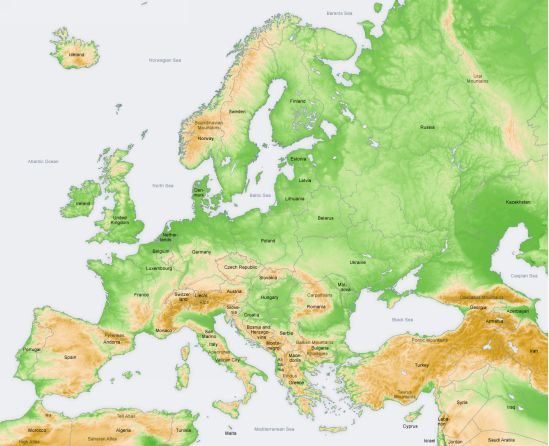
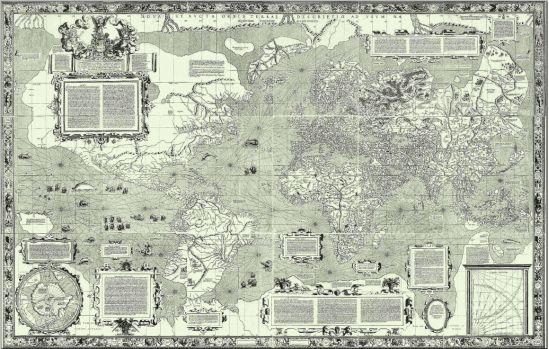

| 金色の夜と天の双子：WITKDP2017 | |
| 青崎ジン | |
| (2017) | |

※ この物語はフィクションであり、登場する人物・団体・地名・名称・歴史等はすべて架空であり、実在のものとは一切関係ありません。
序文
こは真実、偽りなき真実にして、極めて確実、この上なく真なり。
唯一の精妙なる奇跡の成就にあたり、下なるものは上なるもののごとく、上なるものは下なるもののごとし。
万物が一者の明察によってあるように、万物は一者より適応なる運動によって生じたり。
太陽はその父にして、月はその母、風がそを胎内に運び、大地がその乳母となる。
そは森羅万象一切の創造の父である。
その力はそれゆえに完全である。
その力が大地に向かえば、火の元素から土の元素を、粗大なるものより精妙なるものを分離すべし。
大賢をもって、そは大地より天に静かに昇り、再び降る。して優れるものと劣りしもの、二つながらの力を共に受け入れん。
かくて汝は全世界の栄光を我がものとし、ゆえに暗きものはすべて汝より飛び去らん。
そは万物の最強なるものなり、何となれば、あらゆる精妙なものを圧倒し、あらゆる個体に浸透せんがためである。
かくて世界は創造されり。
かくのごときが、ここに指摘されし驚くべき適応の源なり。
かくて世界智の三部分を有するがゆえに、ヘルメス・トリスメギストスと呼ばれけり。
太陽の働きにつきて、我が述べたるに欠けたることなし。
『エメラルド碑文』より
錬金の祖にして科学の神 ヘルメス・トリスメギストス
序章 innledningskapittel
水は落ちるものでございます。天に茫洋と漂う雲からは矢のような雨が降り注ぎ、山から染み出た湧き水は斜面を流れ落ち合流して川を成します。この川が行き着く先は広大なる水たまり、海ですが、なぜ海水が溢れてこないのか、古代からの疑問ではございました。水は低いところへ落ちていく一方なのですから、海の水かさは増す一方でなければ釣り合いが取れません。潮汐の上下はございますが、不可解にも海の水量はほぼ一定なのです。どういうことでしょう。
人々はこの疑問に、いくつかの答えを呈しました。一つは、上から水が落ちてくる分だけ、海も世界の端から滝のように落ちていくという地上平面説、もう一つは、煙が天に昇っていくように、水も見えない煙となって天に昇っていき、再び降ってくるという循環説。または、この世界のどこかに巨人がいて、大きなバケツで海水を掬って、それを世界中に撒き散らすという巨人散水説も、根強い人気を誇ってきました。
さて、融けたサファイヤのような鮮やかな大洋。押しては寄せ返す波の潮騒。響く海鳴り。魚や海藻といった幸を恵んでくれる母なる海。世界一の雄大な水たまり。
そんな海が、陸に上がってきた、と申しますと、果たしてどのような光景を想像しますでしょうか。ある人は、津波のようにして陸を侵食する絵図を思い浮かべるかもしれません。またある人は、くだらないことを言ってないで、仕事をしろ、勉強をしろ、と怒鳴りつけるかもしれませんね。
その日――。
空と対をなす青々とした遙かなる海は、陸に上がってきました。それも津波のような漠然とした浸食ではございません。まず世界中の海岸から水が退いていき、地平線まで海岸が露呈され、七つの海のすべてがとある一箇所に集まりました。渦巻き、圧縮し、膨張し、山塊もかくやといった天衝く半透明の水の塊が、大いなる西方の海に――いいえ、西方の海底上に形作られたのです。
海底は干上がってしまったものですから、陸の境界がなくなった瞬間でもあります。世界各地の港の船は横たわり、砂浜は見渡す限りどこまでも続きました。しかしながら魚は一匹も打ち上げられておらず、小さいのから大きいのまで、一切合切あまさず海塊に引きずられていったのでしょう。海藻ばかりが力なく横たわり、蟹が大きな虫のように歩いて、貝類が口を開きました。
遠く離れた王国アトランティカからも、その想像を絶する水の塊の異様は目撃されました。とは言いましても、遠洋でしたので霞んで見え、上部は雲に隠れて見えなかったのだとか。
巨大という言葉すら矮小な、あまりにも壮大なその海塊は、しばらくぶよぶよと形を変えていましたが、やがて一つの形態に落ち着き始めました。それは猿の化け物、狒々に似ていたそうです。
「海の狒々」と呼ばれたその神獣は、四足歩行で歩いたとされています。なにぶん世界中の海がその身をなしておりますので、のっしのっしと、一歩ごとに大地が揺れ、遙かなる東方の民でさえそのたびにひっくり返ったそうでございます。
鳥たちが一斉に羽ばたいて雲のごとく空を覆い、鼠どもが足の踏み場もなく行列をなして逃げ出しました。軒並み犬は牙を剥き出して激しく吠え立て、猫は毛を逆立てて威嚇の声を上げました。港の市場では、今朝に揚げられた魚が人の身の丈を超えるほど高く跳びはね、風も吹いていないのに植物はざわめき、花々はその趣のある顔を伏せ、バッタ、コオロギ、カメムシ、蟻、あらゆる虫が惑乱に陥って右往左往とひしめき合いました。鎖に繋がれた獅子や虎までが、落ち着きなくうろうろと狭い檻の中を彷徨い歩き、鉄格子に噛みついては助けを求めるような悲壮な咆吼を上げました。
古き魔法大国アトランティカは、海の狒々がこちらに向かってきていることに気づきました。たいへん文明の進んだ国でしたので、王はすぐに魔導兵器による迎撃を命じました。ところが、砲弾は狒々に届く前に山なりに落ちていきました。海の狒々がべらぼうに巨大だったために、距離感を見誤っていたのです。実際のところ、狒々は射程の遙か僻遠でございましたが、彼らにはすぐそこにいるかのように見えていたわけです。
遠方から地響きを立てながら海の狒々が近づいてくる一方で、異変は他にも起きていました。
彼らの頭上では、太陽が尻尾を伸ばして一振りしたとされています。しかし赤々と燃え盛る細長いそれは、太陽の尻尾ではありません。海の狒々にも負けず劣らずの、豪火で形作られた大蛇でございました。それが天空から逆さまにとぐろを描きながら降りてくるのです。
偉大なる魔法大国の王は弓兵隊に命じて射落とそうとしました。大砲では仰角が上がりすぎるため砲口を向けられないので、長弓が使われたのです。真上に向かって王都の全土から放たれたその一斉射撃は、魔力を纏い、虹色に輝く遡りの雨のようでございました。ところが、矢は頂点に達すると炎を纏って返ってきて、王国全体にまさしく雨のように降り注いだとされています。
また遠方からは雷が閃きました。暗雲が急速に広がりながら王国に向かってくるのです。いえ、それに先行する夥しい数の影がありました。空を駆ける狼の群れが、嵐を運んできたのです。
局所的に猛烈な突風たる狼たちは牙を剥き出しにして、一番乗りで王国に噛みつきました。嵐の群狼が通ったあとには人々は木っ端のように舞い散り、石造りの家屋が竜巻にねじ上げられて粉々に砕けていきました。それが四方八方から駆け巡るものですから、栄耀栄華を極めた王都はみるみるうちに無残に破壊されていき、そこへ天空から炎の大蛇が合流してすべてを灰燼へと帰していきました。辻風が高熱を煽り立て、燎原の火のように急速に広がった燦々たる灼熱が、白石の都を大地の臓物がごとくドロドロに融解させるに至っては、もはや為す術はなく。
王国が誇る魔導軍隊も完膚なきまでに壊滅し、どうにか運良く免れた人々は着の身着のまま走って逃げ出しました。本来王国は海に囲まれた大島、ないし小大陸でしたので、亡命するには船が必要でしたが、今は干上がっていましたので隣の大陸まで徒歩で移動できたのでございます。
しかし王は逃げるわけにはいきませんでした。というより笑えてしまって、もう笑うしかなくて、職人による意匠を凝らした石造りの王宮のバルコニーから、崩壊しゆく我が国を見下ろして狂ったように哄笑を上げました。
至るところで黒煙を上げ、赤々と熱せられる煉獄のような王都へと、騒々しい地鳴りを立てながら、ようやく海の狒々が到達しました。そう、海が陸に上がってきたのです。文字通り、足を上げて踏み込んできたのでございます。重量が重量ですので、一歩ごとに地盤が沈みました。半透明の身の内側には世界中の色とりどりの魚が優雅に泳ぎ、鯨が群れをなして回遊していたのが見えました。また体表面には異国の船が帆を広げて航行していたそうでございます。
嵐の群狼や炎の大蛇と違って、海の狒々はこれといった暴力は奮いませんでした。ただ巨体はそれだけで暴力とも言えますので、その点、海の狒々は峻烈極まる破壊力を持っておりました。歩くだけでも地盤を沈ませ、それだけで王国領土は海抜以下へと下がってしまったのです。さらに海の狒々は王国の中心で後ろ脚で立ち上がると、その身を崩しました。
大洪水が王都を洗い流しました。
これは地球史上最大の大津波となって全世界に波及したそうでございます。
かくして、古き魔法大国アトランティカは滅亡を余儀なくされてしまいました。
しかし、それにしても。
フーゴは、所詮は老人たちの語る神話だと思っていました。実際の出来事かどうかはともかく、いま現在にそんなことが起こるはずがないと、そう高を括っておりました。
もう笑うしかありませんでした。
自分の代で王国が滅亡してしまった件の王と同様に。
ただ大口を開けて、抱腹絶倒するばかりでした。
まさか、こんな山奥に、突如として海の狒々が現れるとは......。
神話に聞くよりも小さいですが、それは材料が足りなかったからでしょう。里を斜めに流れる小川と、上空の雲、そして融け残った雪からなる、丘のように大きな狒々でございました。
生まれ育った里が蹂躙され、家族も同然だった村人たちが、悲鳴を上げながら重厚な水塊に踏みつぶされていきます。里の象徴だった水車小屋が薙ぎ払われ、村の共同所有物だった山羊や牛といった家畜が、狒々の体内でもがきながら溺れていきます。
それは命の火を吹き消すような、薄暗い夜。
仄かな光を発する三日月を、透過させる狒々の巨躯を。
フーゴは見上げました。
美しい、それだけ言いました。

春 var
「また逃げるのか」鏡に映った自分が言いました。｢貴様はいつも逃げてばかりだな」
ヴィルは掛け布を降ろし、もう一人の自分から目を逸らします。
フラスコの中の小人が欠伸をすると、硝子戸の向こうの薄暗い夜から曙光が兆しました。
崇高なる紅蓮が、長く続いた暗闇を焼き払う目覚めの時。
澄み切った浄妙の氷剣を鞘から抜き放つと、ヴィルはその痩身を燕のように翻して一足で魔の姿見を斜に切り裂きました。
されど古の秘宝が傷つくことはなく。
掛け布だけがハラリと、絨毯の敷かれた床に落ちました。
縦長の姿見には半分まで掛け布が垂れ下がっておりますが、もう一人のヴィルは下から覗き込んでくるようにして見上げて来ました。｢いつまでそうして逃げるつもりか」ヴィルの美しい顔が醜悪な形相で晒されています。
「黙れ」ヴィルは静かにそう言い返しました。
「片腹痛いわ」
嘲笑に歪む自分の醜い顔に、ヴィルは微細な歯が交互に並んだ刃金鍛造の結晶、鋸状の刀剣を突き刺しました。その鋭利な鋒は確かに眉間を貫いたはずですが、所詮は鏡に写った虚像、意に介するものではございません。
「如何に伝承に名高き聖銀でも、幻影は斬れぬわ」
「私がまだまだ未熟だっただけのこと」
「未熟なのは腕か、心か」
「もうよい」
薄氷のような刀剣を鞘に収めると、手近にあった亜麻の布で魔性の鏡を覆い隠します。｢またそうして逃げ――」もう一人のヴィルは最後まで言えませんでした。
ヴィルが息をつくと、暖炉で薪が小さく爆ぜました。
外では、暁の光が東の空から伸びてきます。針葉樹の枝から僅かな雪の積層が滑り落ち、ざらりとした音を立てました。
× × ×
北洋が雪国であることは自明の理でございますが、じつは、意外と寒くありません。白く輝き、目を焼く一面の雪と、沼地を石のように固くする氷からは免れられないにしても、羊毛の外套を着ていれば充分に体温を維持できます。不思議なものでございますが、同じ北国でありながらバルト海の向こう側にあるダルダリケの東大公国ではそうもいかず、朝から晩まで吹雪が吹き付けてきて、白昼堂々、氷の精に魂を抜かれてしまうそうで、それに比べると北洋は温暖なほうだと言えるでしょう。
若き騎士イクセル・オングストロームは、短いながらもこの春が好きでした。北洋の季候では、冬の終わりに年間最大量の大雪が降り、その後に空が鮮麗な群青色に晴れ渡るのが通例となっております。頬を撫でるような気持ちの良い春風が吹き、急速に暖かくなるのに合わせて、冬眠していた動物たちは身を起こします。雪と氷は溶け出して轟々と川の流れをなすと、緑は芽吹き、渡り鳥が姿を見せます。命の息吹を肌で感じられるこの季節が来ると、イクセルは外套を脱ぎ捨て、両手を広げて大きく深呼吸をするのが好ましく。
「......堪らんな」
腰に手を当てて、しばらく全身で冬の終わりを堪能しました。
その後、凍りついていた体をほぐすように部下たちと訓練に励み、三時課の鐘に合わせて遅めの朝食を採りました。
駅舎に顔を出して、とくに速達が届いていないことを確認します。郵便制度は、早馬による駅伝リレー制の成立によって長距離を高速で配達することが可能となりました。ただし公的利用に限られています。古代から言われてきたように、民間に郵便の門戸を開くと反体制派の結束に繋がるからです。
とはいえ、時代は変わりつつありました。より広範囲で深海のように深い知的交流を求める大学の徒や、ネーデルラントを中心とした商人たちによる商業取引といった需要は、拡大の一途を辿っております。彼らは民間の飛脚を利用して文を交換していますが、情報は鮮度が命ですから、公的郵便による高速配達をぜひ利用したいのです。大帝国化の野心に燃えるハプスブルク家によって、地中海のほうでは郵便網が新しく整備され、思い切って民間に開放されたことで莫大な収入が産み出されました。しかし懸念されていたとおり、民間人の不用な結束が生まれ、商業国家の独立意識や、宗教の対立などが加熱してしまっていますので、北洋でも真似するか板挟みです。
さて北洋の春は、月が満ちて再度かけるまでの、わずかなあいだしか続きません。イクセルは踵で馬腹を蹴って巡回を急ぎました。泥飛沫が上がります。旅装を施した馬には、
〝北洋三国同盟連合隊〟
の織旗が立てられ、たなびく旗面には陽光に映える見事な染織と職人気質な刺繍によって、怪物のノルウェー、船艇のスウェーデン、剣と槍のデンマークが、北洋の地はかくあれかしと自己主張しております。
アザミにミミナグサ、鮮やかなレンゲソウに、野バラの香り。多種多様な花が開き、色彩豊かな蝶々が羽ばたく――。
北洋三国各地の春を、イクセルはすべて体験したかった思いもありますが、この時期、活発になるのは人も鳥獣も一様にございまして、スウェーデン王国の北部から川の流れに沿って南下しました。雪解けに伴って、凍りついていた川も軋みを上げながら崩れ流れていくのを脇目に、雷槍隊の馬列は商人の荷馬車を追い越していきます。
この時期は、橋脚が千早振る川の浮氷に折られ流されてしまうなどの被害が各地で続出しますので、イクセルたちは旅費と相談しつつ、迂回と乗船をうまく使い分けながら、定期に訪れる町で文を確認しました。
二つの町では連絡はありませんでしたが、三つ目にはスウェーデン王室の印章で封蝋された手紙を受け取りました。国王直属兵からの手渡しでございます。直ちにご確認を、と促されました。中身を検めてみる前に、イクセルの鼻が魔力のニオイを嗅ぎ取り、あの厳めしい老王を思い浮かばれました。
「グスタフ王からの封書だ」
「となると、魔術師としての用件でござりましょうな」
隊の副長を務めている老兵は勝手を知っております。違法なる輩のそれならまだしも、異教の徒、魔術師たちの密通には関わらぬが吉、部下を率いてイクセルから距離を取りました。
そう、今やヴァイキングすら抑えて北洋史上一の賢王と名高いグスタフ王は、魔術師、魔法使いなどと呼ばれる裏の顔を持っています。そもそも彼の主な業績たる、桁違いに効率的で良質の鉄を生み出す製鉄技術は、中央の神聖帝国にお忍びで留学した際に錬金術師から学んだものを、さらに発展させたものとされています。
錬金術師の系譜に連なり、真理に到達した魔法使いたち。
手紙の内容は、〝賢王〟の織魔師が緊急収集を呼びかける不穏な文章でございました。騎士である〝雷〟のイクセルは馳せ参じる他にありませんが、果たして曲者揃いの北洋の織魔師は何人まで集まることやら。
少なくともあいつは来ないだろうな――。
盟友〝夜〟のヴィルギットの麗貌を脳裏に描くと、イクセルは静かに苦笑しました。
手紙の内容にはもう一つ、イクセルに名指しでの勅命が下されていました。曰く、隣国のノルウェー王国のとある里村が、あろうことか一夜にして滅んだらしく、その真偽を確かめよ、とのお達しで。緊急集会の開催理由もその事件絡みなのでしょう。
イクセルは隊を離れ、西へ一途、颶風がごとく駿馬を走らせました。雪解け間もない野原には早くもハリエニシダの黄色い花が咲き乱れ、思わず目を奪われてしまうところでしたが、今は花を愛でる暇はございません。
例の里村はコングスピンゲルの方面にあり、およそ百マイルの旅となります。イクセルは東西南北四つの街道の十字交差点マールングの町からトーンシュビューへ一時迂回すると、馬を乗り換えてノルウェーとの国境へ近づきました。途中にあったのは森、湖、川、畑、小さい村ばかりでございます。
早朝に国境を越えると、まもなく山賊に囲まれました。雄々しい熊や猪の毛皮を羽織っているあたり、最低限の腕は立つようですが、イクセルが後ろも見ないで矢を躱し、所属と名乗りを上げながら剣を抜いて空気中に織り込まれている雷電を紡ぎ出し、夕霧の中を轟音いななく地上の霹靂で満たすと、半分は武器を捨てて逃げ出しました。
残ったもう半分は感銘を受けたのか、弟子にしてくれと下手に出てきましたが、仕事柄、イクセルはそんな暇はないために、男たちにスウェーデンの鉱山で働くよう薦めました。グスタフ王が富国強兵に励みだして以来、スウェーデンの鉄鉱山は万年人手不足なので、体力のある彼らには打って付けだと思ったのです。元から気性が荒く仕事がなかったために山賊に身をやつしていた彼らですから、三国同盟連合隊の口添えがあるならと素直に従いました。
本来なら山賊業の咎に対し相応の罰を与えねばならないところでしたが、山賊の大半はただ食い扶持を求めているだけだと知っておりましたので、工夫の激務でよかろうと判断しました。肉がよじれ、骨が砕け、肺がやられる、大変な荒仕事でございますから、配置によっては縛り首や禁固よりもずっと厳しい刑罰となりましょう。
まだ夜は冷えますが、どうにか野宿で一夜を明かしました。目を覚ますと朝露と地面の湿り気で毛布はびっしょり濡れてしまいました。イクセルは毛布を渇かすため、旗のようにして槍に結びつけ、そのまま馬を走らせました。
昼過ぎにコングスピンゲルに到着すると、イクセルは現地の調査隊に合流しました。誉れ高き連合隊と言えど、余所者が干渉するのは現地兵にとって面白くなく、「渡り鳥」「いつも遅れてやってくる」などと陰口を叩かれていることをイクセルも知っています。しかし、地位権力としては連合隊のほうが上ですので無碍に扱うわけにも行かないでしょう。現地の調査隊は卑しい商人のように揉み手をしながら出迎えてきました。
イクセルは軽く説明を受けながら、山道に馬を歩かせて例の崩壊した里村ファーネルゲスへ案内してもらいます。
「迷信深い連中は、水の精が暴れたとか、トロルが出たとか言ってやすが、あたしゃあ、雪解けのせいで小規模な雪崩が起きたんじゃないかって思いやすね。何せ、里じゅう水浸しでやしたから」
「この時期なら、どこでも水浸しだろう」
「いえ、洪水が起きたような有様でやしたよ。ボロ小屋なんかはもちろん、石造りの水車小屋まで流されちまってましたし。人も家畜も水を吸ってぶくぶくに膨れ上がった溺死でござんした」
「ふむ......。生き残りはなんと言っている」
「おりやせん」
「なに」
「全滅でござんした」
北洋半島を縦断する山脈南部の斜面に、その里村はありました。が、話に聞くとおり木造家屋の残骸が転がっている状態です。ネコの額のように狭い畑も、普通の地面と見分けがつきにくいほどでした。この里村が崩壊したのがおよそ一週間前とされていますが、早くも虫や鳥獣、植物が浸食しようとしております。まこと人のいなくなった土地というのは無残なものでございます。
「いやまったく、山ん中で洪水が起こるなんて堪りませんなあ」
改めて案内役が頭を抱えて溜息を吐きますが、「いや......」とイクセルは鼻をすんすんと動かしました。臭うのです。自分の他に誰か魔術師がこの地に来たかと尋ねましたが、案内役は胡乱げながらも「そんな話は聞いておりやせんが」と小首を傾げます。
北洋の若き猟犬は近くの水たまりから少々、水を手で掬うと、注意深くニオイを嗅ぎ取りました。やはり、と確信します。今回の事件は自然災害ではない――。
その時、全壊した廃墟から物音がしました。
「狐ですかね」
「違う、人だ」イクセルは声を張り詰めました。｢馬鹿野郎、生存者がいるじゃあないか」
ええっ、と案内役の男は声を裏返しますが、獣並みの聴力を持つイクセルには確かに「助けて......」と聞こえたのです。
急いで駆けつけると、声の出所をまず確認しました。それから全体が崩れないように慎重に瓦礫を取り除いていきます。
出てきたのは泥だらけの子供でした。十歳頃の矮躯でしたが、男か女かわからない中性的な顔立ちをしています。痣だらけの体もまだ未発達で、服もボロボロに破れているためにスカートかどうかもわからず、やはり性別は判断できません。すっかり衰弱しており、意識は朦朧としているようです。
コングスピンゲルに引き返したイクセルたちでしたが、唯一の生存者である子供がなかなか目を覚まさないのでヤキモキさせられました。とくにイクセルは織魔師の緊急集会が差し迫っておりましたから、どうにか情報を引き出したいのですが、叩き起こすわけにも参りません。
けっきょくイクセルは単身、集合場所へ馬を走らせました。ノルウェーの王都オスロで一泊すると、さらに南下してモスの港から漁船に相乗りしました。
北洋三国の国境が交わる海、スカグラク海峡に浮かぶ孤島が目当ての地でございます。およそ人が住むには適さない岩石ばかりの小さい島で、漁師たちも普段は見向きもしません。ところがそれは魔術による偽装と迷彩であり、じつはたわわな果実の実る魔性の島でございました。〝大賢〟マグヌスが時間を掛けて改良したと聞き及んでおります。イクセルは船に乗せてくれた漁師に銀貨を手渡すと、小舟に乗り換えて櫂を漕いで行きました。
砂浜から森に入り、丘の中腹の館を訪れました。たいそう豪奢な装飾が凝らされた荘厳なお屋敷でございます。これほど立派な建築物は、権能を誇示する神聖帝国でもそうそう見られるものではないでしょう。また、人型のゴーレムが堂々と使用人に甘んじている光景も、妙味に溢れた景趣ではありませんか。
口を利けぬゴーレムは無言ながら恭しくイクセルを出迎えると、屋敷の三階にある会議室、一角鯨の間へと通してくれました。
「雷のイクセル、招請に給わり馳せ参じました」
「おお、よくぞ来た。参られよ、参られよ」
好々爺の笑顔で迎えてくれたのは、この島の主にして北洋の生きた伝説〝大賢〟マグヌス＝ネルケ・ベッグマンでした。百歳を優に超える仙人のはずですが、イクセルが子供の頃から今に至るまでせいぜい七十にしか見えないので、きっと不老長寿の秘薬を創発したのでしょう。
その隣に並び無言の首肯をした煌びやかな老人が、〝北洋の獅子〟にして〝賢王〟グスタフ・アードルフ・ヴァーサです。深遠を覗くかのような千尋の目つきと、剛毛の立派な髭、そしてヴァイキングの子孫らしく筋骨隆々の体躯をしておられます。一代でスウェーデン王国を名だたる大国に押し上げた、北洋の盟主でございます。
イクセルはこの二人の老人に頭が上がりません。デンマークの片田舎で迫害を受けていたトロルの子、野蛮人、それが冷ややかな大地に野垂れ死ぬことなく、連合隊の雷槍隊を任される騎士にまで出世できたのは、ひとえに彼らが拾ってくれたおかげだからです。
「......ふん、吾輩には挨拶はないのか、祖国の執政官であるぞ、イクセル」
いじけたようにそう言った中年の貴族は、デンマーク王国を取り仕切るズデーデン公でした。イクセルは慌てて礼を取りましたが、はっきり言いましてズデーデン公は大した実績もなく、落日の憂き目に遭ったデンマークをどうにか支える地味な存在でした。織魔師としての実力も怪しいもので、何せ彼が魔法らしい魔法を使ったところを、一度としてイクセルは目にしたことがないのです。
かつて北洋の強国と言えば、デンマーク王国でした。その祖先はかの大海賊ヴァイキングでも取り分け恐れられたデーン人であり、中央大陸の沿岸を北から地中海まで恐怖のどん底に叩き落としました。北洋が未だ神聖帝国の侵略を免れているのも、玄関口たるデンマークが堰き止めてくれているからであり、それがデンマーク人の誇りでもあります。
大航海時代に入って活発化した国は多く、スペイン、ポルトガルは言うまでもなく、同じく海洋大国であるブリテン諸島が西から世界中に海路を広げております。また、新興国のネーデルラントや、その北方に控える氷と火山の国（アイスランド）、バルト海に望む各諸国も虎視眈々と地力を上げています。
北洋は予断を許さない状況であり、三国同盟の維持とこれまで以上の結束が求められます。
それを裏から支えるのがこの魔法使いたち「月夜の八人」なのですが、どうやら集まったのはイクセル、マグヌス、グスタフ、ズデーデンの四名だけのようでした。
一応夜まで待ってみても、一人も増えません。卓を囲んだ賢者たちは溜息を吐きます。
「やれやれ、老人とその犬しか集まっておらぬではないか」ズデーデン公が吐き捨てました。
「おヌシのほうもアウグステフとゾンダーブルクを引っ張って来るべきだった」グスタフ王が言い返しました。
「やめい、やめい」大賢マグヌスが鬱陶しそうに取り持ちます。｢一国の主がわっぱのような言い争いをするでない。会議を始めよう。グスタフ坊や、此度の収集はそちの呼びかけによるものであったな」
「坊やと呼ぶのはおやめくださいと、いつも言っているでしょう」北洋の獅子は憮然としました。
「おっと、これはすまぬすまぬ。そちがちっとも成長しておらぬようだったので、つい、な」
マグヌス老はイクセルのほうへウィンクを飛ばしてきました。そのお茶目な態度にイクセルは困ってしまいます。
「それで、いったいなんの用なのだ」ズデーデン公が話を戻しました。｢いずれのお歴々も、子女のように口元に手を当てて、お喋りに興ずる暇はありますまいに」
皮肉の丁寧語にふんと鼻を鳴らすと、グスタフ王は話を切りだしました。
「およそ八日前、ノルウェー南部から大きな魔力の波動が観測されたのは、皆も知るところであろう」
マグヌスとズデーデンは神妙に頷きました。あの崩壊した里村のことでしょう。イクセルは八日前はかなり北部にいましたので、魔力の波動はほとんど届きませんでしたが。
「問題は、前触れなく突然に観測されたことだ。どれほど優れた魔法使いが放った魔力波にせよ、ノルウェー南部の山の中、そんな場所にまで警備に気づかれることなく侵入したとは。神出鬼没な悪戯王、ロキでもこうは安々と行くまいて。――イクセル、現地で調査をしたな。覚えのあるニオイだったか」
グスタフ王の視線に、イクセルは首を振りました。｢初めて嗅いだニオイでした」
「となると、考えられる可能性は二つ」グスタフ王が皆に確認するように続けました。｢恐ろしく隠密性に優れた魔法使いが入り込んだか、あるいは、民の誰かが覚醒したか......」
「では生き残りの子供が？」
ズデーデン公が意気込みました。再興を企むデンマークの執政官としては、一人でも多く優秀な魔導師を抱え込みたいのでしょう。
「あの子が魔法使い......？」
イクセルは顎に手を当てました。里村の調査結果に関してはすでに皆に報告してありますが、あの子供に素養があったとは今ひとつ頷けません。確かに魔力のニオイは漂わせていたものの、見逃してしまいそうな微かな量でしかなかったのです。そのニオイにしても、里村で嗅いだ魔力のそれとは別物に思えました。
「魔力を体外に放出する体質かもしれぬ。いずれにせよ野放しにはしておけんな」
グスタフ王がしかつめらしく言うと、即座にズデーデン公が応えました。
「ここは一つ吾輩に任せてみてはどうであろう。なに、悪いようにはせぬさ」
「デンマークはそちも含めてすでに三人もの織魔師を抱えておる」マグヌス老が渋いワインを飲んだような顔をしました。｢これ以上は均衡が崩れかねん。どこかに弟子入りさせるなら、ノルウェーじゃな。祖国であろうし」
「それでは......」
イクセルは思わず溢しました。今やノルウェー王国の織魔師は一人しかいないのです。それはイクセルの盟友でもありました。
「あやつもそろそろ弟子を取る時期じゃ、のう、皆の衆」マグヌス老は悪戯好きの少年のような笑みを浮かべました。｢ここは一つ、〝夜〟に任せてみては」
ふたたびコングスピンゲルに引き返したイクセルは、例の子供のところへ直行しました。ヒース葺きの粗末な宿舎の門戸を開き、顔を覗かせると、薄汚れた子供が藁ベッドから上半身だけ起こしていました。
「目を覚ましていたか。ええと、フーゴ、で良かったんだったかな」
まだ寝ていたその子供に名前を聞いてみた時、譫言ながら「フーゴ」と応えたのです。
「違ったか」
「いいえ、......僕は、フーゴです」
イクセルは自己紹介しようとしましたが、すでに町の者にだいたいの経緯を聞かされていたようで、イクセルが優れた魔術師であること、フーゴの命の恩人であることは知らされていました。
フーゴに寄れば、村が崩壊したのは神話に聞く海の狒々が突如として現れたからだと言うのです。古き魔法大国アトランティカの言い伝えはイクセルも知るところですが、まさかという気持ちは隠しようがありません。
「確かなのか」
「間違いないと思います。尤も、神話の怪物を見るのは初めてなので......」
古き魔法大国アトランティカが西方の海に没したのは、神々の時代、一万年も前とされていますから、それは誰も見たこともないでしょう。
「でも、周囲の水が一身に集束したのはこの目で見ました。僕が手に持っていたコップから、水が逃げていってしまったものですから」
他にも、父親が水瓶から柄杓で水を注ぎ、頭から被ろうとしたところ、水は落ちる途中で鳥のように飛んでいってしまったのだとか。
そして水を追って外に出てみると、里の中心に巨大な水塊が形作られようとしていた、と。その周りには渦巻くように水が浮遊していたそうな。星降るような綺麗な夜に、それは息を飲む幻想的な光景だったでしょうが、しかし次の瞬間には、凄絶な修羅場と化したのです。
海の狒々の猛威は凄まじく、村は瞬く間に蹂躙され、フーゴは転がってきた家屋に巻き込まれてしまったところまでは覚えているそうです。
「あの、他に生存者は」
「残念だが......」
フーゴは息を飲むと、歯を食いしばって目に涙を浮かべました。しかし彼は強い少年でした。思い立ったようにベッドから飛び出すと、イクセルの前に跪きます。
「イクセル様っ、イクセル・オングストローム様っ。北洋の地に彼ありと轟く偉大なる騎士様っ。僕は是が非でも故郷の仇を討ちとうございますっ。どうか僕に、修行をつけていただけないでしょうかっ。どうかっ」
これは都合がいい、とイクセルは思いました。
「故郷をなくした憐れなフーゴよ、安心せよ、我々としても、おまえを監視がてら弟子にしてやるつもりだった」
「ああっ、じつにありがたきことで」
「ただし、己は任務に忙しい身、北洋の安寧のためにはおまえに構ってやる暇はない」
「それでは......」
「己よりもずっと適した師匠を紹介してやる。傷は癒えたな。旅に出るぞ」
「は、はいっ」
イクセルはそそくさと旅支度を済ませ、フーゴにも替えの服を用意してやりました。少年フーゴはズボンを穿くのに手間取りましたが、傷が痛むからでしょうか。
「......おまえは髪が長いな、フーゴ」
波打つ癖のついているフーゴの赤髪は、男子にしては長いほうでした。フーゴは目を泳がせると、いきなり「ずっと切ろうと思っていたのです」とテーブルのハサミを取り上げてジョキジョキと切ってしまいました。イクセルのほうが慌てさせられます。ざっくばらんに赤毛を切りそろえたフーゴは、これでスッキリしたと言いつつも、未練がましそうに床の赤毛を見下ろしました。
イクセルは病み上がりのフーゴを後ろに乗せると、馬の腹を蹴ります。
「どこに向かうのですか」
「北だ」
グロンマ川に沿って北へ向かいます。グロンマ川沿いの街道は北洋山脈西側の麓に沿って何百マイルも続く長い道です。一日でアルプダール町まで駆け抜けましたが、全行程の二十分の一ほどしか進んでいません。タンポポの黄色い花や野いちごが小径を彩っていましたが、馬に乗り慣れていないフーゴは半日で尻を痛めました。
「無理もない。農民の子だろう」
「というより、村の仕事は狩猟が主でした」
「おまえも弓を引いたりしていたのか」
「いえ、わたしは専ら糸紡ぎと刺繍を......」
それは女性の仕事でしたので、フーゴはアッと声を上げました。
「糸で、あのっ、罠を仕掛けて、兎を捕ったことがありますっ」
そうか、とだけイクセルは応えておき、もう少し優しくしてやろうかとも思いました。
森と湖の多い隣国のスウェーデンに比べ、こちらのノルウェーは、地面の高低差が激しいことが特徴です。断崖絶壁に挟まれたフィヨルドと呼ばれる深い谷間や入り江が各地にあり、場所によっては通常の動物が住むには呆れるほど高低差がありすぎるため、ヨトゥンハイケン、すなわち巨人たちの住処などとも呼ばれます。
雪解けの川が滝となって落ちていく壮麗な光景も目の当たりになり、疲れが癒やされる気もしました。
二週間近くかかった旅が終わりに差し掛かると、背中にしがみついているフーゴが疑問の声を上げました。
「あれ。あの森......」
「気づいたか」
進行方向にある森は、乾燥した空気と共に見通しのいい爽快な北洋北部にあって、中央大陸の魔女の森を思わせる陰湿さが窺えます。
「〝夜〟の森だ。気を抜いたら二度と出て来られないぞ」
深い山奥に、壮麗なお屋敷が建てられていました。異質な白い石材で建てられており、染織と刺繍も優美な大きな垂れ布と、海獣の象牙を集めて作られた前衛的なオブジェが装飾されてあります。工房と思われる建物も複数隣接されており、ちょっとした村のような規模でしたが、フーゴの村とは比べられない立派な集落でした。ただし行き交うのは人ではなく、人型をした動く土人形、ゴーレムたちでございます。
ゴーレムは大きさも様々で、幼児くらいの者から巨人のごとき者までいます。立ち振る舞いが洗練された者もいれば、たどたどしい者もいます。
徐行する馬の上で、フーゴは口をあんぐりと開けてしまいました。
「ゴーレムを見るのは初めてか」
「はい......」
「織魔師にとっては馴染み深い使用人だ。おまえもすぐに慣れるさ」
屋敷の玄関に近づくと、内側からドアが開き、一人の貴公子が姿を見せました。
それは氷原の王者、白熊の毛皮を羽織った麗人でございました。その美貌は天使のように中性的で欠けなく曲がりなく、キラキラと輝く白金の長髪は、星合いの空に瞬く天の川のように流れていました。きめ細かな肌は雪をも欺く卯の花の白にして、翡翠の両眼は千里を見通す水晶がごとき碧玉でございます。この方こそ北洋の妖精王、と紹介されても、疑うことなく頷いてしまいそうです。
これが、夜。
一日の半分を手に入れし者。
誰もが恐れ震える闇の軍勢。
逃げること叶わず、誰にも平等に降りかかる盲目の時。
人はそれを前にすると、終わりを感じずにはいられません。
「彼こそが夜の織魔師。全科博士。ノルウェー王家の血に連なる者にして、支配の魔法使い。その名も高きヴィルギット・アレクシス・スヴェーリエ・アウ・グランホルムセン卿だ」
イクセルが紹介すると、フーゴの第一声はこうでした。
「えっ、あれで男性なんですかっ」
無理もありません、夜があまりにも美しすぎるものですから。
「ほう、この私をあれ呼ばわりか。随分と巫山戯た餓鬼ではないか」
ヴィルが不機嫌そうに言うと、その子供は慌てて謝ってきました。
「も、申し訳ありませんヴィルギット様っ。他意はないのですっ」
薄汚れた子供でした。跳ねっ返りの短い赤髪に、痩せた体。立ち振る舞いにも気品は感じられませんから、その身分は一目で知れます。
「イクセル、文もなく唐突に姿を見せたと思ったら、なんだその餓鬼は」
イクセルは軽く肩を竦めます。｢文はなくて当然だ、直行してきたから己たちのほうが早く着く」
郵便で一番早いのは伝書鳩ですが、これは猛禽類に食われたりして行方不明になる恐れもございます。
「いきなり押しかけて悪いとは思っている。だが、集会に姿を見せなかったおまえにも責はあるぞ」
「知ったことか。月夜の八人などと自称した覚えはない」
「夜、おまえはいつも暗闇に身を潜めているが、ただそれだけでも世界に重大な影響を及ぼしていることを、いい加減に自覚すべきだぞ」
「黙れ雷」夜はきつい口調で言い返しました。｢おまえこそいつも唐突に現れ、私の静寂を掻き乱す」
言い合っている二人に挟まれ、フーゴがおろおろしていると、イクセルが息をつきました。
「まあ立ち話もなんだ、茶でも出してくれよ」
傍若無人な客人にヴィルは舌打ちしながらも、渋々と二人を招き入れました。馬はゴーレムが厩へ引っ張っていきました。
お屋敷は三階建ての大きな建物です。主に白い石材によって建てられていますが、継ぎ目が見当たりません。まさか一枚岩をくり抜いたわけでもないでしょうが、これほど自由度のある石材をフーゴは知りませんでした。
「これは、なんの石なのですか」
「ヴィル、この屋敷は何でできているんだったかな」
「この白い建材か。コンクリートだ」
「コンクリート？」フーゴは小首を傾げました。｢耳慣れない石の名ですね」
「天然に存在するものではない。人造的に生み出されたものだ。ある意味、陶器を作るのと似たような工程を辿る。粉末状の鉱物を練り合わせるわけだ。ただし焼くのではなく、放っておけば勝手に固まる」
フーゴは廊下を歩きながら、壁のコンクリートに手を触れてみました。サラサラとした手触りですし、強度も高そうです。
そのときヴィルと目が合って、フーゴは咄嗟に目を逸らしてしまいました。すこぶるにつき高貴な美丈夫とは面映ゆくて顔を合わせていられません。心臓が高鳴って頬が熱くなってきます。色白の細面に、紅を差したような赤い唇が魅惑的でした。
「コンクリは素晴らしいぞ」とヴィルは続けました。｢簡単に作れるし、簡単に固まる。型に流し込むだけでいいから自由に形を決められる。そのくせ強度、遮音性、耐火性、耐水性、あらゆる点で桁違いの性能を誇る。しかも面白いことに、物によっては水中でも固まるのだ」
「え、水中で乾燥するんですか」
「乾燥はしない。どうやら構成物質が水分と結合することで固形化するようなのだ。神の法のなんと不思議なことよ」
フーゴは理解できませんでしたが、これだけ言いました。
「魔法の建材というわけですね」
とにかく理解できないものはすべて魔法だろう、と。
「いや」と、しかしヴィルは否定するのです。｢織魔術は一切使っていない。錬金の法の応用、建築家の知恵だ。しかもこれが、千年以上前に存在した」
「そんなに昔からっ」
古代であり、ヴァイキングがまだ各地へ遠征する前でした。
「尤も、当時はその製法が秘匿されていたために失われた技術となってしまったが、百年前くらいに教会のお抱えの石工の親方が再発見した。教会の総本山である地中海の都には、コンクリだけで作られた梁のない大聖堂がある」
「梁がない、ですか」
フーゴは想像しますが、梁がない建物など考えられません。
「本来なら自重で崩落してしまうところだが、天井が半球形型になっていることで重量を分散するという大変優れた設計になっている。設計者はきっと織魔師だろうと思ったが、これが普通の人間だった」
フーゴは言葉もありませんでした。とんでもない業界に足を踏み入れようとしている、と急に怖くなってきました。田舎者の自分が、人類の叡智が結集する織魔師の世界でやっていけるだろうか......。
そもそも、織魔師とはなんでしょうか。フーゴには今ひとつピンと来ません。魔法使いとは明確な違いがあるのでしょうか。
客室に入るとビロード張りの調度品が出迎えました。腰を落ち着け、その点について聞いてみました。ヴィルは「そんなことも知らんのか」と呆れましたが、イクセルが応えてくれます。
「織魔師とは錬金術を極めて真理に到達した魔法使いのことだ。この世の万物は第一質量である魔力が神の法によって織り込まれていると考え、その理を解し、任意に織り込み直すことで神秘を実現する。わかるか」
「ええと、あの、その、はい」
「まあ、今すぐ理解する必要はない。じっくり学んでいけばいい」
イクセルは優しく言ってくれました。そこでヴィルが声を掛けてきます。
「なんだ、その餓鬼は。おまえの弟子だったのか、イクセル」
「いや、己の弟子ではない」
「ではなんだ」
「おまえの弟子だ」
イクセルが薄笑いを浮かべながらそう言うと、ヴィルは一瞬だけ黙り、身を乗り出してきました。｢なんだと」
「だから、おまえがこれからこの子を育てるんだよ」
「馬鹿も休み休み言え」
「集会でそう決まったのだ」
「勝手に決めるな」
「欠席したおまえが悪い」
「知ったことか。連れて帰れ。私は弟子など取らんっ」怒鳴りました。
ヴィルの美貌が怒りに歪み、その迫力にフーゴは萎縮してしまいます。自分が怒られた気分でした。チラリと上目遣いに窺ってみると、麗貌の貴公子が睨みつけてきていました。フーゴは益々縮こまってしまいます。
「まあそう撥ねつけるな、ヴィル」イクセルが手を組んでそこに顎を乗せました。｢北洋の今の状況はおまえも知っているだろう。一人でも多くの織魔師は欲しいところだが、誰の弟子にするかは一考せねばならない。そこで白羽の矢を立つのはおまえをおいて他にないのだ」
「何度も言わせるな、私は弟子など取らん」子供っぽくそっぽを向きました。
「だがヴィル、そうなると北洋の衰退を招くぞ」
神妙に言うと、イクセルは矢継ぎ早に続けました。
「五百年前のヴァイキング時代の終焉はおまえも知悉しているはずだ。海洋戦術一つで北洋から地球海にかけて暴虐を奮った我らの祖先は、自国で銀が採れる手段を見出すと、海賊行為と貿易をやめて北洋の地に引き籠もり始めた。その結果どうなった。デンマークは中央大陸の広大な領地を神聖帝国に侵略され、教会がその版図を広げた。今や文化的にも侵略され、元来の北洋神話はかの氷と火山の孤島にわずかに残るばかりではないか。高きオージンやトール、勇ましいチュール、お騒がせ者だが愛嬌のあるロキ、そして北洋の織魔師の女神たる運命を織りなすウィルド三姉妹。これらは失われて久しく、民間には冬の夜空を彩るワルキューレの鎧の極光だけが語り継がれる現状だ。誰も曜日にトールやチュールの日があることも知らん。嘆かわしくはないのか」
さすがのヴィルも押し黙りました。フーゴは、ふと気づいて部屋の中を見回します。失われし北洋神話の神々を描いたと思われる異教の絵画が飾られてあり、フーゴも初めて故郷の古い時代に思いを馳せました。フーゴの村は教会に染められ、記念日や収穫祭なども大陸のそれに習っていたのです。
イクセルは、さらに続けます。
「ヴィル、おまえがこんな北洋の極地に引き籠もっている理由は察しがつくぞ。反知性主義を掲げる教会が鬱陶しいのだろう。奴らは錬金の法を毛嫌いする一方で、錬金の延長線上にあるコンクリートの技法で大聖堂を建立した。自分たちに都合の良いものだけを認め利用し、どんな矛盾も曲解し詭弁を弄し正当化する奴らのやり口が気に入らないのだろう。だから北へ逃げた」
「逃げてなどおらん」
「ならばなぜ表に出て来ない」イクセルは舌鋒鋭く捲し立てました。｢夜。全科博士。おまえが秘匿する八百万の織魔術を一般化すれば、北洋は必ずやかつての威光を取り戻す。大手を振って太陽の下を歩けるのだぞ。折しも中央大陸では大学を中心に理性主義が勃興しつつあり、知識人はこれまでの迷信や根拠のない言い伝えを排除して論理的な時代を形成しようと努力を重ねている。だがおまえは暗闇に隠れてばかりだな、夜」
「他人のことなど知ったことではない」
「おまえは幼児のように好奇心が旺盛ではないか。最新の研究成果を皆と交換し、交流を深めたいと思っているはずだ」
「有りもしないことをよくもぬけぬけと」
「そうか。ではなぜおまえは東方や南方への商船に使いを乗せている」
「それは......」
「知らないものを知りたいからだろう。それでいて教会には近づきたくないからだろう。だから大陸を大きく迂回するルートを採っている。別に陸路で南の砂漠まで下ることもできるし、シルクロードを通って東方を訪れることも容易ではないが可能ではないか」
「大航海時代だからだ、他意はない」
「己にはどうもそうは思えんな、夜」イクセルは腕を組みました。｢おまえは要領がいいから、なまじ逃げるのも上手い。だが太陽の裏側はいつだって暗く沈んでいるぞ」
「詩的な言い回しをしようとして失敗しているな」
「ほら、話を逸らそうとした」
イクセルがそう指摘すると、ヴィルはふくれっ面を上げました。
緊迫した空気に、フーゴは石像のように固まっておくしかありません。
「ではヴィル、こうしようじゃあないか」イクセルがふいに提案しました。｢この少年、フーゴを弟子にするのは一年だけでいい。それなら互いに面目も立つ」
「......、少年？」
不審そうな目で見られ、フーゴは顔を伏せました。
「ヴィル、これ以上は駄々をこねないでくれ。マグヌス老やグスタフ王を困らせるな。よかれと思ってやっているのだ」
「大きなお世話だがな......」
「では、己はこれで失礼する」イクセルが席を立ちました。
フーゴもヴィルも驚きます。
「もう帰るのか」ヴィルが口に出しました。
「用事が済んだら一刻も早く隊に復帰せねばならんからな。どうした、寂しいのか」
「なんだと。たわけめ。この私が兎のように寂しがるとでも思ったか。せいせいするわ。さっさと出ていけ。鬱陶しい」
「おまえに言ったのではない、フーゴに言ったのだ」
ヴィルの頬に朱が差しました。｢か、帰れっ。ゴーレムをけしかけるぞっ」
イクセルは笑い飛ばすと、次に膝を折って、フーゴと目線を合わせました。
「フーゴ、ヴィルは悪いやつじゃあない。ただ一寸、気むずかしいところがあるだけだ」
「は、はい」
「厳しく当たられることもあるだろうが、それはどんな職人の徒弟になっても同じことだ。まずは一年、頑張ってみてくれ」
「はい。イクセル様。お優しくしていただきありがとうございました。この粗末な命をお救いくださったひとかたならぬご恩、いつか必ずっ」
「そんなことは忘れていいのさ。では、達者でな。ときどき様子を見に来るぞ」
使用人のゴーレムが扉を開け放つと、イクセルはそこから出ていきました。
彼の姿が廊下に消え、扉が静かに閉められます。
フーゴとヴィルが二人きりになりました。
フーゴが恐る恐るヴィルを窺い見ると、ヴィルは、積年の恨みでも込められているかのような双眸で睨んできます。
「名前は」
「はい？」
「名前だっ、二度も言わせるでないっ」ヴィルがテーブルを殴りつけました。
「ひっ......。あ、あの、ええと、ふ、フーゴと申しますっ」
「どう書く」
「えっ」
「綴りはどう書くのかと聞いておるのだっ」ヴィルがテーブルを繰り返し殴りつけました。
フーゴは早くも涙目になって応えました。｢わ、わかりませんっ」
「なんだと。どういうことだ」
「字は教わっていないんですっ」
「貴様っ、文字の読み書きもできんくせにこの私に弟子入りしようと言うのかっ」
「ひぃぃ、ごめんなさいぃ」
フーゴは床に膝をつけて謝りました。ヴィルは頭を抱えて嘆いています。
樫のドアの向こうで、イクセルは相好を崩しました。新しい師弟がさっそくやり合っているのが聞こえてきたからです。
かなり強引に押しつけてしまいましたが、これで良かったのだろうと思います。
「励めよ、努めよ、その一念は天にも通ずるぞ」
苦心して精根果てるまで一意専心、営々と打ち込めば、雨垂れも石を穿つとよく言います。イクセル自身、大賢マグヌスや賢王グスタフの下でそうして修行を行いました。死に物狂いで骨を折り、熱意を持って粒々辛苦まで気を通せば、成せないことなどありません。
小さく声援を送ると、イクセルはその優顔を、益荒男のそれに引き締めて歩みを進めました。
ゆっくりしてはいられません。雷槍隊としての仕事が山積みです。とくにフーゴの村を襲ったという海の狒々です。神話のそれが現れたのは確かなのでしょうか。あるいは誰かの模倣かもしれません。いずれにせよ、なぜそんな怪物が忽然と現れ、消え去ってしまったのでしょうか。
人為的であることだけは、イクセルの鼻が是と告げています。そしてフーゴの匂いではないのですから、他に魔術師がいるのでしょう。
里村を滅ぼした犯人を見つけ出し、白日の下に晒さなければ、北洋の安寧は乱れたままです。騎士として、また北洋を郷土とする一人の民として、見過ごすわけには参りません。
相手は間違いなく高位の魔術師であり、事の運びによっては海の狒々とも一戦を交えることにもなるでしょうが、応とも。
トロルの子、野蛮人、雷の織魔師。
稀代の戦士は喜んでこの命を懸けましょう。
「征け」
イクセルは手綱を握ると、駿逸の雄馬に帰投を急がせました。
× × ×
長い冬のあいだに熟成された腐葉土は、足の置き方を間違う一転して滑ってしまうでしょう。山歩きに慣れたフーゴでも気を抜くことは転倒を意味しました。群生するシダ類を掻き分け、足の裏に神経を集中させながら、一歩ずつ、確かめるようにして歩いていきます。
その手には小ぶりの鋸がありました。背中には背負子を背負っています。
もういい、薪でも拾ってこい――。投げ捨てるようにそう命令されたのでした。しかしフーゴはぎくりとしました。お屋敷を取り囲むこの鬱然とした森々は、何か良からぬものの気配がするのです。ヴィルには森が怖いのかと嘲られましたが、森育ちのフーゴだからこそ、より一層、震え上がるのです。
しかも日が暮れ始めておりました。
「お師匠さまっ、夜の森ほど恐ろしいものはございません」
「ほう、この私に逆らうか。よかろう、破門だ、どこへなりと行くがよい」
無茶苦茶でした。
山林に特有の土臭さ。怪物のような鳥の声。肌に纏わり付く湿気の気持ち悪さ。厚い梢が陽光を閉ざし、不気味な雰囲気を醸し出しています。
立ち止まって目を凝らして見ても、やはり妖しき、不思議な樹海でございました。どれだけ目を細めても遠くまでは窺えません。
狼、猪、熊......。危険な獣がすぐ近くまでやってきているかもしれません。
フーゴは恐れおののきながら薪を拾いました。水を吸った枝は束ねると重く、後ろにひっくり返ってしまいやしないかと冷や冷やさせられます。背の低い木の枝は鋸で切り落としました。
背中の背負子が八割方うまり、フーゴが一汗掻いた頃。
ふとそこに。
大きな、それはそれはとても大きな。顎を上げて見上げるほどに大きな。
醜悪な化け物が。
「トロ――」
のっそりと振り向いてきたそれと目が合いました。この世のものとは思えない、昏い、木の洞のような窪みでした。
「オ」
トロルが耳まで裂けた大ガマ口を開け、老婆のように曲がった腰を立てました。ボロ布をローブのように纏ったその異様は、苔むしてさらに異形を引き立てています。巨岩と比して同等の巨躯でございました。
「オオ、オオオオ」
哭く奇異。
久しぶりに動いているのか、間接が音を立てています。小石が割れるような鈍い音でした。大トロルは一挙手一投足のたびにそうして音を鳴らしながら、一歩踏み込んで来ました。地響きが鳴ってフーゴは一瞬、宙に浮き、鳥たちが一斉に飛んでいってしまいました。
恐怖に足が竦んでいたフーゴは、ハッと我に返ると踵を返して一目散に走り出して行きました。背負子など放り出して、全速力で腕を振ります。
やっぱりいた、やっぱりいた、やっぱりいた――。
涙を拭うことも忘れ、肺が張り裂けそうになるまで地面を蹴って行きます。
どのくらい移動したのか、フーゴは後ろを振り返って誰も追いかけてきていないことを確認すると、斜面に回り込んで伏せました。爆音を立てる心臓と、ふいごのように忙しなく空気を吐き出す肺を落ち着けますが、なかなか収まりません。
しばらく待ってもトロルは姿を見せませんでした。フーゴはようやっと全身から力を抜きます。滝のような汗を掻いていました。
気を取り直したフーゴですが、小枝を踏む音がしました。振り向くと、そこに体毛も豊富な一匹の黒い狼が躍り出てきました。涎を垂らす口で息をしながら、凝、と覗き込む目を向けてきます。その太く鋭い牙は釘を思わせました。
フーゴは咄嗟に鋸で対抗し、血相を青ざめさせながら下がりますが、後ろからも若い狼が現れました。左右からも出現し、複数頭でゆっくりと円を縮めてきます。夥しい数の蟻が足元から這い上がってくるかのような絶望感が、フーゴを包みました。
狼たちは低く唸り、彼らにしかわからないコミュニケーションを取りながら、リーダー格の号令を今か今かと待ち望んでいます。血に飢えているのは瞭然でした。きっと何日も腹を空かせてきたのでしょう、苛立っている様子が窺えます。
極限の状況に陥ったフーゴですが、ここで死んで堪るか、と奥歯を食いしばっていました。
まだ死ぬわけにはいかない、家族の、みんなの仇を――。
故郷を失ったあの日の夜が思い出されます。多量の水を飲み込んで膨れ上がった海の狒々。月明かりの下に透き徹ったあの姿を見て、不覚にもフーゴは、こう思ってしまったのです。
美しい、と。
そんな自分が許せませんでした。
必ずや魔術を我が物とし、いつかあの怪物を消し去ってみせるのだと。
狼たちが襲いかかってくるのに合わせ、フーゴも雄叫びを上げながら鋸を振りかぶりました。
しかしそこへ乱入してきたのが、先ほどの大トロルでした。大木のような腕をふるって狼を殴り飛ばしてしまいます。
フーゴは虚を突かれて頭が真っ白になってしまいました。
闖入者に狼たちは体勢を整え、威嚇の咆吼を上げました。トロルは愚鈍そうにのっそりとして意にも介していません。巌のような頭を鈍い音を立てて掻きました。
ついに狼は跳びかかってトロルの樹皮に似た皮膚に食らいつきました。ですがどうにも刃は立っていないようです。ガリガリと削るばかりで、トロルはそんな肩口の狼を摘まみ上げると、鰐のような大口を開けて放り込んでしまいました。
壮絶な音を立てながらよく噛んで、飲み込んでしまいます。
フーゴは唖然としました。
相手が悪いと悟った狼たちも、怖じ気づいて数歩さげると、我先にと逃げ去っていきました。
フーゴは安堵のあまり腰が抜けてしまいました。このトロルは、もしかしたらヴィルの使いかもしれない、と思いました。危険な森に弟子一人を放り出すような真似はしなかったのだろう、と。
トロルに感謝の声をかけようとしたフーゴでしたが、ひょいっと、先ほどの狼のように摘まみ上げられました。あれ、と口について出る合間に、トロルが大口を開けました。
酷い悪臭のするトロルの口内。
波打つ薄紫色の舌の上には、噛み残された狼の顔が、半分だけ乗ってました。
フーゴは事この期に及んでも、あれ、と呆けていました。
口の中に放られました。
× × ×
ヴィルが竪琴の鋭い旋律を奏でていると、フラスコの中の小人が、そのガラス容器を震わせました。
「君は冷たいね、夜」
「なんだ、藪から棒に」
ヴィルは演奏を続けながら、流し目を送りました。卓に立てられたフラスコの中で、人差し指ほどの大きさの子供が、後頭部に手を組んで寝そべっています。衣服は身につけていません。五、六歳頃の幼児です。男の子のようですが、生殖器は存在せず、股間はのっぺりとしています。
「話は僕にも漏れ聞こえていたよ。フーゴ、と言ったね。彼を一人で森へやるなんて」
「彼ではない、彼女だ」
「あれ、女の子だったかい」
「私の神眼は騙せんさ」
「でも、それなら尚更助けてあげないと駄目じゃあないか。君は森を所有しているくせに管理はしていないものだから、大トロルまで君の魔力に引き寄せられてきている。フーゴがもし遭遇したら、命はないよ」
「ならそれまでの命だっただけのこと。人の運命を織りなす女神ウィルドがそう望んだのだ」
「神の法を紐解く織魔師は運命に逆らえる。誰よりも自由なのだと。君の口癖は、今日はまだ聞いていないなあ」
ホムンクルスは足を組み替えました。ヴィルは睨みつけます。
「小さいくせに口だけは達者だな」
「君の血から創られたからね」ホムンクルスは笑って続けました。｢心まで小さい」
「貴様のフラスコを叩き割ってやる」
ヴィルはフラスコを掴み上げるとぐるぐる回しました。中にいた小人はすぐに目を回してしまいます。
ヴィルは気を取り直して竪琴の演奏に戻りました。音色に合わせて暖炉の炎が揺らめくと、無数の赤く茫洋とした小人になり、手を繋いで輪を作ると踊り出しました。何かの記念日であるかのように、赤い小人たちは愉しそうに、中心で燃え盛る鬼火を囲んで舞踏を踏んでいます。雪のように燐火が降り注いでいました。
快復したホムンクルスは、思い立ったようにフラスコを内側から転がし始めました。卓上の端からゴシック系の革張りの椅子に落ち、とある姿見の前にまで来ると、器用にコルク栓で閉められた口を内側から上手く浮かせて、鏡の掛け布を取り払ってしまいました。
麻布が床に落ちると、鏡面はちょうど竪琴を弾くヴィルを写し取りました。
「また逃げるのか」と鏡に写ったヴィルは言います。｢おまえはいつもそうだな、ええ、夜の織魔師」
ヴィルはこちらを向くと、真顔で近づいてきてフラスコを持ち上げました。
「本当に割ってしまうぞ」
ホムンクルスは可哀想なくらいに怯えましたが、それでも退きません。
「でもヴィル、この鏡は君の師匠が最後に残した試練じゃないか。これを乗り越えない限り、君はまだ半人前なんだよ」
「たわけ」ヴィルは一喝します。｢私はすでに超一流の織魔師だ。人が私をなんと呼んでいるか知っているだろう。全科博士だ。あらゆる学問分野に通暁した天才魔法使いだ。やり残した試練など一つもない」
「そうやってまた逃げるのか」
「黙れ、虚像」鷹の目で刺すような視線を送ります。｢姿形は同じでも、所詮は実在せぬ影法師ではないか。貴様にかかっている暇などない」
すると嫌らしい軽笑をされてしまいます。影はその歪んだ唇で、低い声を作りました。
「夜。ヴィルギット。おまえは夜だ。強大な力を持ちながら、いつも太陽から逃げている」
自らの演技に大笑した裏のヴィルは、興奮冷めからずの状態で続けました。
「師匠もそう言っていたではないか。的確に見抜かれていたな。自覚があるんだろう？ そう、師匠はこうも言っていた。おまえには才能がある、熱意もある、だが、勇気だけが欠けている」
「写したものをねじ曲げる魔性の鏡め」ヴィルは憎々しげに言いました。｢師匠の形見でなければとっくに売り払っておるわ」
「写したものをねじ曲げる、だと」もう一人のヴィルは嘲笑います。｢師匠から説明は受けたはずだ。私が映し出すのは純然たる事実、嘘偽りのないれっきとした真実のみ、ただし、本人が目を背けている、心の奥底に押し込めている真実を、白日の下へと晒すのみだ」
「巫山戯たことを」ヴィルは何十回と繰り返してきた言葉を再び繰り返しました。｢貴様が私であるわけがない」
「ならばホムンクルスを鏡に写してみろ」
ヴィルは一旦躊躇ってから、フラスコを鏡に写してみました。しかしフラスコの中には何も入っていませんでした。実物のフラスコにはきちんと小人が入っています。
「彼には裏表がないのだ、と、私がそう言ったということは、貴様はその事実を封じようとしたということだ」
顔を歪めるヴィルの内面を、鏡に写った内心が代弁します。
「貴様も知っての通り、私は古き魔法大国アトランティカの、最も優れた魔法使い、すべての織魔師の始祖にして第一王女、アィーセス・ユーフォリア・メル・アトランティカ、通称〝織姫〟が生み出した八つの宝と三十六の魔導具の一つ、〝拒否される水銀の湖〟だ。この声は貴様にしか聞こえぬし、この立ち振る舞いは貴様にしか見えぬ。私は貴様の中にしかいないのだから、道理であろう」
とはいえ、魂の兄弟であるホムンクルスにもボンヤリとですが見えるのです。
「忌々しい......」
「私と向き合った者は皆そう思うものだ。しかしその点が貴様の凡才なところだろう。最後の試練に私を選んだ師匠は、まこと良き師匠であったな。つまらぬ病気で死んでしまったことが惜しまれる」
厳密には、老衰に伴う病死であり、寿命と言えばそうでした。
「今度は貴様が師匠になってしまうとはな。あの偉大な師匠に比べ自分はどうだ、そうだ、いっそのこと、あの娘が死んでしまえば......」
「まさか、ヴィル、そんな理由でフーゴを森にやったのかい」なんとなく聞こえたらしいホムンクルスが反応しました。｢あの子が死ぬのがわかってて捨ててしまうなんて、それは卑しい殺人と同じじゃあないか。君が最も嫌っていることの一つだろう？」
「違う、そんなつもりなどなかった」
「またそうして嘘をつく」本心は告げました。｢臆病者め。そんな自分が恥ずかしい」
ヴィルは心の澱をほじくり返され、総毛立ち、血が沸き立ちました。｢この私を愚弄するなっ」
「なら、やることは一つではないか」静かに言います。｢間違った過去の自分を受け入れ、否定せよ。過去、現在、未来。人の運命を織りなすはウィルド三姉妹の特権ではない。織り直せ。それが許されたのが貴様たちだろう」
しかしヴィルは、ふん、と鼻を鳴らしました。
「貴様の口車には乗らん。だが――」
ヴィルは踵を翻すと、ミスリルの細剣を腰に佩き、白熊の外套を羽織りました。卓上に置かれたフラスコの中から、小人が背中を見送ります。
暖炉の火が消えかかっています。
「薪が足らん。いったいいつまで掛かっておるのだ、出来の悪い餓鬼め」
毒づきながら、夜が部屋を出て行きました。
ゴーレムの使用人が恭しく玄関の扉を開け放つと、意外なことが起こりました。東の空から煌々と火柱が上がったのです。夕闇が忍び寄りつつあった時分、藍色の空を彩ったその橙色の塔は、玄妙さすら感じさせました。
「なんだ、あれは」
目に見えて才色魁偉、ひりつくような魔力波を肌で感じます。
「馬をっ」
人型のゴーレムが厩から引っ張ってきます。艶やかな黒い鬣の美しい雄馬でした。ヴィルは鐙に足を引っかけて一挙動で飛び乗ると、腹を蹴ります。驚いた馬は竿立ちになっていななき、走り出しました。
火柱は間もなく消えてしまいましたが、その根元は残焼しているようでした。近づくにつれて空気中の毒素を嗅ぎ取ります。錬金の実験の時に漏れ出る異臭とよく似ていました。高温によって地面が融かされ、神の法が解れると、物質が分離を始め、日常ではあり得ない瘴気が生じるのです。
並々ならぬ不吉の毒瓦斯が、ぬめった舌を伸ばして顔を舐め回してくるようでございました。
ヴィルは途中で馬を木に繋ぎ、徒歩で移動しました。口元には白熊の外套の裾を当てています。酷いニオイです。空気が熱く、砂漠の乾風が吹き付けてくる心地でした。長くいると目までやられてしまいそうです。
木立を抜けると、地面が灼熱に燃え上がる空間が広がっていました。空気が揺らめき、地が錬金釜の内部のように煮えたぎっています。まるで地獄の有様でしたが、しかしその中心に人間がいるのです。
いえ、それは本当に人でしょうか。
「......たわけめ。暖炉の火にしては大きすぎるわ」
炎の大蛇が、その身を取り巻いているのです。
ヴィルは息を飲みました。これほど濃密な魔力は見たことがありません。また、その魔力を生み出している人物が、まさかあの身分の低い餓鬼だとは......。
フーゴは気を失っているのか、炎の大蛇が消えるとその場に倒れ込んでしまいました。赤熱し煮えたぎる地面にあっても火傷一つ負っていないようです。
ヴィルは凝然と立ち尽くしましたが、不思議な昂ぶりが湧き上がってもいました。それに逆らうことは叶わず、堪え忍ぶことも容易ではありません。一度発症してしまえば、もう自分ではどうにもならなくなってしまうのです。
あらゆる学者にかかる不治の病、そう、好奇心をくすぐられたのです。
「弟子、か。そして私がその師匠」ヴィルは挑戦的な笑みを浮かべました。｢よかろう、この私が直々に修行をつけてやろうではないか」
× × ×
燃え盛る灼熱は、不思議と熱くありません。むしろ高揚感を掻き立てる精神的な熱さが感じられました。フーゴは炎の海を泳いでいます。茫洋と揺らめく黄金の劫火をその手で掻き分け、目的地は自分でも判然としません。
跳ね上がる焔の揺らめきは、時折り昏い人影を垣間見せます。幽玄の陰影が醸し出すあやふやな存在が。
誰、あなたは、誰――。
フーゴは曖昧な心情のまま、その誰かに手を伸ばしました。深遠の火影は風に吹かれたように煽られ振り向くと、フーゴと目を合わせたようにも見えました。
しかし青い波濤が灼熱を押し流し、渦巻く水流が周囲を満たしたではありませんか。フーゴは急に息苦しくなり、溺れてしまいます。身動きも取れません。激流のままに翻弄されてしまいます。無理に呼吸しようとして大量の水を飲んでしまい、より一層、苦痛が増してきます。
ハッと目を覚ましました。最初はここがどこだかわかりませんでした。酷い寝汗を掻いていて、全身が気持ち悪さで満たされています。
「起きたよ。ヴィル」
フーゴには初めて聞く声でしたが、なんだかくぐもったおかしな声です。しかしそれもそのはずでした。なんとフラスコの中に小人が閉じ込められているのです。
「やあ。僕は名もなきホムンクルスさ。よろしくね、フーゴ」小人は慇懃ぶった貴族のような挨拶をしました。
フーゴは声もありませんでしたが、近くの長椅子に座っていたヴィルが音を立てて本を閉じると、驚いてそちらを見ました。
「お師匠さま。......あの、すみません。僕、薪を......」
「......、ふん」
意味深な間を空けて鼻を鳴らしたヴィルは、長椅子から足を降ろして立ち上がりました。
フーゴは慌てて声を掛けます。
「あの、お師匠さま。ごめんなさい。......僕、破門でしょうか」
おずおずと見上げると、ヴィルは冷ややかな視線を送ってきました。
「何を言っている」
フーゴはヴィルの一言一言に怯えていましたが、次の一言には目を大きく見開かされました。
「修行を始めるぞ。さっさと来い」
「えっ、ええっ」
「重ね重ね言わせるな。行くぞ」
「は、はいっ」
フーゴは柔らかいベッドから飛び出しました。ヴィルの半歩後ろに付き従います。男性にしては華奢な彼の背中を見上げながら、それでも大きいなあ、と思いました。
× × ×
サイコロの目を自由自在に決められるという山師が話しかけてきた時、メーベ商会のヤルモ・タハティは一笑に付したものでした。そのギャンブラーは「次は五と六を出す」と宣言して、現に五と六を出して見せ、殊更に、どうだ、と両腕を広げてきますが、どうせイカサマに決まっていますから、ヤルモは、どれ一つ見破ってみるかと、目を皿のようにして観察しました。酒場で上機嫌に飲んでいたところに持ちかけられたので、興が乗ったのです。
浅黒い肌をしたギャンブラーは、ヤルモの呼びかけに応じて二度、三度とサイコロを振りました。いずれも的中させます。なるほど、なかなか腕がよろしいようでした。ヤルモは次からはサイコロを振る動作ではなく、山師の体の動きや、テーブルの下などに視線を向けました。しかしヤルモは段々に疑念を深くしていきました。
何度繰り返し観察してみても、どうにもイカサマをしている節は見当たりません。本当にただ投げているだけにしか見えないのです。
よほど指先が器用な達人かと驚愕し、それなら上からサイコロを落とすだけにしてみろと怒鳴りつけました。二つのサイコロを乗せた手のひらを、裏返すだけに限定させるのです。それなら指先は関与できませんから。ところがそれでも「一と三」とギャンブラーが宣言すると、実際に一と三が出るのです。
サイコロそのものに仕掛けがしてあるに違いないと、ヤルモはサイコロは奪い取ってみました。子供の時分に、サイコロに強力な磁石を仕込んで出目を操作するというイカサマをヤルモ自身がしたことがありました。バレないうちにさっさとアシを洗い、すっかり忘れていましたが、同じことを思いついたゴロツキが出てきたかと閃いたのです。
ヤルモは目を凝らし、サイコロに亀裂が入っていないか探しました。象牙のそれでしたので、磁石を仕込んだなら痕跡が残っているはずでした。しかし滑らかなもので、手を加えた形跡は見当たりません。細工師か何かの手を借りて極限まで偽装を施しているのでしょうか。ヤルモは船乗りの望遠鏡まで取りだして探しますが、せいぜい角の欠けや浅い線が入っているくらいで、不自然な傷は窺えませんでした。
賭博師と、その相棒らしい商人がニヤニヤしてきますので、ヤルモも負けん気が燻られました。きっとテーブルに仕掛けがあるのだと張り上げますと、ギャンブラーも「じゃあ好きなところで振ってやるよ」と幼子をあやすように返してくるものですから、ヤルモもムキになって表に出て行き、さあ地面に向かって放ってみろと辺りを憚らずに叫びました。通りがかった人はしかめ面をして舌打ちしましたが、ヤルモはさあさあと地面を指さしました。
ギャンブラーは白々しくも「今度は外しちゃうかなあ、外しちゃいそうだあ」と似非笑いし、「五と五」と宣言して五と五が出ましたので、ヤルモは内臓がねじ切れそうな疑惑に身震いしました。ギャンブラーは繰り返し白々しく「神の思し召しだなあ。感謝、感謝」と十字を切ります。
ヤルモはどうしても信じられず、サイコロを奪い取ると、「一と一」と叫んで地面にサイコロを放りました。ですが六と四でした。おずおずとギャンブラーを窺い見ると、「次は三と五が出るから振ってみなよ」と言うので、ヤルモは低温で焼かれるような焦燥感を覚えながらもサイコロを振ってみました。すると三と五が出てしまいました。
もうヤルモもお手上げし、これは魔法に違いないと納得せざるを得ませんでした。
「凄いな、そんな才があるなら、大金持ちになれるだろうに」
「ところがどっこい、そうもいかねえんだなあ」
博打打ちは顔をくしゃっと歪めて、悔しそうに腕を組みました。
どういうことだと聞くと、連れの商人の男が説明します。
「どうやっても勝っちまうもんだからよ、相手も怒ったり警戒しちまったりして、ギャンブルになりゃしないんだよ」
「阿呆だ。時々負けてやるのが道理だろうよ」
「いや、そりゃあ、もちろんそうやったさ。そうなんだろ」
「ああ」とギャンブラーが頷きました。｢でも最終的には勝っちまうから、イカサマしてるんだろうって勝った分を取り上げられちまうんでさあ。理不尽でいけねえや」
それは可哀想な話でした。この才能があれば、散々お金儲けできるのに......。
「え、あんたなら、いい手があるってのかい」
ギャンブラーと商人は二人して身を乗り出してきました。
ヤルモは絶対に儲かる手段を思いついていたのですが、教えるだけ教えて逃げられるのは商人の風上にも置けませんので、散々もったいぶって、しらふで何日も過ごしてから、他言無用と三人での事業創発に書類での契約をさせ、ようやく説明を始めました。
賭場の胴元になるのです。
そんなに簡単に行くのかとギャンブラーと商人は戸惑いましたが、懇切丁寧に説明すると理解してくれました。
胴元というのは入場料と手数料を取って成り立ちます。一番困るのは、賭場が繁盛しないことです。できるだけ大人数に利用してもらい、鉄火場の盛り上がりを連日続けられれば、あとは突っ立っているだけで金が転がり込んできます。
徒弟の頃から商いに身を窶してきて早三十年、かつかつの生活でございましたが、ようやくおれにも運が回ってきたかもしれねえやあ、とヤルモはしめしめと思いました。
これを逃す手はないと、ヤルモは賭場づくりに没頭しました。元から酒場は経営しておりましたので、借金までしてそれを改良し、貴族がやってきても見劣りしない高級な内装を作り上げました。今の時代、金と暇を持て余した貴族や商人は大勢いますので、知り合いには可能な限り招待状を送りました。
賭場が開けて期待どおりの結果が出ると、ヤルモは狂喜乱舞しました。わずか数日のうちに、金貨が山と積み上がっていくのですから、これが笑わずにいられましょうか。
数ヶ月もしないうちに大金持ちになったヤルモは、自分が所属するメーベ商会への上納金を渋り始めました。
メーベ商会は神聖帝国から北洋一帯にかけて広い縄張りを持ち、東洋にも年に何度も商船を行き来させている大商会です。スウェーデンの鉄も多く仕入れ、各地に売り捌いています。女王マルグレーテ一世の時代には北洋との戦争もありました。メーベ商会が不平等な貿易協定を北洋と結ばせようとして、それを看破したマルグレーテ一世が断固として認めず、血で血を争う抗争へと発展したのです。結局は北洋側が勝ち、貿易協定は平等なものとなりましたが、商会は今なお版図を広げようと画策しています。多くの貴族や教会に金を貸しているため、その影響力は計り知れません。
商会の後ろ盾は便利に使えることもありますが、今や足枷、重荷になりつつありました。
悩んでいるあいだにも商会の上層部から接触してきて、地位をあげてやる、商船をいくつか任せてやる、と偉そうに任じてきました。しかしヤルモは納得できず、東南アジアとの貿易を掌握させてくれなければ商会を抜けると豪語しました。上層部は仰天して、図に乗るな小僧っ、何十年と世話してきてやった恩を仇で返すかっ、と激しく叱責してきました。ヤルモは自分なら東南アジアとの貿易を任せられるに相応しいと大言壮語を繰り返し、怒鳴り合い、平行線を辿り、ついに喧嘩別れしてしまいました。
賭場に帰ったヤルモは、おれにはここがある、と鼻を鳴らしました。あのギャンブラーと商人はサラセン人で、奇しくもヤルモもその血を引いていましたから、家族のようだと信頼していました。
しかしあの二人は忽然と姿を消し、数日経っても帰ってきません。ヤルモは妙な胸騒ぎがして地下の金庫を窺い見てみました。すると金庫の中身が空っぽに......。
妻にも先立たれ、子供がいないヤルモは孤独でした。仕事だけが彼を支えていたのですが、今やどこにも彼の居場所はありません。
毎日をへべれけの体で過ごすヤルモは、ある日、一瞬にして酔いが醒めました。
あのサラセン系のギャンブラーと商人が、ちょうど馬車から降りてきたのです。両者とも高級そうな衣服を身に纏い、何人も使用人を従えていました。
ヤルモは手に持っていた酒瓶を落とすと、奇声を上げながら掴みかかって行きました。使用人や護衛の者が彼を取り押さえようとしますが、ヤルモが猫のように暴れるものですから、止める側も必死でした。
戸惑っていたギャンブラーと商人は、ああ、あの時の、と軽く驚いた顔を上げ、優越感の籠もった憎らしい笑みを浮かべました。
「おかげで国庫の急場がしのげて、ズデーデン公に貸しができたぞ」
ヤルモは耳を疑いました。｢国庫。急場。何を言ってやがる」
「我々が試したのはおまえだけではないが、商人の金の稼ぎ方とはなかなかアコギなものだな。勉強になった。ここだけの話だが、あの時と似たような賭場が先日から国営で開かれている。もっと大規模で、カードやコイン、チェスでも賭けられるぞ。良かったら来てくれ。おい、招待状を」
使用人の一人から一枚の封筒を掴まされました。ヤルモの戸惑いは晴れません。
「おまえたち、いったい、何者だ」
ギャンブラーと商人は、両側から耳元で囁いてきました。
「〝死霊〟の織魔師、ゾンダーブルク・ハインミュラー」
「〝記憶〟の織魔師、アウグステフ・ホーエンハイム」
織魔師。本物の魔法使い。ヤルモは震え上がりました。噂に行く月夜の八人のうち、二人もが......。
「他言はさせないぞ」
死霊のゾンダーブルクがヤルモの頭を指で弾くと、ヤルモの頭に何か異質なものが織り込まれたような感じがしました。気持ち悪くて頭を振り回しますが、外れる気配はありません。
「これで我らのことは言葉に出せまい」
「記憶を消したほうが確実なんじゃないか」
「そうしたらこいつは酒浸りの毎日から抜け出せんじゃないか。相手が悪かったと納得させたままにしてやろう。人生は長いぞ、ヤルモ・タハティ。運が良ければ解除してくれる魔法使いに出会えるさ」
ゾンダーブルクとアウグステフは手のひらで一旦顔を隠し、それから手を外して見せると、もう別人の顔に変わっていました。黒髪で肌も浅黒いサラセン人のそれから、金髪で青目のノルマン人へと、二人とも変貌していたのです。ヤルモはもはや驚きの声もなく、去っていく魔法使いたちを唖然と見送りました。
酒をやめられたものの、魂が抜けたような呆けた顔で、波が押しては寄せ返す狭い浜辺を眺めていました。
絶え間なく繰り返される潮騒と、海に特有の生臭さ。デンマーク西岸からの北海は、遠くに漁船や商船が窺えます。燃えるような夕日が沈んでいく絶景も、ヤルモの心に再び火をつけるには至りません。
心ここにあらずでしたので、しばらく気づけませんでした。流木か何かのように見過ごしていましたが、ヤルモは数回連続で瞬きをすると、尻を上げて近づきます。
波打ち際で悶えているのは、赤髪の少年のようでした。十歳くらいでしょうか。割と普通の人間らしかったのでヤルモはがっかりしました。人魚だったら見世物にできるのに、とも思っていたものですから。
この小汚い少年はきっと漁師のせがれで、船から落ちてしまったに違いない、そう思ったヤルモは無視して帰ろうかとも思いましたが、少年がこのまま野垂れ死んでしまうのも夢見が悪いと思い、とりあえず声を掛けてみました。
「おい、わっぱ。大丈夫かよ」
少年はぜえぜえと呼吸を荒げながら、ヤルモを睨み上げました。その歳不相応な裂帛の睨みつけに、ヤルモは薄ら寒い感覚を抱きます。あの魔法使いの二人と対峙した時に似た、寒々しい戦慄を感じたのです。
「お、おまえ、何者だっ。ただの餓鬼じゃあねえなっ」
身を起こしかけていた少年は、しかし力尽きたように砂浜に伏してしまいます。
「僕は......いや、我は」息も絶え絶えに、尊大な口調で少年は応えました。｢我こそは、スヴェーアっ......」
「神の子......？ それが名前じゃあねえよなあ」
いやまさか本当に海の精か、とヤルモは期待と恐怖が綯い交ぜになった感情を抱きます。海は恐ろしいものです。魚の幸を恵んでくれますが、何百人と飲み込んでも海の腹は膨れることを知りません。メーベ商会の船団が極東に旅立っても、帰ってこられるのは三隻に一隻しかないのです。
「我を介抱せよ、大陸の民よ。しからば相応の褒美を取らそうぞ」
少年が手で掬った白砂が、煌々と乱反射する砂金に変わったのです。手からこぼれ落ちる黄金の砂粒を、ヤルモは反射的に受け止めようと手を伸ばしてしまいました。奇々怪々な事柄にはもう懲り懲りでしたが、卑しい商人の血には抗えません。
しかし少年が限界らしく、頭から砂浜に突っ込みます。ヤルモは慌てて大丈夫かと呼びかけながら少年の身を起こしました。
「お、おい、あんた、人間か。それとも妖精の類いか。どっちなんだっ。名前はっ」
「我の名は......撒き散らす」
少年は潮騒に打ち消されそうな小さい掠れる声で応えました。
「フーゴ・ファーネルゲス・メル・アトランティカ......」
夏 sommer
「少しは読み書きできるようになったか」
「お師匠さま」
頑丈なオーク材のドアをノックもなしに開け、図書室に入ってきたヴィルに振り向くと、フーゴは席を立ちました。
数週間ぶりに言葉を交わします。ヴィルはホムンクルスに監督役を丸投げしていましたので、他に接する機会もなかったのです。食事を共にすることはありましたが会話は少なく、たまに遠くから眺めるくらいでした。
「ヴィル」とホムンクルスが声を掛けました。｢フーゴはね、凄いんだよ」
「五カ国語くらい覚えたか」
「君じゃないんだから」
「ラテン語とアラビア語とギリシャ語くらいは覚えなければならん。錬金の書物はそれらを組み合わせた暗号で書かれているからな」
フーゴは息が詰まりそうでした。北洋語だけでも一杯一杯なのに、まだ他にも三カ国語も覚え、さらに暗号解読までこなさなければならないというのですから。
「でもね、ヴィル、フーゴは誰に教わるでもなく読める言語があるんだよ」
「どういう意味だ」
「そのままの意味さ」ホムンクルスは珍妙な笑みを浮かべます。｢フーゴには北洋語だけでなく、いくつかの言語を見せてみたんだ。すると一つだけ、読める文字があった。なんだと思う」
「北洋語ではないのだな」
ヴィルの目が窄まりました。ホムンクルスは頷くと、
「フーゴ、あの本を持ってきて。ヴィルに見せてあげなよ」
戸惑いながらも、フーゴは本棚から例の本を取り出し渡すと、ヴィルは怪訝そうに眉を潜めました。
「......これが読めるというのか」
「は、はい」
「では題名はなんと書かれている」
「題名は書かれていません」
「何を言う。表紙には整然と文字が並んでいるではないか」
ヴィルの目を見て、試されているのだとフーゴは察しました。
「それは注意書きです。題名ではありません。ここに書かれてある知識は慎重に扱うようにと喚起しているだけで、著者名も書かれていません。誰かの覚え書きをまとめたような一冊です」
ヴィルは黙りました。推し量るような視線を向けてきます。｢これがなんという言語か知っているか」
「さあ。とても古いような感じがします。ホムンクルスも秘密だと言って教えてくれません」
その言語は、ナイフで切りつけたような直線ばかりの文字によって構成されてます。フーゴも初めて見ましたが、なぜか理解できてしまいます。
「これはルーン文字という。教会の浸食に伴ってここ数百年のうちにラテン語にとって代わられた、古き北洋の死語だ」
「ではもう誰も使っていないんですか」
ヴィルは本棚から、さらに古そうな本を取り出してきました。｢これは読めるか」
「はあ。ルーン文字に似ていますね。でも、反転したような字が多い......。ええ、読めます。こちらも題名はありませんね」
「エトルリア文字という、ルーン文字の原型とされる文字だ」
「これも死語なのでしょうか」
「ああ、千五百年以上も前に失われた。なぜ読める？」
フーゴは困ってしまいました。自分でもわからないのです。
ヴィルは低く笑うと、よかろう、と喜色を帯びた声を上げました。
「次の段階に入る。ホムンクルス、織物をさせてやれ。薪拾いは合間でいい」
そう指示を出すとさっさと部屋を出て行ってしまいました。
ヴィルは胸中に木枯らしが吹いた感じがしました。お師匠さまとゆっくり会話する時間がなかなか取れません。
「フーゴ、君の寂しそうな横顔は、まるで乙女みたいだよ」
「な、ば、僕は男だっ」
「じゃあ織物工房に移動しよう。僕を忘れないでね」
フーゴは乱暴にフラスコを掴むと、くるくる回しながら部屋を出ていきました。ホムンクルスが内部で悲鳴を上げていますが、小さいくせに生意気な彼にはいい薬だと、フーゴは鼻を鳴らしました。
お屋敷には北洋神話の見事な絵画が飾られています。ワルキューレの騎行や、来るラグナロクの大戦争など、迫力が凄まじくてフーゴは思わず立ち止まってしまいます。これらを描いたのは高名な宮廷画家ではなく、すべてヴィルの創作だというのですから、開いた口が塞がりません。
途中、廊下で鏡が目につきました。フーゴが知っている鏡とは金属板であり、銅であれ青銅であれ、使うたびに磨いて曇りを取らなければなりませんでした。しかしヴィルの屋敷にある鏡はどうでしょう、いつ見てもピカピカに磨き上げられているではありませんが。これも魔法の産物かと人造人間に聞いてみると、いや金属板にガラスを貼り付けているだけだと返されました。
魔導具と技工の区別がつかずに悔しくなったフーゴは、じゃあこっちはどうだと、亜麻布で覆われた姿見から掛け布を取り払ってみました。ホムンクルスが何やら慌てているのでフーゴは少しいい気味だと思いながら、姿見を見てみると、心臓に氷柱が突き刺さったような錯覚を覚えます。
「いつまで嘘を吐き続けるつもりなの」鏡に写った自分が、勝手に動いているのです。｢他人に嘘をつくのは、自分に嘘をつくことと同じでしょ？ 恥ずかしくないの？」
フーゴは目玉が飛び出そうになり、咄嗟に掛け布を戻しました。魔法の鏡はそれっきり沈黙しましたが、唖然として、ホムンクルスを見やりました。小人は呆れたように肩を竦めていました。
「何を言われたんだい」
「べ、別に......」フーゴは足早にその場を去りました。
織物工房のドアを開きました。織物はいくつもの種類がありますが、基本工程はだいたい同じです。素材を取りだし、糸を縒り合わせ、機織りにかける。ここでもゴーレムや小トロルが、それぞれ自分の作業をしています。
ただ素材が違うと、最初の段階が異なります。羊毛ではまず刈り込んできて、梳いて不純物を取り除いたりしなければなりません。
亜麻から繊維を取り出す際は、踏み砕く工程がまず必要で、フーゴも村ではよくやったものですが、この工房では水車を利用した打突の機械技工によって自動化されていました。
ヴィルには建築の才もあり、渓流から水路を引いて一旦ダムに水を溜めています。そこから閘門（水流量を調節する水門）を通して各工房に水を通しており、一定量の安定した動力を随時送っているのです。
水車も普通ではありません。上射式、すなわち上から水を落として回転させる設計です。
ゴーレムや小トロルに混じって、フーゴも作業を始めます。紡錘を使った糸撚は手慣れたものでした。田舎の村娘は暇さえあれば四六時中やる作業です。それこそ朝から晩まで。フーゴの年齢でももう体に染みついています。村でやっている時は倦怠していましたが、およそ一ヶ月ぶりでしたので愉しくやれました。
「織魔術の基本概念は、この糸撚に垣間見られるんだよ。綿の繊維は一本一本は非常に小さく、短いよね。これが絡み合うことで糸になり、さらに織機を使うことで整然と並べられ、布へと姿を変えるんだけど、繊維の一本一本はじつはそのまま。別の何かに変わってしまったわけじゃあない。同じことが万物にも言えるんだ」
この世は第一質量、すなわち魔力からなり、その理を解せば任意に織り直せるということです。
フーゴは糸車を回して手早く糸を整えると、次に織機で五月蠅く音を立てていた小トロルと代わってもらいました。小トロルはあの大トロルに比べて小さく、というよりフーゴよりも身長が低いくらいで、老婆のように腰が曲がっており、温厚で、見た目もそれほど醜くありませんでしたので、フーゴはとくには怯えませんでしたが、初めて見た時は引いてしまいました。
「縦糸を張り、横糸を通していくのが機織りだけど、機械によっては織り方がまったく変わってくるんだよね。同じ素材でも織り方で肌触りが違ってくるし」
「同じものなのに、異なるものへ変わるって？」
「正解。これも織魔術に通じるものがあるでしょ。不思議だけど、神の法が元来そうなってるから、世の中そういうものだと受け止める他ないよ」
染織だけは男の仕事でしたので、小トロルに手順を学びながら藍色に染め上げていきます。美しい色には魔力が宿る、というのはフーゴの村でも常套句でした。
色素を定着させるためにはいくつもの工程を踏まなければなりませんでしたが、最後に渇かしてから、裁断し、縫製し、衣服へと仕立てていきます。
「フーゴ、君は手慣れているね。まるで女の子みたいだ」
「そ、そんなことないぞ。僕にちょっと才能があっただけさ」
フーゴはあえて手を抜いたりしましたが、ホムンクルスにすぐに指摘されたのでした。
一週間ほどかけてようやっと一着作り上げると、さっそくヴィルに見せに行きました。職人のそれと比べるとお粗末な完成度でしたが、フーゴなりに頑張ったのです。ヴィルも褒めてくれるだろうと期待しました。
「どうですか、お師匠さまっ。まだまだ初心者だけど、一生懸命やりましたっ」
ウキウキしてシャツを差し出します。が、ヴィルは受け取った途端、その手で暖炉に放り込んでしまったのです。
フーゴは絶句しました。
炉内で、火の精が猛烈な勢いで衣服に食らいつきました。フーゴは絶叫しました。この一週間の努力が水の泡ですし、ヴィルに拒否されたようで悲しかったのです。
しかしヴィルは真顔で「見よ」と言いました。｢燃えている」
「燃えるに決まっています！」
「どうであろうな」
ヴィルが乱暴に手を伸ばしてきて、あれよあれよという間にフーゴは服を剥ぎ取られてしまいました。悲鳴や抵抗は無意味でした。肌着は下に着込んでいましたが、フーゴは驚愕と恐怖で女の子のような反応を上げました。白い肌を隠すように、乱れた肌着を手で押さえています。
ヴィルは一顧だにすることなく、フーゴから略奪した服を暖炉にくべました。それはヴィルから貰った替えの服で、初日に用意されたものの一つでした。
燃え上がるどころか暖炉の火は静々と弱まり、ついにはペッと吐き出されました。暖炉の火の精が「勘弁してくださいな......」と病気に罹っているかのように黒煤の咳をします。
「見よ」とヴィルは服を拾い上がると、表に裏にと翻し、こう言いました。｢焦げ跡一つなかろう。ちゃんと魔力を織り込めばこうなるのだ」
フーゴは床に尻餅をついたまま、なら自分の服ですればいいのに、とは口には出せませんでした。
その晩の日記は捗々しく筆が進みました。自分がどれだけ一生懸命に衣服を創作したのか、そしてそれを焼いてしまったヴィル、強姦魔のごとく服を剥ぎ取ったヴィル、謝罪の言葉もないヴィル、偉そうにして憚らないヴィルへの恨み言です。普段のフーゴは日記が苦手で数行しか書けませんでしたが、今日に限っては、紙一枚が真っ黒になるまでびっしりと隙間なく怨念の言葉で埋め尽くしました。
翌日からフーゴは悔しさをバネに、再度織物に挑戦しました。自分でも完璧至極と確信できる衣服を仕立てます。なんと、刺繍まで施してみました。何度も自分の指を刺してしまいましたが、色彩も純美な綺麗なツツジの花が咲きました。
我ながら会心の出来だとフーゴは鼻高々に満足顔を上げて、気色ばんだ声で歌でも歌いながら、踊るような足取りでヴィルに見せに行きました。
「燃えるぞ」
ぎゃー、と冗談のような声が出てしまいました。暖炉の中で、炎の精が美味しそうに食べていくのです。
その日の日記もスラスラと書けました。
× × ×
太陽が沈まない白夜の季節にあっても、坑道の中ならば元より昼も夜もございません。崩落を木材の支柱によって凌ぐ土臭いトンネルの内部では、ぽつぽつと一定間隔で炬火が焚かれています。松脂のキツいニオイが鼻につきました。
とある中年の工夫はツルハシを突き立てると、その手応えで岩盤に当たったことに気づきました。隣の相棒とも頷き合わせ、土を掻き出していきます。すると進行方向に大きな岩石が鎮座しているのが知れました。
「こりゃ駄目だ。火と水で砕こう」
ラテン訛りの北洋語で工夫は息をつきました。彼は職を求めていくつもの鉱山で働いてきた遍歴の工夫で、岩盤にぶつかった時は火力採掘、すなわち火で熱して水で急速に冷却することで崩す手法を常道としていました。
「おっと、そうかぁ。あんたは神聖帝国のほうからの流れもんやったなあ」
相棒の工夫は、粘っこく陰湿な響きのある北洋田舎訛りで返してきました。
「スウェーデンじゃあ火力採掘なんてもう古いで」
「古い？ しかし他にどんなやり方がある。岩の頑固さはあんたも知るところだろう」
工夫はツルハシで岩盤を叩きました。まったく刃が立ちません。こちらの手首が痛くなるくらいです。
「これは金属と同じだ。火と水の力を借りないと。人間にはどうにもならんだろう」
すると相棒は笑うのです。｢じゃあ一杯かけるかい」
揺るぎない自信があるようでした。何か妙手があるのでしょう。
「いいだろう。ただし半端なやり方じゃ納得しないからな」
「ハーブ入りのビール頼むわ」
勝利を確信している相棒は、苛立たせるほどの薄笑いを浮かべながら坑道から出ていきます。工夫も不信感を抱きながらその場を後にしました。
「おーい、あれ、用意してくれや」
相棒は外にいた他の工夫に呼びかけました。相手も「あれか」で応え、「あれや」で会話が成り立っています。それから手持ちの鐘が激しく掻き鳴らされ、怒鳴り声で注意喚起がなされました。複数の坑道から蟻のように、蜘蛛の子を散らすように作業員が這い出てきます。
「おい、何が始まるんだ」
「まあ、見とけや。できるだけ入り口から離れて、物陰に隠れとったほうがええど」
相棒とほか数人の工夫たちが木箱を持参して坑道内へ入っていきました。次に出てきたとき、彼らは必死の形相で走ってきました。木陰に飛び込むと、小さくなって防御姿勢を取ります。
「おい？」
「耳、塞いどったほうがええど」
次の瞬間でした。途轍もない爆音が轟いたのです。跳び上がってしまいました。坑道の入り口から爆風が噴き出てきます。
震天動地の心地で浮き足立っていると、相棒がやおら身を起こし、全体に呼びかけました。
「おーい、落盤やら木積やら確認してから入れやあ。一歩間違おうたら死ぬでえ」
「な、何をやったんだ。爆発？」
「へへ、おったまげたやろ。火薬で岩盤をぶっ壊したんや」
火薬。その存在を知らなかったわけではありません。大砲が雷音を立てて鉄球を放つ光景を目の当たりにして、腰を抜かした経験もございます。あれを坑道内という不安定な場所で使うとは、なんと無茶なことを考える人がいたことでしょう。
「だが、先ほどの威力は凄まじかった。あんたらが持ち込んでいった木箱はあんなに小さかったのに、普通の黒色火薬ではあそこまでの破壊力は出まい」
「普通のやったらな」相棒は破顔一笑しました。｢スウェーデンの火薬はひと味違うで」
「何度言ったらわかんのや。そないにあたいの火薬が欲しいんやったら、ええで、飲ませたる。おまえら、こいつを一寸取り押さえとけ」
ミルヴァが荒々しい男たちに真顔で命じたので、役人は恐れおののきました。
「お待ちくだされ、ミルヴァ殿。わたくしとて王の勅命にて致し方なく......」
はん、とミルヴァは突き放します。｢グスタフ王か。北洋始まって以来の賢王かどうか知らんが、人が尋ねたときには会わせてくれんくて、今さら火薬だけ寄越せとは何様や」
「それこそ王様ですが......」
「口答えとはええ度胸やないか。おい」
「へい、姉御」
筋骨隆々の汗臭い男たちがぞろぞろと現れると、赤子の手を捻るようにして役人を取り押さえました。いい年をした文官は泣き喚きながら小便を少し漏らしました。
「お待ちくだされ、お待ちくだされ」
「大丈夫や。死にはせん。一生、食べ物の味がわからんくなるだけや」
紙製の包装が解かれて尋常ならざる色をした粉末状の火薬が姿を見せると、役人は絶叫を上げて暴れましたが、屈強な男たちがその野太い指で顎を開けた状態で固定すると、呻き声のような声しか出なくなりました。
「ほーれ、ほーれ。こいつは劇薬や。目や口に入ったら確実に機能を奪われるで。さらに火ぃつけてみぃ。地獄の苦しみや。うちの馬鹿が誤って吸い込んじまってのう、一週間以上のたうち回りよったきに楽にしてやったわ。やめて欲しいかあ」
「あーっ、あーっ」役人が不細工な顔で泣きながら懇願してきます。
「ええやろ。放したり」
解放された役人は、しばし呼吸を荒げていましたが、縋りつくような視線を上げてきました。
「ミルヴァ殿、貴殿が火薬の軍事利用に懸念を抱いていることは重々承知しております。しかし、北洋全体のことを考えてくださりませ。群雄割拠の大航海時代が幕開けして早数十年、ここで抜きん出なければ前時代と同じ轍を踏みます。神聖帝国の脅威に晒され、四百年ものあいだ苦汁を舐めさせられた暗黒時代を、知らぬとは仰らないでございましょう」
「知らん」ミルヴァはバッサリと切り、男と見間違わんばかりに、鬱陶しそうに耳をかっぽじりました。｢あたいは育ちが悪くてのう。歴史なんぞ気にするのはお上と物好きだけやぞ」
「で、ですが、グスタフ王も充分な報酬を支払うとのこと。貴殿が国策に参画してくだされば、必ずや北洋は居丈高きヴァイキング時代を彷彿とさせる大帝国を築くことができ......」
「北洋北洋て五月蠅いのう。あたいは見てのとおり東洋混じりやで」
「しかし」
「くどい。ほんまに飲ませんで」
ひぃ、と役人は諸手を挙げて逃奔していきました。そのあまりの慌てぶりに、ミルヴァたちは喜色の放笑を上げました。
父を失ってから二十年。ミルヴァは再び笑える日が来るとは思ってもみませんでした。
スウェーデン王国の中部、人里離れた丘の上に、ミルヴァの研究所が構えられたのが十年ほど前のことになります。
ミルヴァはここで鉱山の発破用の爆薬の研究をしている一方で、人々を愉しませる花火に関しても調べています。花火はおよそ二百年前、地中海に臨む芸術の都に端を発します。そこを根城にしていた無名の錬金術師が、炎色反応から天使の囁き（アイデアの閃き）を得て炎の芸術を編み出しました。その派手さは大いに気に入られて式典などで利用され続け、より美しい技法が絶えず探求されています。
立派になった娘を、おっ父やおっ母は誇ってくれるやろうか、とミルヴァは時に思いを馳せます。
――これはほんまに危ないもんや。悪い人に渡ったら国が一つか二つ、簡単に滅ぶで。心して学びいや。
東方からの流れ者だった父は、そうしてミルヴァに錬丹術の初歩を教えてくれました。今や北洋に名だたる月夜の八人に数えられ、天国の両親も鼻が高いでしょう。
一方で、ミルヴァは行き遅れた気もしていました。普通の娘ならとっくに娶られ、稚児の一人や二人は産んでいる歳なのです。泣く子も黙る男勝りのミルヴァでございますが、十人並みの色恋沙汰には憧れがないこともなく、落花流水のめくるめく思慕恋慕を夢想する夜も少なくありません。
大人になって、ミルヴァはすっかり美しくなりました。東洋の神秘的な雰囲気と、大人の女の艶やかさが絶妙に混ざり合い、その色香には伝説のドラゴンでさえ蕩けてしまうでしょう。ただ勝ち気なミルヴァはその黒髪をまとめ上げ、自信に満ち溢れたふてぶてしい態度でふんぞり返っているものですから、山賊の女頭と言ったほうがしっくり来てしまいます。荒っぽい男どもを配下に置いているので一層そう見えますが、元来、ミルヴァは父の命を散らした山賊のことは心の底から憎んでおりますので、皮肉なものでございました。
さて、そろそろ所帯を持ちたいミルヴァです。どこかからか勇ましい益荒男が白馬に乗って現れないものかと、男どもが聞いたら噴飯ものの乙女思考を密かに展開しますが、ある日、それが現実になってしまったものですから、言葉もありませんでした。
「お初にお目に掛かる。我こそは北洋三国同盟連合隊にて此度より雷槍隊の隊長を務める運びとなったイクセル・オングストロームである。文で伝えたとおり、北洋の安寧を守る者として貴殿らの研究所を査察に参った。門を開けられよ」
連合隊の旗をたなびかせる、十騎ほどの隊でした。その先頭の雄々しい馬に跨がる金髪の青年の、なんと眩しきことでしょう。まさしく金色の獅子といった雄一匹。あれが噂に聞く北洋の若き猟犬にして、月夜の八人に選ばれし雷の織魔師でしょうか。ミルヴァも集会には呼ばれますが、滅多に顔を出さないので、イクセルと面を合わせるのはこれが初めてございました。
「へっ、何を偉そうに。追い返してやりやしょうや、姉御」
そうだそうだと、男たちは口々にしました。研究所の二階の窓から見下ろしているのです。招かれざる客人には、まずここから石礫を投げつけるのが慣例となっておりました。男どもはこれを楽しむために周辺から石を拾い集めてくるくらいです。
「開けろ」
「そうだ、開け......え？」男どもはポカンとしてミルヴァを見返しました。
「門を開けろて言うてんのやっ。ちゃちゃっと開けたらんかいっ」
ええっ、と男衆はひっくり返りました。
イクセルたちを客室で待たせると、ミルヴァは何年ぶりかわからないくらい紅を差して白粉を塗り込みました。服も選び抜きましたが、一着だけ持っている貴族のような煌びやかなドレスには虫食い穴が空いていましたので、げっ、と口に出したあと、仕方なく東方からの貿易商船から売りつけられた着物を羽織って出ていきました。頬が赤くなっているのは化粧のせいではありません。
「ま、待たせたのぅ」
すっかりめかし込んだミルヴァが姿を見せると、普段のミルヴァを知る男どもは、「誰......？」と困惑に顔を歪め、余所者の連合隊の連中は「なんと美しいご婦人か......」と憂いの溜息をつくのです。
肝心のイクセルも目を丸くしているのを確認すると、ミルヴァは益々楚々とした立ち振る舞いで応対しました。すると男どもがどよめき、「誰やこいつは。姉御の妹かいな」などと真剣な声で相談し合うものですから、ミルヴァが平時の鋭い視線で睨みつけると、さらに動揺が広がりました。｢姉御によう似とる。まさか本人か......いやまさか......」と。
ミルヴァはお上品に小さく咳払いしました。
「お初にお目に掛かりやす。火薬の織魔師とはあたいのことですが」
口調まで微妙に違うぞ、やはり別人か、と男どもが相変わらず動揺していますが、もう気にしないことにしました。
「うちの査察をしたいとか」
「ええ、ここだけではありません。市中の錬金術師を含め、誰ぞ危険な研究をしていないか確認する義務が我々にはあります。市民の安全を守るためですから、どうかご容赦くださいますよう」
ふん、とミルヴァは鼻を鳴らしました。これは話が別でしょう。
「市民の安全のためとか言いながら、研究成果を盗み見ることが目的と違うんかい」
――くどいようやけど、悪人に渡ったら大変やで。
父との約束は絶対です。火薬の秘術は最重要機密で、門外不出はもちろん、複雑に暗号化しています。
急変したミルヴァに圧倒されたのも一瞬、イクセルは目を細めました。
「そのようなことはありません。秘密は守ります」
「どうだかのう」胡散臭そうに見やりました。｢うちは確かに危険な代物を扱っとる。やけどそれは、外部に漏れることのほうがよっぽど危険を招くんや。連合隊と言えど、はいそうですかと開帳するわけには行きませんて」
「なるほど、それもご尤もでしょう」
イクセルは沈思凝想の体を晒しましたが、腹を据えたように頷きました。
「承知しました、研究成果は内密にして頂いて結構です」
すかさず「隊長っ」との声が隊から一斉に上がります。ミルヴァも同じ気持ちでした。
「なんや物わかりがええやんけ。いったい何を企んどんのや」
「別に何も。ただここは妥協のしどころかと思いましてね」
イクセルは屈託のない美丈夫の笑顔を振りまきました。北洋にあって地上の太陽を思わせるそれに、危うくミルヴァの心の氷壁も、とろと融かされてしまいそうでした。
「あなたは嘘をつくのが苦手と見える。悪行を思いついてもすぐに露見させてしまうでしょう」
「はん、舐められたもんやな」ミルヴァは内心ではトキメキながら、強気な態度を続けます。｢あたいがその気になれば、国の一つや二つは簡単に滅ぼせるで」
「あなたはそんなことはしない」
「なんでそう言い切れるんや。会ったばっかしやないけ」
「それは」とイクセルは一瞬だけ言い淀み、目を逸らし、それからはにかんだ少年のような顔になりました。｢それは......ただ、己がそう信じたいだけかもしれんな」
目を合わせて明確と言いました。
「あなたを、信じたいんだ」
ミルヴァは少女のように耳まで赤くしました。
× × ×
「織物も慣れてきたな、フーゴ」
などと言いながら、ヴィルは無慈悲にも暖炉に放り捨てるのですから、フーゴは全身から力が抜けてしまいます。これで何着目でしょうか。五着目です。しっかり覚えています。ですが何着作ってもヴィルは暖炉に突っ込むでしょう。
「織物は、作る上でとくに危険はない初心者向けの修行だ。対して錬金の修行は死と隣合わせになる。小スプーンのひと匙で全身が真っ黒に変色し、苦しみ悶えながら数日かけて死に至る猛毒を取り扱うこともあれば、実験中に死神の息吹と呼ばれる無味無臭の毒瓦斯が発生することもある。これは気づかんうちに意識を奪い、そのまま魂を奪い取っていく厄介な気体だ。駆け出しの貴様にはまだ早い」
「はあ。では、次は何を」
「そうだな、陶芸がいいのではないか。ガラス吹きもやって自分の持ち物を自分で揃えておけ」
ということは、今度は破壊されないのでしょうか。
「行け。私はこれで忙しい身だ」
「は、はいっ」
フーゴはスキップを踏みながら廊下を進みました。手元にあるフラスコの中で、小人が悲鳴を上げながら繰り返し底面に叩きつけられています。
お屋敷の至るところに、ナメクジのように這う小ゴーレムがいます。ヘブライ語で胎児を意味するゴーレムは、塵や埃を食べて急速に成長するのですが、部屋の中に放っておけば掃除いらずというわけです。
お屋敷から表に出ると、そこに馬車が通りがかりました。娟麗花顔の美女にも見えかねない貴公子、ヴィルが手綱を握っています。港に出て工芸品を売り、また日用品から貿易品まで買いつけてくるのでしょう。しかしフーゴは目を見張って背後を振り向き、また前を見ました。忙しいとは言いましたが、お師匠さまは行動が早いなあ、と関心します。
陶芸の工房は、お屋敷から離れた山際にありました。窯と水車が目につきます。上射式の水車に水が落ち、ふいごが動いて窯内に一定量の空気を送り込んでいました。覗き窓からは、ここからでも温度がわかりそうなくらいに赤熱する炎が窺えます。子供くらいのゴーレムが薪を足しました。
このような窯と水車が三基あり、二つは使用中で、一基は空いているようでした。暇を持て余したゴーレムの肩に、小鳥が止まります。
工房内では、一体のゴーレムが土を練り込んでいました。土人形が土をこねているのはひょんな光景でしたが、フーゴもさっそく腕をまくります。
「まずは土選びからだよ」ホムンクルスがガラスを震わせました。｢陶芸の材料になる土は、産地や成分によって何十、何百もの種類があるんだ。それぞれ特製があって、成形や施す釉薬も左右する。また焼き方もちょうどいい温度じゃないと仕上がりが変わってくる。そこの壁に一覧表が貼り付けてあるよね。読めるかい」
「ええと......」
フーゴは教えて貰ったばかりの北洋文字を読んでいきます。まだ少しもたつきますが、どうにか意味はわかりました。
「土に関する注目すべき点は、四つ......だよね。鉄分量、粒子の粗さ、コシの強度、粘り気......。どれがいいというわけじゃなくて、この四点の相関によってそれぞれの土に適した陶芸品が変わってくる......」
「正解。普通の工房では勘で判断されるところを、こうして一覧表に整理している辺りにヴィルの研究者ぶりが現れているよね」
それがフーゴには歯がゆいところです。せっかく苦労して作り上げたものを、ほんの一瞥だけして捨ててしまうヴィル。お師匠さまと言えど、その高慢な鼻っ柱をへし折ってやりたいフーゴでした。
ホムンクルスの指示と、ゴーレムのお手本の元、土を練っていきます。なかなかに難儀します。ひいひい言いました。極東では菊練り三年と言われるほど修行が必要な工程だそうで、フーゴは全身の体重をかけながら押し込んでいきます。これは骨が折れました。
「どんなにいい土でも、固さが不揃いだったり、空気が入ったままだと、割れちゃうからね」
かなり体力が入ります。フーゴは額に汗を浮かべながら、フラスコの中で寝っ転がって鼻くそをほじくっている彼を睨みつけました。
泥だらけになって手びねりでの成形を終えると、次は乾燥の段階です。そこらへんに放っておけばいいのかとフーゴも気を緩めましたが、ここでもホムンクルスの注意が飛びました。直射日光に当たらないところに起き、布を被せて乾燥に時間がかかるように配慮しました。
素焼きはゴーレムにやってもらい、その数日間、織物と読み書き、薪拾いの作業に戻りました。
「釉薬の調合は錬金の実験と似ててね、人間の骨でもやっちゃう人が現れるんだよ。とある聖人の墓を暴いてその骨を使えば、きっと素晴らしい発色が生まれるだろう、なんてね」
恐ろしいことを言うホムンクルスでした。人間の、しかも聖人の骨を材料に使うなど、狂っているとしか言いようがありません。
フーゴは初めてということで、透明釉、あるいは基礎釉と言われる、ただ透明なガラスの膜を張るだけの釉薬を、素焼きしたそれに掛けました。焼き上がりも安定するので初心者向けです。ただし釉掛けした後、きちんと渇かさないと焼いた時に割れてしまいます。陶芸というのはとかく乾燥させることに気を使うのです。
待っているあいだに、フーゴは薪を拾いに行きました。薪はヴィルが馬車一台ぶん買い込んでくることもありますが、燃料はいくらあっても足りません。
「次の本焼き焼成だ。これは温度の管理が難しくてね、高すぎても低すぎてもいけない。また空気を充分に送るか途中で減らすかでも、釉薬の焼き上がりが変わってくる」
几帳面なヴィルがここでも一覧表を作っていましたが、あまりにも膨大で細かいため、フーゴは目がちかちかしてきました。
焼き上がるまでに一週間ほどかかります。
「この合間にガラス工芸をやっておこう」
「え～？ そんなに色々なことやらされても、覚えきれないよ」
「体でやったら覚えるさ。ぶちぶち文句いってないで、ほら、行くよ」
「はーい......」
ガラスの工房では、小トロルによって昔ながらの吹きガラスでフラスコなどが作られています。溶鉱炉の熱がむせ返り、フーゴは汗が滲み出てきました。火傷に注意しながら、見よう見まねで小トロルの動きを模倣し、吹き管を吹いていきます。
先端では黄色に発光する融けたガラスが膨らみますが、むしろここからが本番で、工具を使って形を整えるのが職人の妙技です。しかしフーゴですから失敗と再融解を繰り返し、夕方になるまでまともなコップ一つできませんでした。
「......どうにか形にはなった、かな？」
ようやくできたコップをヴィルに見せると、いきなりでした。
彼はそれを床に叩きつけたのです。盛大な音を立てて砕け散りました。
「何やってるんですか！」
「割れるぞ」
「割れるに決まってます！」
「見よ」
ヴィルは戸棚からコップを取り出すと、それを床に投げつけました。しかし軽く跳ね上がるだけで、ヒビ一つ入りません。
それから無言で見据えてきました。
フーゴはわなわなと震え、床に散乱しているコップの破片のように、微に入り細を穿って日記にヴィルの意地悪を書き連ねました。
数日して、陶器がようやく焼き上がりました。ヤスリをかけて細部のざらつきを取れば完成で、これで永遠に形を保つ、というわけではしかしなく、長く使っていると陶器は変容するものです。器を育てるとも言って楽しまれますが、とくに初めて使う前には長時間、水に浸しておいたほうが無難です。
そして拭き上げると、フーゴは微妙な表情で固まりました。
「どうしたんだい、フーゴ。初めてにしてはよく出来てるじゃないか。さっそくヴィルに見せに行こうよ」
「......やだ。絶対に割られるもん」
「でも、修行の成果はきちんと報告しないと。それにヴィルだって鬼じゃないんだから、そろそろ一つくらい褒めてくれるかもしれないよ」
フーゴは唸りを上げて悩みましたが、けっきょくヴィルの元に赴きました。
とある工房の一つで、ヴィルは硯で墨を擦っており、どうやら毛筆で水墨画を描こうとしていたようです。西洋のあらゆる技法に精通した彼は、最近は東洋文化に風流妙所を求めているのでしょう。
フーゴはそこにお邪魔しましたが、しかしすぐには陶器を差し出しません。
「どうした、見せるなら早く見せよ」
ほらほらとヴィルが手を伸ばしてきます。フーゴは後ずさりました。
「......お師匠さま、お約束ください」
「何をだ」
「僕はこれを、土を掘り出すところから丹念に熱心に誠実に作り上げてきたのです。これをお目汚しした途端に壊されるなど、とても耐えられません」
「破壊してほしくないということか」
「そうです。今ここでお約束ください、決して破壊しないとっ」
フーゴの真剣な嘆願を受け取って、ヴィルはその筋の通った鼻を鳴らし、女のような紅い唇を開きました。綺麗に並んだ白い歯が見えます。｢そこまで言うなら、よかろう」
「本当ですかっ」
「うむ、この私に二言はない。どれ、見せてみよ」
「はいっ」
フーゴは喜色満面で器を差し出しました。それを受け取ったヴィルは、涼しい顔で振りかぶると、思いっきり床に叩きつけたのです。砕け散る音とフーゴの絶叫が、断末魔のハーモニーを奏でました。
「お師匠さまっ。約束したのにっ」
「たわけ。貴様程度がこの私と対等な約束を結べるなどと、本気で思うたか」
そう言われたときのフーゴの顔は見物でしたが、もう悔しさのあまり拳を握り締め、玉のような涙が次々とこぼれてきました。
「お師匠さま、非道いっ......いっつも......」
フーゴはついに慟哭し、身も世もなく醜態を晒しました。
「どうして......いつもそうやって......虐めるんですか......わたし......わたし......」
さすがのヴィルも息をつくと、膝を折って視線の高さを合わせました。
「フーゴ、私は別に、趣味だから貴様を虐めているのではない」
「嘘ですっ......絶対......楽しんでますっ......」
「違う、これも修行の一環なのだ。私も師匠によくやられた。せっかく手間暇をかけて作ったものを、目も前で叩き壊される。その屈辱たるや筆舌に尽くしがたい」
「なら、どうして、孫弟子のわたしにまでやるんですか......お師匠さまの代でやめればいいじゃないですか......」
「そうもいかん。万物は流転するのだ、愛着を覚えた手作りの品とて、円環を成す過程の一部に過ぎん。物事に終わりなどなく、始まりもない。完成もなければ、完璧もない。しかし手作りの品を後生大事に持ったままでは、永遠にそこに留まったままになってしまう。一般人ならそれでもいいだろう。だが、錬金の法に連なる織魔師では愚の骨頂、三流以下だ」
わかるな、フーゴ。ヴィルはそう続けました。
「過去に囚われてはいかん。常に流動する今を見ろ」
そのために、過去と決別するために破壊の儀式があるのだと、ヴィルはそう言っているようでございました。
しかし、フーゴは納得が行きません。
「過去を忘れるだなんて、できませんっ......」
フーゴの脳裏に過ぎるのは、海の狒々に蹂躙される自分の村でした。
「過去を忘れるだなんて、わたしには、できませんからっ」
叫ぶと、フーゴは走って出ていきました。
残されたヴィルに、ホムンクルスが「あーあ」と言いました。
「今のはちょっと、考えが足りなかったんじゃない。フーゴは復讐する力をつけるために君に弟子入りしているってのに、その復讐をやめろだなんて」
「......ふん」
ヴィルは床に散乱している陶器の欠片を手に取りました。まじまじと観察してみると、割れ方に一定の法則が窺えます。ヴィルなら綺麗な立方体に砕けるのですが、フーゴのそれは、そこまで行かずとも兆候が見えるといった程度でしょうか。
そう、フーゴもあれで魔力の織り込みが徐々にできるように成長してきているのです。こういうのは割ってみないとわかりませんから。
「それにしても、ヴィル、フーゴは君とは正反対じゃないか」
「なんの話だ」
「君も師匠に言われただろう。あれ、魔法の鏡が言っていたんだったかな。いずれにせよ、こう言われていたよね。また逃げるのか、夜の織魔師。貴様は姉から逃げ、家柄から逃げ、師匠から逃げた。そして暗闇に身を隠し、安寧を貪る。だから貴様は夜なのだと。......その口で過去を忘れろだなんて、それこそ逃げじゃないのかい、ヴィル。フーゴは、きちんと過去と向き合おうとしているよ」
「五月蠅いやつめ」
ヴィルはフラスコを持ち上げると、くるくる回しました。中の小人はカエルのように内側に貼りついて、目を回してしまいました。
フーゴはベッドに潜り込むと、三日三晩、泣き明かしました。
悲しくて悲しくて、悔しくて悔しくて、どうにかなってしまいそうでした。
どれくらい時間が経ったことでしょう。白夜なのでいつも外は明るく、昼か夜かの区別もつきません。しかしお屋敷の玄関ホールにある機械時計が、鐘の音をいくつ鳴らすかで時間が知れます。十三回打ち鳴らされれば午後の一時です。
「フーゴ、入るよ」
ノックして、ホムンクルスがゴーレムに運ばれて入ってきました。しかしフーゴは綿の入った布団を頭から引っ被り、隠れてしまいます。
「フーゴ、そろそろ起きてきなよ。じつはね、フーゴが元気になってくれる素敵な贈り物を用意したんだ」
「......いらない」
「まあそう言わずにさ」
「いらないったらいらない」
「ゴーレム」
土人形がわらわらと部屋に入ってきて、布団を引っぺがしてしまいました。ゴーレムは言葉はしゃべれませんが力は強いので、フーゴには為す術がありません。担ぎ上げられて、やいのやいのとお祭り騒ぎのように運ばれていきます。フーゴは慌てましたが、下手に暴れると床に落ちてしまいますので進退両難です。
やがてとある部屋に連れてこられたフーゴは、やっと床に降ろされました。恐る恐る足をつけるフーゴでしたが、ふとヴィルがそこにいることに気づき、咄嗟に顔を逸らします。
「少しは気が晴れたか、フーゴ」
「......ご、ご心配おかけしまして」
「心配などしておらん」
フーゴはたちまち敵愾心が湧いてきました。
「なんですかお師匠さまっ。いつもそうやってわたし、ぼ、僕を虐めてっ。たまには優しくしてくれたって......」
しかしフーゴはそれに気づくと、たちまち目を見開きました。
なんとテーブル上には、端麗な織物や輝くような艶のある陶器が。しかも、見たことがある姿形をしています。というか、以前にフーゴが作ってヴィルに破壊されたあれやこれやとそっくりでした。
「これは......」
フーゴは近づいて、まじまじと観察してみました。織物は形や染織具合だけでなく、刺繍まで再現されていまし、陶器は灰被りの微妙な変色まで同じでした。ガラスコップのわずかな歪みも相違が見当たりません。あまりに自分が拵えた工芸品に似通っていましたので、壊されたのは何かの錯覚だったのかと記憶を疑ってみたほどです。しかしよくよく観覧してみると、自分が作ったものよりも完成度が高いではありませんか。
「これは、お師匠さまが？」
窺い見てみますが、ヴィルはそっぽを向いています。
「たわけめ。その程度の工芸品に何日も時間をかけよって。私なんて三日で全部作れてしまったぞ。しかも貴様のよりずっと美しく」
「......僕が作ったものがどんなものだったか、正確に記憶しておられたんですか」
「私は記憶力がよいからな」
素っ気ない態度ですが、ヴィルはちゃんと見ていてくれたのです。微細なところまでくっきりと、記憶してくれたのです。
「それにね、フーゴ」とホムンクルスが口を出してきました。｢材料も、フーゴの壊れたそれを再利用したんだよ。錬金の法を使って融かし、分離して、また一から同じものを作ったんだ」
「え、それって。僕の作品を、壊したあとも捨ててなかったってこと？ でも、燃やしたものは？」
「ヴィルの腕なら、灰からでも同じものを作れるよ」
フーゴは目を丸くしてヴィルを見上げました。ヴィルは一向にこちらを向いてくれませんが、フーゴは胸に熱いものが込み上げてきます。
「お師匠さまっ」
感極まって欣々然と抱きついてしまいます。子供のフーゴと長身のヴィルですから、ヴィルの腹部に顔を埋める格好になりました。目元から溢れる涙で、ヴィルの絹のシャツを汚してしまいます。｢鬱陶しい、離れろ」とヴィルが突き放そうとしてきますが、軽く手で押し返す程度でしたので、フーゴはその小さい手でヴィルのシャツを掴み、抵抗しました。
「お師匠さま、お師匠さま、わたし......」
「たわけ。万物は流転すると言ったであろうが。壊れたなら、また作り直せばいいだけのことよ」
「はいっ、お師匠さまっ......」
金髪も煌びやかな清麗なる貴公子と、彼にしがみつく子供を、ホムンクルスは微笑みながらガラス越しに見守りました。
× × ×
「北洋三国同盟連合隊、雷槍隊である。定期の査察に参った。門を開けられよ」
イクセルが胴間声を張り上げると、はいよ、と無頼漢を思わせる物騒な男が門を開いてくれました。怪物のノルウェー、船艇のスウェーデン、剣と槍のデンマーク。北洋三国の紋章が染織と刺繍によって現された軍旗を翩翻とたなびかせ、雷槍隊の十騎はぞろぞろと門を潜ります。
隊員の一人、カールはほくそ笑みました。一昔前までは、このミルヴァの研究所には部外者は誰も出入りできませんでした。しかしどういう風の吹き回しか、当時、隊長に就任したばかりのイクセルが出向くと、あっさりと門が開けられたではありませんか。
ミルヴァの火薬の秘法、それを持ち帰れば――。カールはしめしめと厩舎に馬を繋げ、研究所内に入っていきました。
しかし客間に缶詰状態です。定期の査察に来て招き入れられたとしても、所内を自由に動き回ることは許されていません。あくまでも互いに顔を立てるための折衷案であり、要するに見せかけだけです。長旅で熟成された男臭が、蒸気がごとく室内に立ち込めます。隊員たち自身が鼻を摘まむくらいでした。
隊長のイクセルだけはミルヴァと親しげに出ていくのですが......。
「そうか、なるほどっ」
イクセルの真意に気づき、くつくつと笑いがこぼれてきます。
そして時計の長針が二周回った去り際、研究所の厩から騎馬を出している途中でした。
当のイクセルが、「どうした」と聞いてきます。｢カール、何を笑っているんだ」
「いやあ、恐れ入りました、オングストローム隊長。まさか、そんなことを考えていらしたとは。このカール、隊長には遠く及びません」
カールが笑っているので、イクセルも微笑んでいます。
「おいおい、いきなり何を言い出す。なんの話だ。ん？」
「まさかまさか。これほど用意周到に誑し込むとは」
「たらしこむ？」
「そう、ミルヴァ殿のことです。惚けないでください」カールは口元に手刀を添え、薄笑いしながら、｢その手練手管で籠絡したのでございましょう？ あの年増女のことを」
「......なに？」
「いや、じつにうまくやったものです。隊長は幾百の町娘も軽くあしらう色男。出し抜かれた、出し抜かれた。隊長は腕っ節だけでなく、間諜としての実力も一流でございますなあ。で、首尾よく火薬の秘法は手に入れたのですか。まだですか」
「カール、おまえはいったい何を言っている」
「またまた。いい加減に惚けるのはよしてください。私にはわかりますよ、隊長」カールは馴れ馴れしく、続けて囁きました。｢女など、どいつもこいつも、股を開かせれば後は言いなりでございますからなあ」
言った直後、カールをもの凄い衝撃が襲いました。視界が一瞬にして融け消え、呼吸ができなくなりました。突然のことにカールは目を見開き、体を硬直させてしまいます。あちこちで馬がいななき、隊員たちが度肝を抜かれた声を上げていました。激しく電光が閃き、雷鳴が轟きます。頭が真っ白になりました。猛烈な閃光と衝撃に我を失ってしまいます。カールは胸ぐらを掴み上げられ、足が地面から浮いていましたが、そんな自分の状況を顧みる余裕はまったくありません。
「......取り消せ」
それは意外なほどに、小さな声でございました。
「彼女を、安く言ったことを、取り消せっ」
今度の声は、地獄から響いてくるような尖り声でした。カールは子供のように怯えてしまいます。
「と、取り消しますっ。申し訳ありませんっ。申し訳ありませんっ」
「......ふん」
イクセルは、無様に怯えているカールから手を放すと、踵を返しました。それからはもういつもの彼です。
「すまない、みんな。驚かせた。さあ、次の町に行こう」
イクセルが自分の馬に乗ってさっさと行ってしまうものですから、他の隊員も慌てて馬に跨がります。しかしイクセルの雷に驚いて逃げてしまった馬もいたので、何人かは狼狽えて追いかけました。
ミルヴァは二階の窓から、去っていく思い人を見送りました。イクセルとの別れ際はいつも胸中に木枯らしが吹き荒れ、心細い気持ちにさせられます。しかし今日は一段に、物寂しく感じられました。
「......姉御、そろそろハッキリさせときてえんですが」
男どもが集まってきていました。気まずい表情をしている者もいれば、露骨につまらなさそうにしている男もいました。そのうち、渋面を顔に貼り付けた男が聞いてきました。皺の寄った年長者であり、男衆のリーダー格です。名をロルフと申します。
「隊長さんとの仲ぁ、水魚の交わりがごとくと見てええんですね」
ミルヴァは沈痛そうに押し黙った後、「わからん」と、か細く言いました。
「わからん？ 今さら誤魔化そうとするのは」
「そうやない。今日あいつと過ごすまでは、互いに切っても切れん関係やと確信しとった。せやけど......」力なく首を振りました。｢......今は、もう自信ないんや」
複雑な顔を上げるミルヴァの様子に、男衆は「あの野郎が何かしたんですかい」「今からでもぶっ殺してきましょうか」といきり立ちますが、ロルフが手で押さえました。この中では誰よりも人生経験が長いロルフは、恋路が一筋縄ではいかないことをよく知っております。そしてミルヴァが最近、下腹部を気にしていることにも、ロルフは目ざとく気づいていました。
そう、ミルヴァは今日も甘い香を焚いた寝室でイクセルに腕枕をされ、至近距離で彼の美しくも愛嬌のある顔を見上げながら、ついにめでたい報告をしたのです。
ところが、イクセルはなんとも言えない複雑な表情を上げて黙り込んだのでした。
「......なんでや。絶対喜んでくれる思うたのに」
イクセルはわずかに背中を気にした素振りを見せると、小さくこう言いました。
「......なぜだ、ちゃんと外に出してたのに......」
その一言で、ミルヴァが足元が崩れ落ちるような錯覚に陥りました。
茫然自失に陥ったミルヴァですが、イクセルが続けて「本当に己の子か......？」と聞いてきたので、拳を握り締めて殴り飛ばしました。骨と骨が当たって鈍い衝撃が伝わってきます。イクセルが呻き声を上げてベッドから転がり落ちました。憤懣やるかたないミルヴァは、全裸ながら、雄鶏のようにふんぞり返り、轟然とイクセルを見下ろします。
「このあたいが、おまい以外の男に、肌を許したて疑っとんのかいっ」
イクセルはハッと息を飲むと、取り消すように首を振りました。
「い、いや、すまん。そうじゃない。一寸、衝撃で......」
沈痛に俯くイクセルに、ミルヴァは耐えきれなくなってついに核心を突きました。
「ややこ、産んで欲しくないんやな」
イクセルは焦りと苦心の混じった反応を示しました。｢なんでや」とミルヴァは再度言います。
「後悔するくせに、なんであたいに手ぇ出したんや」
イクセルは苦虫を噛みつぶしたような顔を続けますが、半泣きのミルヴァの目を見返しました。｢勘違いはしないでくれ。己は、おまえのことは愛している。ただ、子供は......」
「なんで、子供は欲しくないんや。仕事に差し支えるからか。この研究所で育てるきに、構へんて」
「いや、そういう問題ではないんだ......」
「じゃあ、なんや」ミルヴァは苛立ちます。｢自分が父親になるんに、ビビっとんのかい」
「そうじゃあないっ」
「じゃあ、なんやねんっ」
「......己は、子孫を残すべきじゃあないんだ」
ミルヴァは怪訝に小首を傾げます。イクセルの言い分は、まるで自分が罪深き者であるかようです。この北洋の猟犬は市民からは慕われ、貴族からも頼りにされている品行方正の士ではなかったのでしょうか。魔術師という異教の徒であることが疑われるほどの、正義漢ではなかったのでしょうか。
「......なんか、事情があるんか」
イクセルはいちいち考える間を空けます。｢そうだ、すまない。軽率だった......」
「なんや、それ！」ミルヴァが叫びました。｢謝ったかて納得いくわけないやろがいっ。説明せいっちゅうねんっ」
ですがイクセルは時間が欲しいと言うのです。身ごもったこの期に及んで悠長にしている暇などありません。ミルヴァは激しく抗議しましたが、イクセルは申し訳なさそうに首を振るばかりで、話になりませんでした。
「おまいがなんと言おうが、産むからなっ」
「しかし......」
「しかしもへったくれもないわっ。産む言うたら産むんやっ。どこぞの魔女に堕胎させて堪るかいっ」
ミルヴァが気炎を上げると、もうイクセルも何も言い返してきませんでした。ただ渋面を上げ続けるばかりで、それがミルヴァには苛立たしかったのです。
ところが別れ際になると現金なもので、ミルヴァはイクセルを引き止めようとしてしまいました。イクセルのほうもミルヴァを放っておけないふうでしたが、仕事もありますし、しばらく旅をしてきたい心境でもあったでしょうから、身重のミルヴァを置いて行ってしまいました。
それからミルヴァは何をやるにも上の空で、劇薬の実験中にうっかり凶悪な有毒｜瓦斯を発生させてしまうところでした。｢もう姉御は休んでてくれよ！」と、男衆も命が掛かっていますので必死でミルヴァを遠ざけますが、ミルヴァはあーとか、うーとか生返事でふらふらと実験室を歩き回るため、交代で見張りをつけるまでになりました。
時間が解決してくれるものの最たるものは人の悩みで、一週間もするとミルヴァは割りに自分を取り戻しました。この一週間の記憶が曖昧で、季節がいつの間にか夏から秋に変わり始めているのが新鮮に感じられました。ミルヴァは腹をさすり、この子が産まれるのは冬を越して春あたりかと夢想しました。
実家の漁村のことを考えます。父に連れられて旅立って数年後、一度だけ帰りました。鉱山事業がようやく軌道に乗り、生活が安定した頃です。ミルヴァもすっかり年頃の娘へと成長し、独学ながらも魔法使いへの道を着々と進んでいました。
村に一人残してきた母に、満を持して会いに行きました。話したいことが山ほどあります。ミルヴァは当時文字も読めませんでしたので、文のやり取りもできず、母親が流行病で亡くなっていたことも知りませんでした。
村人たちも、東洋の血が混じっており魔術師でもあるミルヴァにはよそよそしい態度を取りました。天涯孤独を味わってきたミルヴァが、自分が新しい家族を孕んだと知った時、どれだけ嬉しかったことでしょう。
この子は父親のいない子供になるかもしれない、とミルヴァは腹をさすりました。
そんなある日のことです。一人の男が研究所を訪ねてきました。二頭連れの幌馬車で乗り付けてきたのは、人の良さそうな作り笑顔を浮かべ、しきりに揉み手をする、いけ好かない古狐のような商人でした。
例によって男連中は二階から石を投げつけました。ミルヴァも、これ幸いと相手がイクセルだと思って石を投げつけました。他の男どもが冗談半分で放っているのに対し、ミルヴァはその身が投石機になったかのように、本気で振りかぶって踏み込んで投げつけました。
石の雨に打たれた中年の商人は、頭を庇いながら幌馬車に回り込みました。単に雨から逃れるためでしょうか。いいえ、ミルヴァたちはかえって警戒しました。これまでこの研究所に攻撃を仕掛けてきた不届き者は数知れず、軍隊が荷車に大砲を乗せてきたこともございました。あの商人の幌馬車にも、武器が積まれている可能性が考えられます。
しかし商人が降ろしてきたのは、ほんの十歳くらいの赤髪の少年でした。商人の息子か、使い走りの徒弟。そう思うのが普通ですが、商人はむしろ赤髪の少年に対して腰を低くしているではありませんか。さてはあの少年は貴族の子息か何かでしょう。
何やらキナ臭いものを感じたミルヴァは、正門に出向きました。
商人は自らをヤルモ・タハティと名乗り、次に少年のほうを指し示しました。
「こちらはフーゴ様でございます。さる高貴な血族の末裔でして」
「フーゴ？」
ミルヴァは眉を潜めました。以前にイクセルから聞いた話に、赤髪の少女フーゴというものがありました。一夜にして村を滅ぼされ、夜の織魔師に弟子入りしたと言います。ただの同名でしょうか。
「じつはフーゴ様は、とある魔導具類を収集しておりまして。陽転即発の火薬の織魔師、ミルヴァ様も当然お耳にしたことがございましょう。西方の海に没した魔法大国アトランティカ、その王女〝織姫〟の遺産を」
その神話なら魔術師でなくとも一般に語り継がれています。隆盛を誇った古き魔法大国は、神の怒りに触れ三柱の神獣によって滅ぼされました。その晩年に活躍した史上最高の魔法使いにして織魔師の祖、第一王女アィーセス・ユーフォリア・メル・アトランティカ、通称、織姫は、その偉才をもって世に八つの宝と三十六の魔導具を遺したとされています。
「フーゴ様はそのうち、とくに八つの宝を収集しております。三十六の魔導具も最終的にはすべて手中に収めるつもりではありますが、まず急務であるのは八つの宝のほうでございまして」
「......それで？」
ミルヴァが先を促すと、ヤルモと名乗った商人は「それで？」とオウム返しに言い、揉み手と愛想のいい作り笑いをやめました。残ったのは、悪意が陰る歪んだ笑みです。
「お戯れを。すでに察しがついているのではありませんか」
ミルヴァは押し黙りました。火薬の秘法を求めてくる輩なら大勢いましたが、その話をしてきたのはヤルモが初めてです。事情を知らない男衆が後ろで困惑した声を上げています。
ヤルモはその凄惨な微笑みをより強くしました。
「およそ五十年にわたり、大賢マグヌス＝ネルケ・ベッグマンは大陸全土から魔導具を収集しました。ガラクタから本物の織姫の遺産まで、あらゆる魔導具がマグヌスの元に集まりましたが、彼はその後、信頼できる北洋の魔術師たちに強力な魔導具を再分配しました。均衡を保つためと、危険を分散させるためです」
ミルヴァがしかめ面で黙していると、ヤルモはついに言いました。
「お持ちでしょう？ 八つの宝のうち一つを」
ヤルモは悪意ある笑みから一転、破顔しました。
「もちろん無料でとは言いません。宝に見合った代価をお支払いしましょう」
ヤルモが差し出してきたのは、大袋に一杯の財宝の数々でした。光り輝く金、銀、宝石の山に、意匠を凝らした杯や、煌びやかな冠、豪奢な赤いマントまでが出てきました。後ろから男衆が唸り声を上げながら身を乗り出してきます。これだけあれば、研究所の全員が一生遊んで暮らせるでしょう。
しかしミルヴァは一瞥しただけで鼻を鳴らしました。金属同士が擦れ合う音で、魔力の声が聞こえてきたのです。
「こら、あかん。偽物や」
なにぃ、と男衆が驚いて非難の声を上げる一方、ヤルモは一度だけ眉を跳ね上げていました。表情に出てしまうのですから、彼の商人としての力量も知れます。
「偽物？ いえ、まさか。様々なテストをしてもらって構いませんよ。すべて、紛れもない本物です」
「嘘つけ！ 本物は本物でも、織魔術で産み出したもんやないかい」
見抜かれ、ヤルモは言葉に詰まりました。
「私欲のために金、作るべからず。織魔師以前、錬金術師の原則や。その禁を犯しといて、ようも図々しくしておられるのう」
ミルヴァが腰に手を当てて睨みつけると、ヤルモはポーカーフェイスを続けながらも考えを巡らせている間を空けました。
「こりゃあ、連合軍に通報すれば恩賞もんの通貨偽造罪やで。おまいさん、ヤルモとか言ったな。悪いこと言わへん。足洗ったほうがええ。魔力感知の魔導具も増えとるきに、長くは続かんて」
「......いやあ、はっはっは。なんのことだかサッパリ......」
苦しくも惚けるヤルモに、「もうよい」とフーゴが手を上げ、一歩前に出てきました。
「穏便に済ませられるならそれでよいと思っておったが、どうにも喧嘩腰であるな、ミルヴァ殿。こちらも最大限の譲歩をしているつもりだが」
「......ああ？ なに偉そうにしとんのや、この餓鬼」ミルヴァはフーゴを傲然と見下ろしました。｢ややこは家に帰って母ちゃんの手伝いでもしときぃーや」
しっしっ、と手を振ります。フーゴはぞんざいに扱われて僅かに眉を潜めると、「母なら」と応えました。｢この手で殺した」
周囲の空気という空気、地面という地面から、自然の精が一斉に騒ぎ立てたのを、ミルヴァはその耳朶で聞き取りました。自然に織り込まれた魔力が解き出され、潮風のような湿り気を帯びた風が吹き荒れるのを、肌で感じます。島産まれのミルヴァは不覚にも懐かしいとさえ思ってしまいました。
異様な空気を感じ取ったのは男衆やヤルモも同じでした。次々に不安そうな声を上げ、何が起こっているのかと浮き足立っています。不吉を運んでくる風が渦を巻き、上空では急速に発達した雨雲が太陽の光を遮ります。
薄暗い中で、フーゴが静かに口を開きました。
「ミルヴァ殿。八つの宝を渡せ。それは我の物なり」
傲岸不遜のミルヴァも、今やこの少年が只者ではないことを認めました。強風に乱れる髪の毛を耳にかけ、しかしミルヴァは首を縦には振りません。
「......断ったら？」
「簒奪者として処罰する」
ついに降り出した大粒の雨は、蛇がとぐろを巻くようにしてフーゴの身の回りに集束されていきます。近くを流れる小川からも水が浮き上がり、また一マイルも離れた湖もすっかり干上がってしまいました。透明な液体は踊り狂いながら、次第にフーゴを包み込み、膨張していきます。
「離れていろ、ヤルモ」
洞窟から響いてくるかのような異質な声に、商人は足をもつれさせながら幌馬車に駆けつけますが、馬のほうが勝手に逃げていくので、待てぇ、と惨めな声を出して追いかけます。
「あ、姉御......」
男衆の不安な声に、ミルヴァは少し黙考しました。どこの馬の骨ともわからないこの餓鬼に、八つの宝を渡すわけには参りません。しかしフーゴの操る水量は、果たして何万ポンドあることか。ぶよぶよと形を変え、山のような巨体を成しています。
戦うにしても研究所や男衆を巻き込むのは頂けません。ミルヴァは顎で指し示し、場所を移動するよう促しました。背中を見せて数歩進んだところで、後ろから水の精の叫びが聞こえてきます。ミルヴァは悚然として振り向きました。
水塊の巨腕が高く振り上げられ、自分に向かって落ちてくるではありませんか。
ミルヴァは咄嗟に、足元の地面を火薬変換すると同時にその燃焼の推進力で横っ飛びしました。無意識にお腹を庇いながら地面を転がります。
盛大な音と地響きを立て、一瞬前までいたところが水圧で陥没してしまいました。
「よきかな、水の国スウェーデン。陸でも巨大な狒々を形成できる」
ミルヴァは泥まみれになりながら体勢を立て直すと、奥歯を噛んで見上げます。形成を終えた海の狒々が聳え立っていました。その胸の中心あたりにフーゴが浮かんでおり、水の中にあって呼吸も瞬きも必要なく、ミルヴァを睨み据えてきます。
「卑怯やないかっ......」
「簒奪者を狩るのに卑怯も何もあるまい、とはいえ、今のはわざと躱せる余地を残してやったのだがな」フーゴは水を振動させて声を出しているようでした。｢これが本当の最後通牒だ、ミルヴァ・ニールセン。大人しく八つの宝を渡せ」
ミルヴァの眉間に青筋が浮かび上がりました。
「ええ度胸やないか、こんの糞餓鬼があ......！」
滲み出る烈火のオーラ。
ミルヴァの周囲から魔力が紐解かれ、土の精と混じり合っていきます。
「金、元明、竜膏、太乙、旬首、中石、氷石、紫遊女、玄水液、金化石、丹砂」
組み替えられた成分が再び一つに織り込まれ、宙に浮かぶ黄金の球体として形成されます。成長したミルヴァはこれを五つ同時に出現させてみせました。
「錬丹、秘術――金液」
地面を発火させて炎陣を組みます。赤々と燃え上がる紋様は、上空からはミルヴァを中心とした幾何学的な魔法陣に見えました。
「最後通牒はこっちの台詞や。あたいを北洋最強の織魔師と知っての狼藉やな」
「......そうだ、だからこそ、貴様を最初に選んだのだ」フーゴは言いました。｢貴様を落とせるなら、北洋を落とせる」
開始の合図はありませんでした。ミルヴァが踊るように手を捻ると、金液から小光球が射出されました。砲弾の速度です。それは海の狒々の足元に着弾すると即座に炸裂しました。轟音と波濤が世界を揺らします。
四本足を吹っ飛ばされた海の狒々はその場に倒れ伏します。陸にあって水が高波を成して周囲に流れました。
やったか、とミルヴァは窺いますが、案の定、水は再び渦を巻いて寄せ集まり、海の狒々の形態を復元します。
「さすがは火薬。こうも安々と海を吹き飛ばすとはな」フーゴも内部で健在でした。｢しかし、いくら弾こうとも、海は何度でも寄せては押し返してくるぞ」
次は我の番なり、と海の狒々が高々と巨拳を振り上げました。それが星のように落ちてきます。ミルヴァは腕を振って小光球で迎撃しました。水に混じった金液は壮大な水蒸気爆発を引き起こし、狒々の前足を砕いてしまいました。しかしほんの数秒で元通りに復元されると、気を取り直して再び殴りつけてきました。ミルヴァは堪らず足元を燃焼させて横っ飛びします。
雨だれもやがては岩をも穿つとは言いますが、膨大な水塊による一撃は大地に悲鳴を上げさせました。ですが、鈍重な海の狒々ではミルヴァを捉えきれません。
「ちょこまかと。厄介な推進力だな」
ミルヴァは燃焼薬によって白煙を上げながら空に飛び立ち、大きく宙返りをして海の狒々の上空を取りました。まさかその巨体で上を取られるとは思いもしなかったでしょう。心なしか焦っている感じも伝わってきます。
この勝負に勝つには、フーゴを直接攻撃するしかないとミルヴァも覚悟しました。海の狒々の最も深いところに隠れているフーゴですが、ミルヴァの全力なら諸共に消し飛ばせます。
しかし、あんな幼い子供を殺すことに一抹の罪悪感を覚えてしまいました。昔の血気盛んなじゃじゃ馬でしたら気にもしませんでしたが、ミルヴァも今や人の親なのです。気づいた時には腹部に手を添えてしまいます。
ここにイクセルがいれば、とミルヴァは考えてしまいました。イクセルの雷の織魔術なら、きっと海だろうが感電させてフーゴを気絶させることができたでしょう。しかし命を産み、育むはずのミルヴァには殺すしか選択肢がないのです。子供が欲しくないイクセルにはあの子供を助けることができるのに、ミルヴァには皮肉でございました。
ですがやるしかありません。フーゴは放っておいたら必ずや北洋に暗雲をもたらす、いいえ、全世界に影響を及ぼす悪王になりかねません。八つの宝を求め、三柱の神獣のうち一柱をその手中に収めているのなら。
そこでふとミルヴァは疑問に思いました。なぜ、この少年が神話の生物を操れているのか。そして、他の神獣は今どうしているのか――。
強烈な魔力の気配に振り向くと、ミルヴァはその目を大きく見開きました。
半透明の大狼が、鋭い牙の並んだ大口を開けて食らいついて来たのです。
ミルヴァは咄嗟に左腕を盾にしました。大狼はそこに噛みつくと、一息で骨まで噛み砕いてしまいました。激痛よりも早く、ミルヴァは体内から骨が折れる音を聞きます。絶望感を覚え、途方もない鋭痛が脳天を駆け抜けました。そこへ追い打ちをかけるように、海の狒々が手を伸ばしてきます。かろうじて指の腹に貼りついた格好になったミルヴァは、そのまま地面にまで叩きつけられました。
咄嗟に海の中に潜り込んだミルヴァの選択は、正解だったでしょう。衝撃は水がほとんど分散してしまいました。しかし残ったほんの少しの衝撃だけでも、ミルヴァは内臓に損傷を受けて血を吐かざるを得ません。
盛大な一撃でした。
陥没した地面に、濡れそぼったミルヴァが倒れ伏しています。呼吸が不規則でした。腹を割かれ、直接に内臓を掻き回されたような鈍痛と嫌悪感に包まれています。
「手こずらせてくれたな、火薬の織魔師」と海の狒々の中からフーゴが言いました。｢まさか初戦から、奥の手を使わせられるとは思わなんだ」
ミルヴァを遠巻きに取り囲むように、大狼の群れが空中に浮いています。十頭、二十頭はいるでしょうか。それぞれが高密度の魔力の塊です。逃げ場はどこにも残されていませんでした。
ミルヴァは血の気の引いた顔を上げ、悔しがりました。鈍重ながら破壊力のある海の狒々と、足が速く小回りの利く嵐の群狼との連携戦術。これを相手にするのは、個人の手には余ります。
「改めて自己紹介しよう」とフーゴが言いました。｢フーゴ・ファーネルゲス・メル・アトランティカ。魔法大国アトランティカの王位継承者にして、右手で海を操り、左手で嵐を操る、我こそは月の王子なり」
ミルヴァはもはや笑えてきてしまいました。ひとしきり笑うと、「何がおかしい」とフーゴに言われたので、応えます。｢とっくに滅亡した国の王子様かいな。今さらなんやねん」
「論ずるまでもなかろう。祖国の復興以外に何がある」
「民は一人もおらんやろ」
「知れたことを。アトランティカは西方諸国すべての民の祖先。復活した暁には、西方の民は一人残らずアトランティカに服従する義務がある」
こら、あかん、あかんなあ――。朦朧とする頭で、ミルヴァは妙な心地に包まれていました。絶体絶命の窮地に陥っているはずですが、不思議と柔らかい心境なのです。
「平伏するなら命までは奪わぬ。だが、アトランティカにまつろわぬ民には、身の程を弁えさせねばならぬだろう。ミルヴァよ、そなたとて例外ではない。王子の前に跪け」
ここで八つの宝を差し出せば、フーゴも見逃してくれるかもしれません。身重のミルヴァがこれ以上の戦闘を行うのは流産の可能性を大いに高め、またミルヴァ自身の息の根を止められかねません。ここは大人しく引いておくのが賢い選択でした。
しかし、ミルヴァにはどうしても許せないものが三つありました。一つ、イクセル。二つ、イクセル。そして三つ、父の命を奪った族です。
他人から無理やり奪い、従わせようとするフーゴを、ミルヴァは見過ごすわけには参りません。
「......知っとるか、王子様よ」
「なんだ」
「火薬っちゅうもんはな、火をつける前に圧力を高めると、威力が一気に高まんのや。大砲の内部でも砲弾で蓋をして火薬を密閉しとる。発破の火薬箱でもそうや。せやけどそういう単純なやり方やったら限界がある。着火の一瞬前に予備爆発を引き起こすことで、極限まで圧力を高める装置をあたいらは考え出した。雷管て言うてな、まだどこにも発表はしとらんけど、これが世に出たらまさに火薬の時代が来るで」
「ふむ、火薬の力を最大限に引き出す方法か。素晴らしい。戦争になればさぞ活躍してくれるのだろうな」
戦争に火薬を使う、それは絶対の禁忌だと、おっ父が口を酸っぱくして教えてくれました。
「やはり、ミルヴァ殿よ、そなたは殺すには惜しい。我が新生アトランティカ王国の魔導兵器開発には、そなたが筆頭に立ってもらわなければならぬ」
「そんなん、死んでもお断りやっ」
「まあ、そう色めき立つな。北洋の織魔師には、他人を操る〝死霊〟と〝記憶〟がいるそうではないか」フーゴの悪意に満ちた笑みが見えるようでした。｢火薬の織魔師、そなたは生け捕りにして心を支配してやろうか」
感謝せよ、とフーゴが不敵に笑い上げました。
ミルヴァは奥歯を噛み締めると、力を振り絞って隻腕を振るいます。父との約束を、二度も違えるわけにはいかないのです。
「火薬の秘法は誰にも渡さんっ、あたいが墓場まで持って行く！」
五つの黄金の球体、金液は一つに混じり合い、爆丹薬となって強烈な個体を形成します。
不意を突かれたフーゴが焦りました。｢何をする気だっ」
「火薬は圧力を高めれば高めるほど、威力を増していく。なら内側へ向けて予備爆破に予備爆破を重ねて、連鎖的に圧力を高め続ければ、畢竟、どうなるて思う？」ミルヴァはぞっとするような笑みを浮かべました。｢いったいどこまで威力が上がるやろなあ？」
「まさか......やめろっ」フーゴが怒鳴りました。｢自分ごと消し飛ぶつもりかっ」
「ちゃうで」とミルヴァは言います。｢自分と、自分の子供ごと、消し飛ぶつもりやっ」
フーゴが怒鳴り込んで嵐の群狼にけしかけました。八方から辻風を上げ、恐ろしい速度で襲いかかります。
ミルヴァも手を振りかざし、爆丹薬に命じました。
「陽転即発」
一つの大きな爆丹薬は、表面の薄皮一枚ずつから立て続けに小爆発を起こし、内側へ内側へと圧力を高めていきます。それは爆縮と呼ばれる業でした。小爆発が内側に圧力をかけてさらに強烈な小爆発を生じさせ、その内側の爆膜がより猛々しい圧力を受けて一層、強力な爆発を起こします。それが延々と繰り返され、圧力が桁違いに増大していきます。一瞬のことで、人間の知覚では捉えきれません。大岩のような寸法だった爆丹薬は、一粒の砂金くらいにまで圧縮され、ついに臨界に達し、すべてを解き放ちます。
原子爆発――。
ミルヴァは最後に、我が子を守るように背中を丸めました。
秋 host
その昔、浅瀬に数十の島が浮かぶ海峡の国、デンマークの小さな町に忌み子がいました。トロルの子、野蛮人。歳が近い子供たちは石を投げつけ、大人たちも気味悪がって迫害しました。しかし無理もありません。その子供は自在に雷を生じさせ、触った人間を火傷させてしまうのですから。
大賢マグヌスと賢王グスタフに師事し、立派な魔導騎士へと成長したイクセルですが、幼い頃に受けた差別は根が深いものです。自分は人間ではなく、怪物の類いなのだと......。
イクセルが本音で向き合ったのはただ一人、ヴィルギット・グランホルムセン卿だけでした。
のちに夜の織魔師と呼ばれるその美男子と初めて会ったのは、ゴルトアの内戦でのことです。
デンマークの海峡に浮かぶ小さな島ゴルトアは、立派な港や市場もあって国内では裕福なほうです。しかし王政府の増税に反発して決起し、税の徴収を拒否しました。なまじ裕福なだけあって傭兵や武器も揃っていたので始末が悪く、デンマーク王国軍も、神聖帝国やスウェーデンとの三重の板挟みで苦しんでいました。まともにぶつかり合っては国益を消費させるばかりで、どうにも動きが取りづらく、それも読まれてのことであるようでした。
ゴルトアの裏には、大商会メーベが見え隠れしています。神聖帝国を中心に、かねてより北洋への進出を目論んできたメーベ商会は、幾たびもデンマークと衝突を繰り返してきました。
当時からデンマークの摂政をしていたズデーデン公が、北洋三国の中立者である大賢マグヌスに相談したところ、よい機会だということで若き織魔師の実力を披露する場と相成りました。
ところが「巫山戯るな」と開口一番でヴィルは一蹴しました。｢北洋の一大事だと言われて来てみれば、これだ。糞爺、もう二度と貴様の口車に乗るものか」
「まあまあそう言うな、ヴィル坊や」とマグヌス翁は相好を崩します。｢そちも最近、師を喪い、織魔術を持て余しておったのではないか。夜と呼ばれるその天才ぶり、この老いぼれにも見せてくれんかね」
二人はしばらく言い合いを続けましたが、結局はヴィルのほうが折れました。思い返してみるとこの時から、彼は意外とお願いを断れないようでした。
ヴィルとイクセルは二人で小舟に乗り、ゴルトアに向かいました。櫂を漕ぐのはイクセルに押しつけられました。ヴィル曰く肉体労働などやっていられないとのことでした。
この美丈夫を初めて見たとき、イクセルはどこぞのお姫様かと思いました。顔が小さく、骨格も華奢で、声色も男性にしては高く清らかで、教会の鐘の音を彷彿とさせます。唇は紅を差したように紅く、肌は白雪のそれでございました。狭い小舟で向き合っても、やはり男というよりは、長い金髪も輝かしく流麗な、気品溢れる美女に見えますが、イクセルは首を振って打ち消しました。
「ヴィルギットと言ったな。己は雷のイクセルだ。おまえはどんな織魔術を使う。戦術上、確認しておきたい」
「愚問だな」
「秘匿しておきたいか。せっかくの研究を外部に漏らしたくないのはわかるが、どうせこれから嫌でも披露しなきゃならないぞ。ほら、やっこさん、こっちに気づいて大砲に弾を込めだしたぜ」
「たわけめ。私はそういう意味で愚問だと言ったのではない。むしろ私は秘匿する必要などないのだ」
イクセルは小首を傾げて瞬きを数回しました。｢どういう意味だ。おまえは、何ができる。どんな織魔術を使う？」
「どんな織魔術でも使える」
その言葉にイクセルが閉口させられる一方、轟音を立てて大砲が撃たれました。
「っとに問答無用だなっ」
イクセルが慌てて舳先を方向転換させようとします。しかしヴィルがそのまま進めと促しました。
「問題ない。当たらん」
確かに一射目は外れてしまい、砲弾は海に落ちてしまいました。それでもイクセルは気を緩めません。
「しかし、向こうには百戦錬磨の傭兵がいるぞ」
この時代、戦争の主力は正規軍ではなく、民兵でもなく、傭兵でございました。近年は宗教戦争の煽りもあって、傭兵たちは壮絶な経験を積んでおります。
「やがて照準を合わせてくる。そしたらこの小舟でも直撃してしまうんじゃないか」
「二度言わせるな。絶対に当たらん」とヴィルは言い切りました。｢夜に砲撃など当たるものか」
縁に肘を突いてつまらなそうに吐き捨て、続けて、貴様はせっせと櫂を漕げと命令されてしまいました。
イクセルはこちらまで漂ってくる硝煙のニオイと、ヴィルの花蜜のような香水を嗅ぎ分けながら、戦々恐々としていましたが、どういうことでしょう、雨あられと降ってくる砲弾の数々、弓矢の数々は、悉く小舟を避けていくではありませんか。
港の男たちも困惑しており、ついにマスケット銃が取り出されました。
やはりメーベが一枚噛んでるか、とイクセルは歯噛みします。火薬の急速な燃焼に耐えうる薬室は、これまでにない強度の鉄が不可欠であり、大砲のように青銅を鋳造で拵えた幼稚な技法ではとても耐えられないのです。スウェーデンの良質な鉄が間違いなく使われており、また鍛冶職人たちも焼き入れや焼き戻しといった新技法を取り入れて鍛えたのでしょう。
厄介だな――。イクセルは双眸を細めて敵のマスケット銃を観察しました。大海賊時代に入ると同時に発達を始めた銃は、近年、飛躍的に飛距離と命中精度を高める技法が発明されました。線条が施されたのです。甲冑で身を固めた騎士をも貫けます。しかし優秀な鍛冶職人によるものであり、高くつきます。いち庶民の手に入るものではありませんが、ゴルトアには何挺も揃えられていました。厄介なのは銃そのものではなく、むしろメーベ商会が後ろ盾についていることでしょうか。
引きつけられ、射程に入ったところで狙い撃ちにされました。迎撃すべきかとイクセルは逡巡しますが、ヴィルが涼しい顔をしているので黙っていました。一斉射撃されたライフル弾は、一つとして掠りもしません。港の男たちは唖然として、慌てて次弾を装填し始めました。
「おい、いったいどんな織魔術を使ったのだ」
イクセルの鼻は魔力の気配を嗅ぎ取りますが、初めて嗅ぐニオイでした。
「大した術ではない。それより、上陸したら貴様一人で片付けろ。あの程度の有象無象、貴様なら草を薙ぐのとそう代わりあるまい」
「勝手な男だな。少しくらい手伝えよ」
「貴様一人で充分だ。私には見える。貴様が度が過ぎた雷使いであることがな」
神眼持ちか、とイクセルは考えました。
マスケット銃の轟音が立て続けに鳴り響く中、だが、とヴィルはさらに続けました。終始憮然としていたヴィルは、ここだけは興味深そうに目を輝かせていました。
「貴様、雷だけではないな」
櫂を漕ぐ手が思わず止まります。イクセルは息が詰まりました。
「......わかるのか」
「ふん、そのことで貴様が気に病んでいることまでわかるぞ」
イクセルは言葉を失ってしまいました。たわけめ、とヴィルは吐き捨てます。
「トロルの子、野蛮人。それがどうした。大事なのは誰かではない、何を成すかだ」
その短い台詞は、戦場の只中にあってイクセルの心に染みいりました。そんなことを言われたのは初めてです。ヴィルは続けて愚痴のように「少なくとも師匠は私にそう言った。だから王族でも特別扱いされず、苦渋と屈辱を味わったぞ。畜生め」と漏らしました。
この高貴な青年も苦労をさせられたのだと知って、イクセルは高らかに笑ってしまいました。心の奥底を見透かされたのに不思議なものです。いえ、だからこそなのかもしれません。誰かにこの苦しみを理解してもらいたかった――、自分でも気づかなかったそれが、イクセルの求めていたことだったのでしょう。
イクセルは、上陸すると内乱を一人で鎮めました。その雷神トールがごとき裂帛の活躍は北洋全土に知れ渡り、遊撃隊へと配属される運びとなったのです。
そう、イクセルはあの時のヴィルの言葉を思い出しました。大事なのは誰かではない、何を成すかだ――。
産んで貰おう、と覚悟を決めました。愛するミルヴァに、己たちの子を産んで貰おう――。
無事に産まれたら、精いっぱいに甘やかしてやろう――。イクセルは親にも嫌われていましたから、その分、自分の子供には優しくできます。名前はなんにしようか、男だろうか女だろうか、自分に似るだろうかミルヴァに似るだろうかと、色々夢想しました。
そこへ、隊員の一人が一通の文を掲げて走ってきました。
「隊長、火薬の研究所がっ」
イクセルは、飲まず食わずで駿馬を走らせました。
疾く疾く疾く――。
ミルヴァ――。
ノルウェー南部から国境を越えてスウェーデンの中部に駆けつけるまでに、五日間を消費しました。不眠不休で馬上にいましたので普通なら卒倒して然るべきところを、イクセルは気力でどうにか持ちこたえ、ミルヴァの研究所があったと思しき場所に到着しました。
しかし壮大な爆裂穴が広がり、研究所も半壊していることから、イクセルは疲労で頭がおかしくなったのかと危ぶみました。あるいはこれは悪夢だと思い込みたかったのかもしれません。しかしこの潮のように生臭い魔力は疑いなく、フーゴの里村で嗅いだ海の狒々のそれに相違ありません。
何人ものスウェーデン王国軍の調査隊が、すでに捜査を開始しておりました。彼らはイクセルの異様に気づくとギョッとしましたが、ミルヴァの居所を聞かれ、倒壊した研究所のほうを指差しました。イクセルはふらふらと近づきます。
研究所は急拵えの詰め所になっていました。無事な部屋もありましたが、天幕が張られて空が見える区画もありました。軍人もいましたが、ミルヴァの部下だった男衆も見かけます。彼らにも包帯が巻かれ、血を滲ませていました。イクセルに気づくと、青ざめたり、その顔を憤怒の赤に染めたりと忙しく顔色を変えました。
「遅え、遊撃隊のくせして、いっつも遅えんやあ......！」
涙ながらにそう溢した男もいました。
ミルヴァは、かろうじて生きてはいました。ただし全身が包帯まみれでベッドに寝かされており、とくに左半身は手足が欠損している状態でした。そばにいた老年の医者が、鎮痛そうに口を開きました。
「爆発に巻き込まれたらしく、体の半分以上が炭化しております。残った部分も重度の火傷を負っており......魔法使いでなかったら即死だったでしょう」
「......子供は......」イクセルは消え入りそうな声で言いました。
「子供？」医者は思い掛けないことを言われたようにイクセルとミルヴァを交互に見ると、渋い顔で首を振りました。
イクセルはその場にくずおれ、ベッドに縋りついて咽び泣きます。
不遇の幼少期にもこれほど号泣したことはございません。
脳裏にはミルヴァとの思い出が駆け巡ります。大粒の涙と同じくらいミルヴァとの記憶が溢れていましたので、掠れた声で名を呼ばれていることに気づくのが遅れました。ミルヴァが目を覚まし、イクセルに声をかけていたのです。
「ミルヴァ、意識が」
「い......く、せ、......る」
ミルヴァは隙間風のような声で、必死に何かを伝えようとしています。イクセルは眉をハの字にして耳を傾けました。すまんなあ、とミルヴァは謝っているようでした。子供も守れんかったし、あたいも、もう長ぉない、と。
「そんなこと言わないでくれっ、ミルヴァ......！ 頼む、生きてくれ......！」
イクセルは彼女の包帯が巻かれた手を掴み、祈りを上げました。天使の迎えも、ワルキューレの迎えもいりません。子供も諦めます。だからミルヴァだけでも生き延びて欲しいと願いました。
ぼろぼろに泣き、滝のように溢れる涙はシーツやミルヴァの包帯が巻かれた手に落ちました。必死に祈るイクセルに、ミルヴァは優しい視線を向けると、わずかに微笑みました。
幸せやったで、と、柔らかく言いました。それから視線を天に向け、おっ父、おっ母、と小さく言い、力を抜きました。
イクセルは総毛立ち、丸く開いた目から真珠のような涙をコロコロと溢しました。その手に包むミルヴァの手が砕け、包帯の下から黒炭の粉が姿を見せました。ベッドの上のミルヴァの体は次々に崩壊し、発火して勢いよく燃え上がりました。
イクセルは叫びながら炎を掴み取ろうとしますが、周りの者が押さえ込みました。しかしその男衆も啾々と偲びながら、兎のように目を赤くして流涕焦がるる涙を流しました。
緋色の炎は昇り、倒壊した天井の穴から青い空へと熱気を立ちのぼらせます。
披露困憊のイクセルは、それでも全身で彼女の名を叫びました。
火薬は散り際が一番、美しゅうございました。
× × ×
隠れ家に帰り着くと、フーゴの絶叫が聞こえてきました。
起きたか――。ヤルモは走りました。火薬の織魔師にイタチの最後っ屁を食らって以来、フーゴは重症で寝ていたのです。一命は取り留めましたが、麻薬の影響で精神が錯乱しているかもしれません。
「腕がっ、僕の腕ぇえ」
ベッドの上で、フーゴが左肩を抑えて蹲っていました。肩から先は存在しません。左上半身の広範囲に重度の火傷も負い、左耳もなくなっていました。
「落ち着いてください、フーゴ様。傷口が開いてしまいます」
するとフーゴが、滝のような汗を掻きながら睨み上げてきました。｢ヤルモ、貴様......この我に何をしたっ」と言って、吐き気を催した素振りを見せると、一気に喀血しました。シーツが赤黒く染まります。当然ながらフーゴは内臓にも損傷を受けているのです。ヤルモは時間をかけてフーゴを落ち着かせました。
「何があったか、覚えておられないんですか。しかしあの衝撃をまともに食らったのだから無理もありませんね」
一息吐いて、ヤルモはベッド際の丸椅子に腰かけました。
「火薬の織魔師による相打ち覚悟の爆破で、フーゴ様は左半身を吹き飛ばされたのです。メーベの優秀な医者がいなければ、きっと今頃は天に召されていたことでしょう」
「......くっ、そうであったな」フーゴは右手で頭を抑え、思い出すような仕草を見せました。｢嵐も海も消し飛ばし、我の左腕まで奪うとは......。北洋最強の名は伊達ではなかったな」
言ってフーゴはまた呻き、狂おしいまでに苦痛に身をよじりました。ヤルモはベッドサイドに置かれていた乳鉢に水を垂らし、渇いていたそれに潤いを与えます。
「痛み止めの麻薬、新しいのを塗りますね」
医術も錬金術と深い関わりがあり、パラケルススは毒物と薬物に通暁し、両者を統一して、服用量によって薬が毒にもなるし、そのまた逆も然りだと看破した人物です。この痛み止めの軟膏も、その系譜に連なる産物だそうです。
包帯を外すときにフーゴは激痛でのたうち回りましたが、痛み止めを塗り終わると次第に落ち着きを取り戻してきました。
「......首尾はどうなった」
「火薬の織魔師は助かりませんでした」
「そうか。惜しいことをしたが、仕方あるまい」予想どおりフーゴは深い落胆を示しましたが、早くも頭を切り換えました。｢八つの宝はどうだ」
「肌身離さず、ここに」
ヤルモが薄く笑いながら、懐から一艇の銃を取り出しました。ただし普及を始めているマスケット銃よりも遙かに小型で、美しく複雑な装飾が施されています。魔力感知能力のないヤルモでも、摩訶不思議な魅力が漂っていることが皮膚感覚で知れます。
「神聖帝国で伝説となっている奇跡の魔砲、〝魔弾の射手〟でございます」
フーゴが眠っているあいだ、ヤルモは透明になる魔導具などを駆使して、ドサクサに紛れてミルヴァの研究所から宝を盗み出したのです。火薬の研究成果にも手を出したいところでしたが、引き際を見誤って破産した商人は数知れませんから。
「おお、おおっ」フーゴは歓喜に打ち震えながら魔砲を受け取ると、年相応の好奇心旺盛な少年らしく目を輝かせて、細部まで矯めつ眇めつしました。｢よくぞ、よくぞ取り返してくれた、ヤルモ・タハティよっ。これこそ織姫が遺した八つの宝の一つなりっ」
「......はあ、そこまで大層なものなんですかね」
魔導具であることは知れますが、宝というほどだとは今ひとつ理解できないヤルモでした。高級感ならそこらへんの人工宝石のほうがまだ見応えがあります。
「魔の素養を持たぬそなたにはわかるまい。ここまで見事に魔力が織り込まれた逸品は、我も初めて目にする。織姫は十代の内にこんなものを他に七つも作ったのか。天才という言葉すら霞んで見えるわ」
それに、とフーゴは続けました。
「これはただの優れた魔導具というだけではない。我が野望を成就させるための鍵の一つなのだ」
野望、か――。ヤルモは、すっかりオモチャに夢中になっているフーゴを見据えました。片腕を失った直後だというのに、もう忘れてしまったかのように愉しそうです。麻薬で感覚が麻痺しているとはいえ、この少年の精神力には並々ならぬものが感じられ、三倍以上長く生きているはずなのに敬服の念が胸に芽生えてきます。
伝説の神獣を二柱も同時に操り、さらに世の魔法使いたちに戦争を仕掛けている......この不思議な少年には振り回されますが、はや三ヶ月、普通に生きていてはとても体験できない神秘の連続でした。果たしてどこまで行くのか、ヤルモは我が身の危険を感じながらも、最後まで見届けてみたい衝動が湧き出してきます。
その一方で、自分に子供がいたらこのくらいだろうか、とも思いました。
× × ×
八月も下旬に至りますと、空気も徐々に張り詰めてきます。やがて渡り鳥は群れとなって南の空に散っていき、夜にはワルキューレの鎧の輝き（オーロラ）が鑑賞できるようになるでしょう。現世と冥府を繋げる「北の光」は、冬の風物詩でございます。
森も急速に様相を変化させます。地面は真っ赤に紅葉した御前橘に覆われ、樺の林は黄色く色づき、収穫の時期であることを知らせてくれます。夏の間に豊富な陽光を浴びたガンコウランやラズベリーの実がたわわに実りますので、収穫し瓶詰めにしてジャムへと加工したり、ジュースを作ったりします。足元ではコゴミやワラビ、色とりどりのキノコが顔を出しますから、酢漬けや塩漬けにして保存し、来る冬に備えます。取り分けキノコはカンターレと呼ばれる美味な種が生息していますので、これを逃す手はありません。
「料理も、見方によっては錬金術だよ。炉にかけて鍋の中をぐつぐつと煮るところなんてそのままだし、パンをこねて一旦寝かせ、釜で焼くのも陶芸とそっくりだ。織物にワンポイントの刺繍を入れると引き立つように、料理も香辛料を入れると味が際立つだろ？」
フーゴもなるほどと唸りました。そして、そこまで計算して修行の日程を組んでいたヴィルに舌を巻きました。
家畜のアヒルやガンを屠殺し、血を抜いて、羽をむしって肉を切り分けました。卵も茹でます。ここらへんは森育ちで、手慣れたものです。
ヴィルが喜んでくれるようにと愛情を込めて作った料理ですが、いざヴィルに差し出すと、第一声が「見た目が悪い」、次に「ニオイが香ばしくない」、そして口に運ぶと「不味い」で、三連続で蹴散らされました。
フーゴもがっくりと肩を落とします。食器を下げるフーゴでしたが、そこで、「何をする」と言われてしまいました。
「え。お口に召さないようでしたので......。代わりの料理はいつもどおり小トロルやゴーレムが」
「食えんことはない。寄越せ」
ヴィルは不味い不味いと言いながらも、よく磨かれた銀食器でスープを啜り、固いパンを頬張りました。豚の餌だな、あー不味い、不味い、とグチグチ文句を垂れつつ、それでも食を進めてくれます。
フーゴは思わぬ光景に目が点になっていましたが、次第に喜びが込み上げてきました。
「お、おかわりいかがですかっ」
「そこまで私の食は太くない。貴様も自分の分を食え」
「はいっ」
フーゴも食器を並べて席につきました。改めて口に運んでみると、やはり専門の小トロルやゴーレムの味には劣ります。田舎育ちの貧乏舌であるフーゴでも不味いとわかるのですから、高貴なヴィルには本当に口に合わないでしょう。しかしそれでも残さず食べてくれるのです。デザートの野いちご入りの蜂蜜菓子や、馬乳酒も飲んでくれます。
「てっきり、また捨てられるのだと思っていました」
「食べ物だけは粗末にしてはならんと、師匠からは口を酸っぱくして言われたからな」
「あー、良かった。僕はそんなに不味いの食べなくていいからね」
ホムンクルスがあっけらかんと言うので、フーゴは無言でそのフラスコをぐるぐる回してやりました。
食べ終えて、ヴィルが炉端で食後の赤ワインに舌鼓を打ち始めました。目を閉じて口内で転がし、その芳醇な味わいを堪能しています。
フーゴは片付けが終わると、近くのソファーに尻を降ろしました。
「お師匠さまのお師匠さまかあ。どういう方だったのですか」
ヴィルは思い出を探るように視線を動かしました。
「恐ろしく体の大きなヒトでな、凄まじい風格があった。あれの前では私も小さく見えたことだろう」
ふえぇ、とフーゴはとんでもない大男を想像しました。しかしどうしても、ヴィルが霞んでしまうような対比物は思い描けません。夜が美しすぎるのがいけないのです。
「ほ、他には何か特徴はありましたか」
「そうだな......。やたらと毛深かった」
「毛深い？」
「ああ、それと爪や牙が鋭かった。魔法や武器を使わずとも、生身で猪や狼を仕留められるほどに強かったぞ」
ヴィルは平然とそう言いますが、いったいどんな野人だったのかとフーゴは震え上がってしまいました。あるいは大トロルの類いだったのでしょうか。
食後の一時を愉しんだヴィルは、腰を上げました。
「さて、風呂に入るか......。そうそう、サウナを新築したのだったな。行くぞ、フーゴ」
ヴィルはさっさと歩き出しますが、「えっ、えっ、えっ」とフーゴは素っ頓狂な声が出てしまいました。｢僕も一緒に入るんですかっ」
「たまにはよかろう。裸の付き合いというやつだ」
「でもっ、でもっ」
「何を赤くなっている？ これも修行だ、貴様に拒否権などない」
強く出られると、ひぅ、と言葉が出て来なくなるフーゴでした。
「それとも何か、絶対に一緒に入れない理由でもあるのか」
フーゴはしどろもどろになりましたが、けっきょく断り切れず、風呂場へと連れて行かれてしまいました。
脱衣所でヴィルが衣服を脱ぎます。フーゴは耳まで真っ赤にして背中を向けました。とても正視できません。衣擦れの音だけでも、フーゴの心臓は口から飛び出てきそうです。
いやもしかしたら、ヴィルはじつは女性だったのかもしれないとフーゴは閃きました。実際、美青年というより美女といったほうがしっくりくる容姿ですし、腰も男性にしてはしなやかに過ぎるような気がします。女同士なら気兼ねないのです。フーゴは思い切って振り向きました。白磁のような滑らかなヴィルの肢体が、そこに無防備にさらけ出されていました。たとえ同性であっても赤面せずにはいられない美しさです。天才的な彫刻家が何十年とかけて丁寧に彫り上げた、女神像であるかのようですが、その美貌にはあまりにも不釣り合いな醜悪極まる化け物が股間にぶら下がっておりましたので、フーゴはその場で卒倒してしまいました。
悪夢に魘されて目を覚ますと、やたらと蒸し暑い空気に思わず咳き込みます。起きたか、とヴィルの声が聞こえ、フーゴはビクついて振り向きました。裸のヴィルがそこに座っていたのです。股間には手ぬぐいを乗せていましたが、片足を上げているので隙間から見えてしまいそうです。あの暗がりの奥に先ほど目撃した奇っ怪なイモムシがいるかと思うと、フーゴは心底震え上がってしまいました。ヴィルの典麗な婀娜めく身体髪膚にあんな劣悪な一点物がくっついているなどとは、夢にも思わず、とても信じられません。
そこでハッと我が身を省みて、自分は肌着姿であることに気づきました。ヴィルのほうを窺い見ると、向こうから口を開いてきました。
「脱がそうと思ったのだがな、貴様は気を失っているのに生意気にも抵抗してきた、だから、しょうがなくそのままサウナまで運んだのだ」
「す、すみません......」
裸は見られていないのだと胸をなで下ろしますが、ヴィルの次の一言には跳び上がってしまいます。
「では、脱げ」
「えっ」
「たわけ。サウナに服を着て入るやつがあるか」
ヴィルは愉しそうに口元を歪めています。これはわかっていてやっている顔でした。
「どうした、脱げ。よいではないか、男同士だろう？」
やっぱり知られてる――。知られているうえで、虐められている、とフーゴはとうとう理解しました。｢ほら、さっさと脱げ、ん？」とヴィルが嗜虐的な笑みを浮かべています。フーゴは崖っぷちに立たされた心地でしたが、顔色は真っ青ではなく、真っ赤でした。肩を震わせ、肌着の裾を握り締めています。
「ぼ、僕は、肌着のままで」
「ふむ。そうか」
ヴィルは柄杓を手にとって水瓶から掬い取り、水を赤熱する石に投げつけました。音を立てて蒸気が上がり、水の精が巫女のような舞を踊りました。狭い室内の、温度と湿度が急上昇します。フーゴは頭がふやけてきました。
「暑いだろう？ いい加減に服を脱いだらどうだ」
「えと、あの、それは......」
熱と湿気で呼吸も苦しく、意識も定まっていません。それでもフーゴは考えました。まず間違いなく、自分が女であることは知られている、このまま誤魔化し続けても意味はないかもしれない、ではどうしよう――。仕方ありません、フーゴは思い切って告白することにしました。
「お、お師匠さま、じつは僕、いえ、わたしは――」
「まさか、嘘をついていたということはあるまいな」
「あ、あの、その、ええと」
「師匠に対して身分を偽るなどとは言語道断、破門で済めばまだよいほうだ。どこぞの間諜や何かと疑われ、鎖に繋がれて凄惨極まる拷問をされても文句は言えまい。貴様が弟子入りした先は社会の闇、決して許されぬ異教の徒、魔術師の世界なのだからな。この世界で密偵でもしようものなら、地獄の苦しみと隣合わせ。一度捕まってしまえば、たとえ無実であっても死ぬまで責め苛まれるだろう。爪剥ぎ、肉削ぎ、骨折り、目つぶし、耳千切り、歯抜き、舌焼き......はたまた生きたまま腹を割かれ、飢えた犬に内臓を食われてしまうやもしれぬ。しかしそれも普通の魔術師ならの話だ。北洋の魔法使い、月夜の八人に選ばれしこの夜の織魔師ならば、悶絶必至のあらゆる劇薬と、これまで誰も見たこともない拷問器具を開発し、目も当てられぬ、悪魔も裸足で逃げ出す、死にたいと願う余裕すらないほどの、筆舌に尽くしがたい苦役を科すことだろう」
さて、とヴィルは下からフーゴを覗き込みました。
「何か言いたいことがありそうだな」
フーゴは、滝のような汗を掻きました。いやあ暑いですねえ、と引きつった笑顔で額から流れてくる汗を拭います。ヴィルは尚も愉しそうな薄笑い顔です。
「そうそう、教会のほうでは女が男のふりをするのは禁忌だそうだな、神が創りしその身を偽るのは、神に対する冒涜だと。私は信者ではないが、懲罰を肩代わりしてやっても」
そこで急に口をつぐんだヴィルは、真剣な顔になってあらぬ方向に視線を飛ばしました。
「なんだ、夜更けに」
「......お師匠さま？」
ヴィルは腰を上げました。｢客が来た」
ゴーレムが戸を開けて玄関から出て迎えると、懐かしい男が馬から降りていました。白夜も過ぎし薄暗闇、月の欠けたる朔の下り魔に、篝火の僅かな灯りでも見間違えようもありません。
「イクセル様っ」
フーゴは小走りで近寄ります。イクセルは命の恩人であり、ヴィルの元に来るまでに二週間ほど寝食を共に旅した仲でもあります。優しく、気遣いができる、歳の離れた兄のような存在でした。
「こんな夜更けに、いったい」
言葉の途中で、フーゴは乱暴に胸ぐらを掴み上げられて息が詰まりました。足が宙に浮いています。突然のことに気が動転し、呼吸に苦しみながらも、イクセルに疑問の視線を送りました。彼は親の仇でも見るかのように睨みつけてくるので、フーゴは心臓が凍りました。イクセルの目つきは常軌を逸しています。
「フーゴ、おまえがやったのかっ」
「な、なにを......」
戸惑うしかないフーゴでしたが、ヴィルが割って入りました。
「いきなり現れて、何をしている、イクセル。こいつは私の弟子だ、貴様がそう押しつけたではないか」
「ヴィル。......いや、すまない」
我に返ったイクセルは、フーゴをゆっくり地面に降ろし、謝ってきました。フーゴは許す許さない以前に、困惑のほうが先立っていました。イクセルはそれから腰に手を当てて溜息を吐きます。
「冷静に考えれば、そんなはずはないよな」
「何かあったのだな、イクセル。入れ、話を聞こう」
三人は客室で向き合い、イクセルが淡々と事情を説明します。火薬の織魔師の元に赤髪の少年フーゴが現れたこと、そして八つの宝を求め、海の狒々や嵐の群狼を召喚して襲いかかったこと、最終的に火薬の織魔師の自爆で相打ち状態に陥ったこと、しかし少年の遺体は見つからないため、生き伸びていると思われること......
居合わせた研究所の男衆から聴取した話を、イクセルは努めて感情を排除した事務的な口調で述べましたが、ミルヴァの名を出す時だけ声が震えました。
「わ、わたしのせいです......」
青ざめたフーゴに、「話せ」とヴィルと命じました。｢貴様は最初からずっと何かを隠していたな。今こそ明らかにする時だ」
フーゴは頷き、訥々と語り始めました。
「ずっと黙っていて申し訳ありません。わたしの本当の名は、ヨハンナと言います。フーゴというのは双子の弟の名です」
そうだろうな、とヴィルもイクセルもとくに驚きませんでした。現状、そう考えないと辻褄が合わないからです。
ヨハンナは脳裏に、弟との思い出を描きました。よく似ていましたが、男女の違いから見た目や性格も異なっていました。フーゴのほうが明朗活発で、ヨハンナは姉だというのに振り回されました。しかし仲はよく、村の広場を二人で駆け回りました。春にはヨハンナが花の冠を編み込んでフーゴの頭に乗せてやり、夏になると二人で川に泳ぎに行って魚を採りました。秋には色づいた山から幸を頂き、冬になると一枚の毛布に二人で包まりました。思い返してみると、双子の姉弟というより幼い恋人同士のようです。
ですが、結末は悲劇のそれになってしまいました。
「海の狒々がわたしの村を襲う数日前から、弟は様子がおかしかったのを覚えています。気もそぞろで、かと思ったら急に頭を抱えて小言を繰り返し、焦点の定まらない目を泳がせていました。わたしたち家族はもちろん、村のみんなも弟を心配してくれました。フーゴは優しい子で、笑顔が明るくて......素直ないい子だったんです」
ヨハンナは、しかし首を振りました。
「だけどあの晩、弟は変わってしまいました。いきなりわけのわからないことを言い出して、海の狒々を召喚し、村を蹂躙してしまったのです。しかも、腹を抱えて笑いながら。とても、自分の弟だとは思えませんでした......」
思い出すたびに胸が締め付けられます。あの時のフーゴは、まさに悪魔に取り憑かれたような有様でした。家族や、昨日まで親しくお付き合いしてきた同じ村の人々を、家畜がごとく見下し、虫を踏み潰すように蹴散らしました。良心の呵責などまったく感じた様子はなく、圧倒的軍事力で他国を制圧する暴君の高笑いを上げていました。
「どうしてずっと黙っていたのだ」とイクセルが言いました。｢それに弟のふりをするとは」
「すみません。真相を隠していたのは、身内の恥を晒したくなかったからです。わたしの手で決着をつけ、闇に葬るつもりでした」
ヨハンナは唇を噛み締め、拳を握り締めます。蹂躙された両親や村人たちの無念を思うと、口惜しさで涙が溢れてきました。血を分けた、魂を分けた双子の因縁があるからこそ、他の誰の手にも委ねられないのです。
「意趣返しか」とヴィルが静かに言います。｢それを実現する力を得るために、織魔師に弟子入りを希望したのだな」
ヨハンナは微笑します。
「察しがついているかとは思いますが、わたしが弟のふりをしたのは、そのほうが向こうからやってくると踏んだからです。弟は行方不明になっていましたから、闇雲に探すよりおびき寄せたほうが早いと思って」
でも、とヨハンナは顔を伏せました。
「わたしの判断は間違っていました。他に犠牲者が出るとは......力づくで八つの宝をすべて集めようとするとは......。これなら、最初からすべて包み隠さずお話ししておくべきでした」
ヨハンナは縮こまり、肩を震わせました。犠牲になった火薬の織魔師に申し訳なく、涙が出てきました。ヨハンナは床に膝をつくと、織魔師の二人に頭を垂れました。
「片割れの罪はわたしにもあります。どうぞ罰してください。ですが、もしお慈悲が与えられるのなら、もう少し待って頂きたいのです。弟は、あの出来損ないは、わたしが止めます。この命に代えてでも。必ずっ」
必ず、殺す――。
弟の暴虐を、一刻も早く止めなければ――。
× × ×
「自らの過去がすべて偽りだと、疑ってみたことはなかっただろう？」
ゾンダーブルクはこの瞬間に愉悦を覚えていました。被害者は我に返ると、これまで信じていた地盤を失い、頭を抱えて苦しみ悶えるのです。ゾンダーブルクは蒸留酒に舌鼓を打ちながら、大航海時代に入って新大陸からもたらされた逸品の一つ、パイプ煙草を美味しそうに吹かしました。
他人の心に魔力を織り込み、意のままに操る禁断の魔法。これはただ行動を支配するだけでなく、記憶までも織り直してしまう禁術でした。
今回の標的は、ブリテンのさる裕福な商人でした。父の代までは冴えない行商人に過ぎませんでしたが、一念発起して主に新大陸との貿易で一財産をなし、美しい妻と可愛らしい娘に恵まれ、何不自由なく暮らしていました。これがゾンダーブルクの魔手にかかると、喜んで全財産を彼に貢ぎ、男色にまで手を染め、金が足りなくなると愛する妻と娘を娼館に売り飛ばしてしまったのです。自らも男娼に身を落とし、自分よりも遙かに劣る下郎どもに何度も買われたのでした。真実を思い出した彼は、絶叫して激しく頭を振りました。
ゾンダーブルクは笑いが止まりません。盲いた愛でも身を尽くせる、これが愉快と言わずになんと言いましょうか。
真の記憶を取り戻した男が、ガラス窓を突き破って五階から飛び降りると、ゾンダーブルクの喜悦も絶頂に達しました。
「気が済んだか、ゾンダーブルク」
呆れたように言ってくるのは、相棒のアウグステフでした。
死霊と記憶。ゾンダーブルクとアウグステフは同系統の魔法使いであり、互いに脅威です。初めて会った時は二人とも、どうにか相手を出し抜き、支配できないものかと策謀を巡らしました。
ですが彼らは殺し合うよりも、同盟を結ぶことで話を落ち着けました。同時に魔法を掛け合い、互いに不可分の間柄であると洗脳し合ったのです。自分の魔法に絶対の自信を持っている彼らだからこそ、それで信用できました。今では唯一無二の親友同士でございます。
以来、二人三脚で旅をし、金が必要な時は魔法を駆使して掻き集め、人生を心ゆくまで愉しみました。竜騎兵隊（銃士隊）や対魔術師部隊に追い詰められたことも少なくありませんが、そこは死霊と記憶でございまして、肉体を捨てて他の誰かに取り憑き、精神を食らい尽くして肉体を乗っ取ってしまうのです。
大陸の都会のほうではさすがに警戒されてしまいましたが、敵対する北洋では月夜の八人として迎え入れられ、一定の働きを条件に多少の保護も受けています。とくに戦力に困っているデンマークのズデーデン公には厚遇されました。この能力を使って、魔法に無防備な将校を何人抱き込んだことでしょうか。
ブリテンでも旅行がてら任務を終えた彼らは、船に乗って北洋を目指します。
波に揺られながら、ゾンダーブルクは子供の頃の記憶を手繰りました。今や百年も前の話でございます。様々な人間に取り憑いてきたために、本来の名前をいつの間にか失ってしまい、自分が男だったか女だったかも覚えていません。ただ、忘れられない記憶もあります。
貧しい村に産まれ、それでも家族に囲まれて幸せに暮らしていました。しかしある日、いきなり麻袋を被せられて拐かされてしまったのです。猿ぐつわを噛ませられ、抵抗すると殴られ、蹴られ、荒縄で縛り上げられました。
次に視界が解放された時、薄暗い牢屋に入れられたことが知れました。彼の他にも何十人という少年少女が、複数の牢屋に分けて囚われていました。いずれも身分の低い家柄の子供たちで、泣きながら親や兄弟を呼んでいました。
牢屋では啜り泣きが絶えることはなく、何日も汗を拭いていない体や垂れ流された糞尿のせいで、鼻が曲がりそうなニオイがしました。差し出されるパンやスープは腐りかけており、虫や鼠が我が物顔で蔓延っていました。
しかしそれも三日もすれば慣れてしまいます。泣きはらしたゾンダーブルクが気になっていたのは、一日に何人もの子供が連れ出され、誰一人として帰ってこないことでした。減ったぶんは、随時新しい子供で補填されました。
子供を連れて行く兵士に、ゾンダーブルクら数人の少年が話しかけました。
「ねえ、おじさん。ここはどこ？ ぼくたちはどうなるの？ あなたたちは何者なの？」
兵士は最初、聞く耳を持たず、あまりしつこく食い下がると殴りかかってきました。生意気に反抗した少年ほど早く連れて行かれ、二度と帰ってきませんでした。ですが何日か続けると、とうとう兵士も話してくれました。
「旦那様は狂っちまったのさ」
この城の主は国一番の大貴族で、保有する広範な領地は国王すら凌ぎ、国軍の元帥にあらせられる男爵様だというのです。ブリテンとの百年戦争を聖処女と共に終結させた、国家の英雄なのだと。
しかし聖処女が魔女の嫌疑をかけられて火あぶりにされると、男爵は頭がおかしくなってしまったのだそうです。国内有数の資産を持っていながら湯水のように散財し、怪しげな錬金術師たちの口車に乗って、黒魔術にも手を出すようになってしまったのだとか。男爵の蕩尽は想像を絶し、見境なく。ここに集められた少年たちも、術を成功させるための儀式に利用されるのだと言いました。
ごめんな、ごめんな、と兵士は謝りながら、いい金になるんだ、と笑って続けて、少年少女を連行していきます。ゾンダーブルクらは人目を盗んで脱獄を試みましたが、割としっかりした石造りの城だったのでどうにもなりませんでした。
まもなく男爵は別件で宗教裁判にかけられ、そこで泣きながらすべてを告白し、懺悔し、許しを乞うたそうです。ですが絞首刑にかけられ、遺体は炎に焼かれました。救国の立役者、かつての国軍元帥。聖処女を失って精神を病んだ悲劇の英雄として、彼の魂の救済を願って大勢の民が祈りを捧げたそうな。
生き延びた子供たちが発見された時、大人たちは牢屋の惨状に絶句しました。子供たちはすべからく病気に冒され、やせ細り、糞尿にまみれていたのです。まさに地獄の有様でしたが、さらに調査が進むと、覚悟を決めていた大人たちも思わず目を覆ってしまう事態に遭遇しました。
数年にわたって繰り返し儀式が行われた哀悼の間は、いかなる拷問部屋も天真爛漫な子供部屋に見えてしまうほどの、惨たらしく醜悪な光景が広がっていたのです。
そして城内のあちこちから子供の骨が山と見つかり、続けて、これでも庭や山林に埋めきれなかったぶんを焼却したのだと証言されて、調査隊は言葉もなく肩を落としました。
かろうじて生き延びた子供たちは皆、解放されましたが、そこにゾンダーブルクの姿はありませんでした。正確に言えば、彼の、あるいは彼女の肉体は、じつはとっくに儀式に使われていたのです。ゾンダーブルクの魂は何人もの肉体を転々とし、終わった時には兵士の男になっていました。いつからそうなっていたのか、まったく覚えがありません。最初からそうだったのかもしれません。自分が拐かされた子供だったという記憶も、じつは幻想だったのかもしれません。
死霊。
それが彼の二つ名でした。または彼そのものでした。
しかしだからこそ、最後まで人生を愉しもうと、彼は決めているのです。
デンマークのとある港町に凱旋すると、背の高い家々の隙間、薄暗い路地から一人の少年が声をかけてきました。
「失礼、記憶の織魔師アウグステフ・ホーエンハイム殿とお見受けする」
その赤髪の少年は、顔の半分を包帯で覆い、左腕の袖がひらひらしていました。後ろには嫌らしい笑みを浮かべる商人ふうの男がいます。使用人のように一歩下がった位置にいますが、はて、この商人はどこかで見た顔でした。
商人のほうはともかく、少年は見るからに只者ではありません。こちらの身分も見抜かれているようで、ゾンダーブルクとアウグステフは顔を見合わせ、頷き合うと、少年の後についていきました。
「簡単についてくるのだな」
と少年が洩らすと、商人が応えました。
「ブリテン帰りですからね、警告がまだ届いていないんでしょう」
警告――、なんのことだと、ゾンダーブルクは訝しみました。まあ、彼らがどんな魔法を使ってこようが、死霊と記憶の前には無力でしょう。恐るるに足りません。
人気のない袋小路に入ると、まずゾンダーブルクが前に進み出ました。
「アウグステフに用があるようだが、我には挨拶もなしか、小僧」
「なに？ なぜそなたが偉そうにしている」少年は目を丸くして驚きましたが、何かを悟ったらしく大口を上げて笑いました。｢これは傑作だ、気づいていないのか」
驚かされたのはゾンダーブルクのほうでした。その能力で常に攻勢に出てきた彼ですが、久しぶりに後手に回っています。
「おいおい、何を笑っているのだ、こやつは」
危機感を覚えながらも半笑いで相棒のアウグステフに振りますが、しかし彼のほうは真顔をしていました。それだけでゾンダーブルクの表情も引き締まります。
少年が興奮冷めからずといった含み笑いをしながら、背後の商人に言いました。｢見ろ、ヤルモ。もうこれだけでそなたの溜飲も下がるのではないか。滑稽極まりないわ」
「......いやあ、はっはっは」目は笑っていません。｢でもわたしの恨みはまだまだ晴らせませんよ。ここは一つ、お願いします、フーゴ様」
「ふむ、よかろう。貴様はよく働いてくれるからな、義に報いるは王の務めぞ」
ゾンダーブルクは、フーゴたちよりもアウグステフに詰め寄っていました。
「まさか、アウグステフ。裏切ったのか」しかしゾンダーブルクは首を振ります。｢いや、そんなはずはない。おまえには我の魔法が施してある。裏切ろうとしても裏切れんはずだ」
ですがアウグステフは険しい表情を解きません。そこでゾンダーブルクも、一つの可能性に至って足が震えました。
「おまえに魔法をかけたという記憶自体が、偽りの記憶だったか」
苦楽を共にしてきたアウグステフは、ようやっと反応を見せました。｢ある意味で、そうだ」
ゾンダーブルクは足元が崩れ落ちるような錯覚に襲われます。嘘だ嘘だと思いたいのは山々ですが、アウグステフは巫山戯た様子もありませんし、ゾンダーブルクは彼を攻撃しようと考えることすらできません。精神干渉系の魔法使い同士、先制攻撃したほうが圧倒的に有利です。そこで自分は負けていたのかと、開いた口が塞がりませんでした。もう何も信じられません。
「どこまでが、本当の記憶なのだ。おまえと出会う前は。拐かされて牢屋に囚われた記憶は......」
アウグステフは押し黙っていましたが、フーゴが口を挟んできました。
「教えてやったらどうだ、そもそもそなたは人間ではないのだと」
「な、に......」ゾンダーブルクは数歩よろめき、弾かれたようにアウグステフに掴みかかりました。｢どういうことだ、アウグステフっ。おまえ、何を隠しているっ」
しばらく沈黙を守っていたアウグステフは、人が変わったように冷徹な目をしてゾンダーブルクを見据えました。｢放せ」と小さく命じられ、ゾンダーブルクは気圧されて下がりました。その段に至って、やはり自分は支配下に置かれているのだと悟りました。
「あ、アウグステフ......おまえは、いったい」
「アウグステフ・ホーエンハイム、か」彼は乱れた衣服を整えます。｢それは偽名だ。賢王グスタフとパラケルススの本名から拝借したに過ぎん。我の真名は、ゾンダーブルク・ハインミュラーである」
ほう、とフーゴも唸っていました。ゾンダーブルクに至っては阿呆のように口をぱくぱくと動かすばかりでした。本物のゾンダーブルクは、見下す視線を向けてきます。
「おまえは我の研究成果の一つ、人工魂だ」
「じんこう、たましい、だと......」
「そう、ホムンクルスの応用だ。あれはフラスコの中でしか生きられない人造人間だが、そんな不自由な肉体なぞいらん。どこにでも行ける、魂だけを創り出すことは可能だろうか、そういう意図を持って実験した」
「興味深い」とフーゴが言いました。｢結果はこうして成功したわけだな」
「いや、失敗なのだ」と本物のゾンダーブルクは首を振ります。｢魔力だけで魂を織りなすことは不可能だった。やむを得ず我の記憶を元に創ってみたが、すると自分をゾンダーブルクだと思い込んだ魂ができてしまった。また実験した場所の残留思念も取り込み、複数の少年少女の記憶まで混じってしまった。自分が何者か判別できない魂など、失敗作以外の何者でもない」
だが、と続けます。
「それはそれで愛でようもある。どうせだから影武者として使ってやったのだ」
自分の人生はなんだったのかと呆然としました。いえ、自分の人生など一欠片もなかったのです。すべて赤の他人の記憶であり、ただ寄せ集まっただけの失敗作に過ぎないのでした。矛盾しないようにうまく織り込まれていたために、気づくことができなかった......。
「しかし一目で見破られるとはな。小僧、神眼持ちか」アウグステフが、いえ、ゾンダーブルクが苦々しく言いました。
「さよう。我に見切れぬものなどない。さっきから周囲を魑魅魍魎が跋扈しているが、すべて見えているぞ、死霊の、あるいは記憶の、ゾンダーブルク・ハインミュラー」
フーゴの双眸は、たしかにゾンダーブルクの放った思念体に焦点を合わせているようです。試しに一体をけしかけてみますが、
「戯れるな」
と片手で軽く弾かれてしまいました。魔力の込められた裏拳に、肉体を持たない思念体は粉々に砕けてしまいます。ここまでのレベルとなると、ゾンダーブルクにはお手上げです。精神干渉系は強力ですが、見破られると一気に無力になってしまいますから。
「フーゴ、と言ったか。おまえとは相性が最悪であるようだ。いいだろう、何を求めている」
「素直でよい。火薬には随分と手こずらせられたからな」フーゴが隻腕を差し出してきます。｢織姫が残した八つの宝を集めておる。寄越せ」
ゾンダーブルクは少し躊躇いましたが、フーゴがほれほれと催促してくるので、仕方ないというふうに息をつきました。ナイフを取り出すと、素早く影武者の頸動脈を切り裂きました。血の雨が降ります。フーゴもヤルモも目を見張りました。
赤く染まったゾンダーブルクは影武者を蹴り倒し、馬乗りになると、影武者の正中線に合わせて腹を縦に裂きました。開腹部から両手を差し入れ、穢らわしい水音を鳴らしながら肋骨の裏側を漁り、生暖かく気味の悪い臓腑をまさぐって、何かを取り出しました。
どくどくと脈打つ、赤く濡れ光る心臓でした。切り離されたのに動いており、大動脈の切断面から一定間隔で血を射出しています。
「ご要望のとおり、〝後悔に先立つ自責の念〟だ。そしてこちらが」と懐からもう一つ何かを取り出しました。鍵付きの古びた革張りの本です。｢〝天門儀典〟だ」
「素晴らしい」
フーゴはまず本を受け取り、矯めつ眇めつしてからヤルモに手渡しました。次いで、切り離されても動き続ける心臓を手に取ります。熱く、ぬめついており、手の内で跳びはねます。危うく取り落としてしまうところでした。
「実質、二つも宝を任せられているとはな、そなたは敵に回したくない男だ」
「こちらこそ、神眼持ちとは関わり合いになりたくない。これで失礼させてもらおう」
「可能ならば仲間に引き込みたかったが、仕方あるまい」
ゾンダーブルクが背を向けて逃げるように辞すると、「ああじつに惜しい」と残念そうなフーゴの声が背中から聞こえてきました。
「味方になるなら、注意してやったのに......」
ゾンダーブルクはギョッとして振り向きました。しかしフーゴに気を取られすぎ、反応があまりにも遅れてしまいました。
はらわたを溢しながら、影武者が襲いかかってきたのです。
死霊。元から命などない身。
心臓を奪われても尚、虚しい人生を与えられた復讐を創造主に果たそうと、牙を剥いて噛みついてきました。
「しまっ」
た、と続けることは叶わず。
記憶は死霊に食い殺されてしまいました。
× × ×
軽い朝食を採っていると、ゴーレムが文をヴィルに差し出しました。このゴーレムは非常に人間に似ており、一見したところ三十代前後の男性にしか見えません。立ち振る舞いも土人形にしては洗練されていますので、港での買い付けや、駅舎での書簡の受け取りも行えるのでしょう。
「なんだ、朝食くらいゆっくり食わせよ」
鬱陶しそうにヴィルが受け取りますが、封蝋の印を確認すると目を細め、銀食器のナイフをペーパーナイフ代わりに使って封を解きました。開くと素早く目を走らせます。ほんの数秒で読み終わると、ゴーレムに暖炉へ捨てさせました。
「ヨハンナ、ホムンクルス、今日の予定を変更する。護身用の小刀でも作れ」
「了解したけど、何があったんだい、ヴィル」
「また織魔師がやられた。今度は二人同時にだ」
ヨハンナは思わず身を乗り出しました。｢フーゴ、でしょうか」
いつも自信に満ち溢れているヴィルが、あろうことか憂いを帯びた息をつきました。
「まさか織魔師が立て続けに三人もやられるとはな......。この私が負けることは万が一にもあり得ないが、貴様らまでは手が回らんかもしれん。自分の身は自分で守れ」
天上天下唯我独尊、厚顔無恥にして大胆不敵な王子様、我らがヴィルギット・グランホルムセン卿がここまで言うのです。ヨハンナとホムンクルスは固唾を飲まされました。
重苦しい朝食を終えると、さっそく工房へと出向きました。いつもならこの時間は識字訓練を行っているのですが、ヴィルの命令に従って一刻も早く護身用の武器を求めます。
途中、手元のフラスコが震えました。
「ヨハンナ、じつはずっと黙っていたことがあるんだ」
「なに。改まって」
「じつは君には炎の魔法の素養がある。君は覚えていないだろうけど、ここに来た当初、君は暴走しかかって、盛大な山火事を引き起こすところだった」
「......あー、なんとなくわかるかも」
ヨハンナはよく、灼熱の只中を掻き泳ぐ夢を見ます。現実感は感じられるのですが、不思議と熱くはなく、水中を泳ぐよりも自由です。その夢は決まって、翻る陽炎が誰か人の形を成すところで目が覚めるのでした。
「陶芸でも炎の番をさせないよね。あれは念のためでもあったのさ。でも今回は、製鉄の段階から炎に関わっていこう。工房じゃなくて、あっちの高炉に向かってくれ」
ホムンクルスが小さい指で指す方向には、極太の煙突のような長方形の炉がありました。この集落では一番高い建物です。ヨハンナはそちらへ爪先を向けます。
「炎から関わると、何か変わるの？」
「鉄に微細に魔力を織り込める。鍛錬からやるより、ずっと微細にね」
材料の段階から魔力を織り込んでいくことで、一層強力な魔導具を作れるようです。そう言えば陶芸でも、土を掘り起こすところから始めていました。織物でも糸を拠ります。
鉄は融点が高いため、凄まじい高温が必要です。また、混じり物を飛ばすためにも同様に超熱が不可欠で、一般的な溶鉱炉では充分ではありません。いま世間に出回っている鉄は、じつは純度が低いのです。スウェーデン産の鉄は割とマシですが、それでも不充分だとホムンクルスは指摘します。
「ヴィルは、製鉄技術において賢王グスタフを超えているんだ。当たり前のように建てられているこの高炉は、じつは北洋にはここにしか存在しない。たぶん、世界中を探してもここにしかないよ。この次世代型高炉は、今までにない苛烈な温度にまで到達できる。ヴィルがさりげなく秘匿している新技術の一つさ」
高炉の仕組みは難しくはありません。上から材料を投入し、下で熱します。
材料は鉄鉱石は無論ですが、コークスを燃焼材に使います。コークスとは、燃える石（石炭）を事前に乾留しておいたもので、薪を木炭にしておくのと同様に無煙で高熱を発します。また、鉄に含まれる不純物が僅かながら飛ばされます。
製鉄は、そこに含まれる不純物との戦いです。より硬く、よりしなやかな鉄を得るために、人類は長いあいだ研究を続けてきました。もはや人類の悲願と言っても過言ではありません。ところがヴィルはとっくにその領域に到達しているというのです。
「従来の木炭高炉で作った鋼には、低強度のカスがどうしても混ざってしまうんだよね。これがヒビ割れや切れに繋がるんだ。陶芸品に空気が混じっているようなもので、致命的だよね。でもヴィルのコークス高炉なら、そのカスを取り除くことができる」
高炉に火を熾し、上から鉄鉱石と石灰とコークスを交互に入れていきます。
これだけでもかなりの温度に到達できますが、もう一つ大事な装置があります。熱風を送り込む送風機です。一般ではふいごを吹いて風を送り、ここでも水車の動力で送風されていますが、ヴィルの賢いところは高炉の廃熱を循環させている点で、予熱機の燃料を最小限に抑えています。
やがて高炉の下部が充分な温度に達し、鉄が溶解し始めます。耐火ゴーレムが覗き窓を開け、溶鉄の表面に浮き出てきたカスを掬い取ります。まるで鍋料理でアクを取っているかのような手際でした。
「従来の木炭高炉だとここまで鉄が融けなくて、カスも浮いてこなかったんだよ」とホムンクルスが説明を付け足しました。｢このカスの除去だけでも、鋼の強度は大きく向上するんだ」
ヨハンナはこの高炉から、なんとも言えない不思議な拍動を感じました。熱く、心臓のように脈を打っている......。
すると急に、豁然と蒙が啓けたように周囲の魔力まで鮮明に感じられるようになりました。行き交うゴーレムや、小トロルたち、ホムンクルスの、それぞれ身に纏う魔力が目に見えます。
「すごい......。世界が変わって見える」
それに何棟もの工房は、どうやら意味がある位置に建てられているように思われました。大自然という神の織魔術とは反発せず、精妙に折り合いをつけています。ホムンクルスが、それは東方では風水って言うんだよと教えてくれました。
「ヨハンナ、少し心を落ち着けてくれ。高炉の炎が、君の魔力に同調をし始めてしまった。このままじゃ耐火煉瓦まで融かされてしまうよ」
ヨハンナはとにかく深呼吸をしますが、ヴィルに褒められるかもと想像してしまい、高炉が危うく火山のように噴火するところでした。
高炉の下部にある出鉄口を開け、炯々と光る融けた鉄を流れ出させました。熱に強いゴーレムが大釜で受け止めます。ヨハンナもそこへ近づきました。危ないよとホムンクルスが注意しますが、大丈夫、とヨハンナは軽く言い、爛々と赤熱する液体に手を伸ばしました。融けた鉄は、赤というよりも黄色に発光しています。ホムンクルスが驚愕する一方、ヨハンナは透き徹った綺麗な小川の水を手で掬い取るようにして、灼然たる溶鉄を扱いました。水よりも粘り気が強く、油のようにしつこいですが、手のひらに仄かな暖かみを感じます。そのまま口に含んだり、顔を洗ったり、洗濯物をしかねない手つきで、ヨハンナは溶鉄を取り扱いました。
「あ、熱くないのかい」
「うん」とヨハンナは当然のごとく頷きました。｢ねえホムンクルス、これ、混じり物が多いんじゃないの」
「わかるんだね」
「感じる。どういうこと？ 高炉で溶かせば不純物は大方排除できるんじゃなかったの」
「そうだけど、熱しすぎると今度は別の不純物を取り込んでしまうんだ。これも昔から職人たちを困らせてきた問題だね。でも、ヴィルは解決したよ。ほら、ゴーレムが大釜を運んでいく先にあるのが、製鉄における第二の革命、転炉さ」
大型のゴーレムがのっしのっしと大釜を抱えて歩き、大きな卵形の装置に溶鉄を流し込みました。この転炉には特殊な耐火煉瓦の内張がしてあり、あとは空気を吹き込むだけで溶鉄の不純物を吸い取れます。しかもわずか数十分で反応が完了するのです。
これまでは職人が長年の勘と辛抱強さで行っていた作業を、数十倍の効率で大量生産できる画期的な技法でした。
転炉にはいくつか種類があり、溶鉄を移し替えるたびに複数種の不純物が取り除かれていきます。
「こうして、極限まで純度が高められた鉄ができる。いや、もうこれは鉄じゃなく、鋼だ」
ただし、とホムンクルスは続けます。
「鉄はただ純度を高めればいいってわけじゃない。用途に合わせて硬い鉄や柔らかい鉄を使い分けることが肝要なんだよ。今回は小刀だから、両方使う。心鉄には柔らかい鉄を、刃鉄には硬い鉄をね」
ゴーレムが溶鉄を取りだし、純度の異なるいくつかの鉄の延べ棒を差し出してきました。ヨハンナは説明の途中で「これとこれ」と決めました。どうしてそれなんだいと聞かれると、炎の精がそう言ってるから、と応えました。鍛冶工房のほうへ移動します。
鉄は、叩いて鍛えねばなりません。この工房では機械化されていました。ティルトハンマー、すなわち落とし鎚のことで、重い鉄鎚が持ち上がっては落ちます。動力は上射式水車です。軸や歯車の噛み合わせによって鍛錬機の打突速度を自在に変更できるように絡繰りが仕込まれ、この一速二速といったギアチェンジによって、ハンマーのパワーや速度を任意に可変します。さらに強力な硬質の発条が五つ仲立ちされ、限界まで動力を溜め込み、臨界点に達すると一気にパワーを解放します。
ヴィルの機械的技術、別の言語ではアルテス・メカニカーエのレベルは、話を聞くだけでも頭が痛くなってきます。
三連水車のうち二基を停止させ、ギアも一番遅い一速に落としました。これでも人力の百倍もの打突が行われ、恐ろしい暴力的な衝撃が発生しますが、ヨハンナも勇気を出して鉄を打ちます。燐と火花が飛びました。成形物を保持する挟みにまで振動が伝わってきて、ヨハンナもビクついてしまいます。
工房内は、うだるような暑さに満たされています。夜までかかって整形を終えます。焼き入れや焼き戻しも適度に挟み、強度を高めました。鉄は、急に冷やしたり熱したりすると、硬さを保ったまま、しなりが出るという、矛盾を両立させる性質を見せます。神の法のなんと不思議なことでしょう。
一晩寝かせ、熱を取りました。小刀の形にはなっていますが、まだまだです。
ヤスリで丹念に削り込み、仕上げ寸法に合わせるのに一日。
荒砥でのなまとぎに精神共にすり減らし、焼刃にもう一日かかりました。
それから熱による変形を利用して反りをつけ、振り袖型の中子を作ります。
そしてもう一度ざっと全体を研いでから、仕上げの研ぎに入ります。
研磨は根気との戦いです。粗い砥石から徐々に細かい砥石へと移っていきます。ヨハンナは観念して小刀を手に持って左右に動かしますが、粗い砥石だとかなり耳障りな音が鳴ります。ギャリ、ギャリ、と耳を塞ぎたくなるような騒音です。
しかし目を細かくしていくに連れ静かになり、最後のほうなど風流を感じてしまうほど雅な擦過音を立てるので、ずっと続けたくなってきます。
小枝くらいなら鋭利に切り落とせるようになると、野菜や肉でも試し切りしてみました。問題ないようだったので最後にもう一度綺麗に研ぎ、柄や鞘を拵える作業に移ります。
ヨハンナは、陽光を照り返すその刃を見据えました。あくまでも護身用ですが、自分はこれで、双子の弟を刺すことになるのだろうか、とふと考えました。いざその機会が回ってきて、自分にできるだろうか、いや、できるできないではない、やらなければならないのだと、ヨハンナは唇を噛み締めました。
× × ×
イクセルは掬い取った湖の水を鼻に近づけて、注意深くニオイを嗅ぎます。
「......クソ、まただ」
魔力のニオイが攪拌され、追跡が妨害されているのでした。
煙のように姿をくらましたかと思えば、いきなり現れて織魔師の命と宝を奪っていく......下手人はじつに厄介な相手でした。
すでに月夜の八人のうち三人が犠牲になり、最も実戦経験が豊富なイクセルは避けられています。凶手は闇雲に襲いかかってきているわけではなく、戦略的に北洋を攻めて来ているのかもしれません。
「しかし、そうだ」イクセルはふと閃きました。
無作為でないのなら、次の標的を予測し、先回りすることが可能です。次は誰が狙われるでしょうか。残りの織魔師は五人。イクセルはあからさまに避けられていますので、少なくとも次は他の四人でしょう。
ノルウェーの秘境に隠れ住む夜の織魔師、ヴィルギット。
スウェーデンの王にして北洋の獅子、賢王グスタフ。
北洋の始まりの織魔師、大賢マグヌス。
傾いたデンマークを立て直す摂政、ズデーデン公。
「己なら、誰を狙う」
イクセルが顎に手を当てて悩んでいると、鳥の羽音が闇夜の湖畔に響き渡りました。隊員の一人が笛を引きます。伝書鳩の発達種、移動鳩でした。
連合隊は三国の貴族が寄り集まった混成隊であるため、弱みを見せればすぐに他国にその情報を洩らされてしまいます。移動鳩を操る伝令隊など絶対に近寄らせたくない隊員が多勢ですが、事件が火急であるためそうも言っていられません。
とはいえ警戒され、居心地が悪そうにしていたその伝令隊の彼は、移動鳩の足に括りつけられていた文を開くと、松明の下で目を走らせました。
「隊長、ズデーデン公が」
イクセルは息を飲みました。｢まさか、下手人に殺されたのか」
ズデーデン公は曲がりなりにもデンマークを取り仕切る摂政です、それが殺されたとあっては北洋中に混乱が広がります。
「いえ、下手人は......現れたのは現れたらしいのですが......」
歯に物が挟まった言い方をする彼に、どうした、とイクセルが聞きました。｢下手人は赤髪の少年、ふてぶてしい態度の天才魔術師で、ヤルモという商人が小間使いのように付き従っている。そこまでは間違いないんだろう？」
「そうです。神出鬼没、大胆不敵にも、ズデーデン公の寝室に現れたらしく」
「なら、ズデーデン公は襲われたのではないのか」
「それが......下手人はすぐに興味を失ってしまい、去っていったそうなのです」
イクセルは、眉根を寄せて瞬きを繰り返しました。｢どういう、ことだ」
× × ×
「そちが最近話題の魔法使いか。よい、面をあげい」
畏れながら言われたとおりにし、それから心臓に悪い毎日が始まりました。
マルグレーテ一世は女性でありながら容赦がなく、国家の発展のためならどんな卑怯な手段も厭いません。北洋三国同盟も、他国の王の首をすげ替えて実現されたマルグレーテによる統一支配でした。反対派は戦争で討ち滅ぼされたので、事実上、デンマークが北洋を手中に収めたことになります。決して中立ではございませんでした。
実際、これを機にデンマークは北海とバルト海を完全に手に入れ、軍事力も強化し、強大な海洋大国へと成長しました。ブリテンや神聖帝国にも負けず劣らず、強固に北洋を支配し続けたのです。
デンマークの裏には常に、マルグレーテと、その意志を受け継いだマグヌスの影がチラついていました。
しかしとくに失策だったのが、三十年前――。北洋で最大の商業都市になりつつあった湖の都ストックホルムでの「血浴」です。じつに六百人もの貴族が惨殺され、広場は真っ赤に染まりました。指揮を執った当時のデンマーク君主クリスチャン二世はとんでもない暴力的な王で、理不尽な暗愚として有名でした。その義を逆撫でする裏切りによって、スウェーデン国民の独立の意志はむしろ高まり、団結させるきっかけとなったのです。
そして軽率だったことに、「血浴」で父親を殺されたとある若い騎士を取り逃がしてしまいました。その若者こそ、のちの北洋の獅子にして北洋史上最高の賢王、グスタフ・アードルフ・ヴァーサだったのです。
彼の台頭により反乱が成功し、北洋盟主の座は、デンマークからスウェーデンへと完全に移行してしまいました。マグヌス自身もそれを後押しさせられたほど、賢王のカリスマ性は格別でした。
時代は変わったのだ、と固く冷たいマルグレーテの石棺を背中に感じながら、マグヌスは息をつきました。
「もはや儂の時代ではない......。じゃが」
と、視線を上げます。そこに幽霊のようにふらりと、一人の少年が挨拶もなく現れていたのです。隻腕で、痛々しく包帯を巻かれています。商人ヤルモは下がったところから遠巻きにこちらを窺ってきますが、一目で件のそれだと知れました。
「最後に大仕事が残っていたようじゃの」
気を引き締めたマグヌスの双眸は、鷹のように鋭く光っていました。傍若無人に図太そうな立ち振る舞いのフーゴも、顎を引いて用心深く警戒します。
「さすがは年の功と言ったところか、大賢マグヌス。すっかり枯れ果てた老害とはとても思えぬ威圧感よ」
「わっぱめ。よくも儂の北洋を掻き乱してくれたな」
ふん、とフーゴは鼻を鳴らしました。｢降伏する選択肢は常に残しておいた。反乱したのはそちらの非」
「反乱は常に叩きつぶされるか」
「無論。お上に楯突くなど不届き千万、度しがたいにもほどがある。必ずや裁かれる運命にあろう」
自信満々にフーゴが頷くので、マグヌスは呵々大笑しました。
「長く生きていればよくわかる。抑えきれぬ反乱もあるのじゃぞ」
「ならば試してみるか」とフーゴは言いました。｢ズデーデン公は、あれは織魔師ではないな。魔力もなければ、宝の一つも持っていなかった」
マグヌスは頷きます。｢あれは数合わせじゃ。今やデンマークに織魔師は一人としておらんが、北洋同盟の延長線上である月夜の八人の均衡を保つためにな」
厳密にはイクセルがデンマークの出身ですが、彼はマグヌスと同じく連合軍の立場であり、北洋三国では中立です。百歩譲っても盟主の座はスウェーデンにありますのでそちらに偏り、とてもデンマークの織魔師とは言えないでしょう。
「だろうと思ったよ。それで、そなたはいくつ宝を所持している」フーゴの目つきが欲望に歪みます。｢二つ......いや、三つか」
「神眼持ちか。じつに惜しいのぅ」見破られたマグヌスは、しかし残念がりました。｢まだ幼いとはいえ、その鬼才なれば即日月夜の八人に任命するところじゃ」
「笑止。我はスカンジナビア程度に収まる器ではないわ」
幼い少年の大言壮語に、なぜ、とマグヌスは聞きました。
「なぜ、危険を冒してまで織姫の遺産を集めておる」
「決まっている、元から我のものだからだ」
マグヌスは険しい顔をして、少し黙りました。｢どういう意味じゃ。まさかアトランティカの生き残りというわけではあるまい」
「いや、事実そのとおりなのだよ、老害」フーゴは憚りません。｢まあ西方の民のほとんどがアトランティカの生き残りと言えばそうなのだが、王位継承者として選ばれたのはこの我だった、ということだ」
「選ばれたじゃと？ 誰が、そちを選んだというのじゃ」
「血だ」
「ち？」
「この身に宿る赤き血潮が、我こそは王位継承者であると叫んでおるのだ」
頭がおかしいのか、それとも本気で――、マグヌスは注意深く少年を観察しました。
少年のほうはその隻腕を掲げます。すると室内に風が吹き荒れ、一匹の大狼が召喚されました。仔牛ほどの大きな獣で、漲る魔力の塊です。小降りのナイフが立ち並ぶ口腔を晒し、獲物を観察する視線を向けてきます。
「さてどうする、老害。大人しく宝を渡さなければ、こいつをけしかけるぞ」
しかしマグヌスのほうも、ふ、と鼻で笑いました。
「図に乗るなよ、小僧」
「......な、に」
フーゴは大きく目を見開きました。せっかく召喚した風の大狼が、紐解かれるようにして分解、消失してしまったのです。あとには肌触りのいい、優しい微風だけが流れました。
「命を狙われると知りつつ、なんの対策もしていないと思うてか」大賢はどっしりと構えています。｢ここシェラン島には結界が張ってある。ここでは神の法に反して世界を織り直す秘術は無効なりや。ましてこの大聖堂の中ではな」
フーゴは苦々しく舌打ちしました。｢計ったな、糞爺」
「産まれて十年足らずのわっぱが、この儂に挑もうなど百年早いわ」
老人はそう傲然と言い放ちました。
「さてどうする」マグヌスはフーゴの言葉を真似しました。｢魔法の使えぬそちなど、そこらの警邏にも捕まってしまうぞ。まさか何も打開策を容易していなかったわけはあるまい？ のう。さすがにそれは愚かに過ぎるぞ。過信こそ最も幼稚な愚行で、なるほど、そちの敗北要因に相応しいがな」くく、と喉を鳴らします。
フーゴは露骨に悔しがり、焦った表情を見せましたが、ふと何か思いついて、大口を開けて笑い飛ばしました。静謐の室内にその声がこだまします。
「......何がおかしい」
フーゴは肩を震わせながら、「いや、なに」と言いました。｢まさか大賢マグヌスともあろうものが、ここまで老いぼれてしまったのかと思ってなあ」
訝しがるマグヌスは、次の瞬間、地響きが聞こえてきて目を見開きました。春のように、遠くから響いてくるこの足音は、時々、何かを盛大に破壊する轟音を伴いました。結界の起点となっている塔が倒壊されている薄ら寒い事実が、マグヌスの肌感覚で知れます。
「馬鹿な。鉄骨入りの要塞じゃぞ。大砲を以てしても全壊はできぬ」
するとフーゴがより一層高笑いを上げました。｢耄碌したな、大賢マグヌス。まさか海の広さを見誤るとは」
「海......」
マグヌスは息を飲みました。確かにこの島の中では魔法は使えませんが、外から海の狒々を呼び寄せたなら。
地響きは次第に近づいてきて、数秒の静寂のあと、大音量を上げて大聖堂の天井が吹っ飛ばされました。上階には司教や神父らの寝室があったのですが、まったく斟酌されませんでした。パラパラと、煉瓦の破片が降ってきます。マグヌスが頭を庇いながら驚いて見上げると、三日月を透過させる海の狒々が見下ろしてきていました。その壮観、その強大さに、マグヌスは腰を抜かしてしまいます。フーゴが勝利の哄笑を上げました。
いや、まだじゃ――。マグヌスは老体に鞭を打って飛び出しました。
必死こいて表に出たマグヌスは、海の狒々に向き直ります。改めて見上げると、凄まじい巨体でした。大陸の天才的な建築家たちが設計した、四十ヤードを超える超絶高層の大聖堂よりも、さらに背が高いではありませんか。まさに山でしたが、海でした。海が陸に上がってきたのです。
しかし、大賢マグヌスもただ漫然と百余年を過ごしてきたわけではございません。万が一強力な魔術師と戦闘になった際に、北洋全土を上げた保険を仕掛けておいたのです。マグヌスは地面に叩きつけるようにして自らの手のひらを当て、地脈という神の縦糸を震わせました。
風水の概念は東方からの借り物であり、東方見聞録が出版されなければ永遠に気づかなかっただろう新しい視点でした。ですが神の法が織り込まれたこの世界、龍脈、霊脈、地脈といった概念は、神が張り巡らせた縦糸や横糸として、なんなく織魔術に落とし込めます。
「目覚めよ、北洋魔法陣――」
北洋全土にこの時、冬には一足早いオーロラが閃きました。ただしそれは夜空に輝くものではなく、海の上を、陸の上を走り抜ける、地上の極光でございました。北洋の各地を縦横無尽に駆け巡ったかに思われるそれは、空から見下ろすと幾何学的に精密な方陣を結んでおります。
北洋を丸く取り囲む円、その内側には菱形が。東の直角接点はフィンランド県にあたり、西の直角接点はフェロー諸島、北の直角接点はエレステヤン島、そして南の直角接点がシェラン島の南部に隣接するロラン島でした。
「我が目を疑うぞ、老害っ」フーゴが喜色満面になっています。｢これほど広大な建築の織魔術があろうとはっ。そなたこそ大賢マグヌスの名に相応しいっ」
「余裕ぶってはおられぬぞ、わっぱめ」
マグヌスは地脈を弾ませ、オーロラを弦楽器のように震わせました。そこから放出される莫大な魔力が荒縄となり、大蛇がごとくのたうって海の狒々に巻き付いていくのです。
それは東方の龍にも見え、天の川が体をうねらせて動き出したようにも見えました。光り輝く体躯を絡み付かせ、捕縛していきます。海の狒々も抵抗するので、足踏みし、そのたびに地震が起こりました。マグヌスは体が浮き上がりそうになりますが、地面から手を放すわけには参りません。必死に手のひらを押しつけ、地面のザラついた感覚を麻痺するまで味わいます。
光の龍と海の狒々によるかつてない格闘に、普通の人間なら腰を抜かしてこの世の終わりを感じるものですが、フーゴは大興奮の体で喜んでいました。程なくして落ち着きを取り戻し始めると、今度は悪意のある微笑みを口端に乗せました。
「だが、やはり耄碌したな、大賢マグヌス」
「なんじゃ、と」
白髪を掻き乱し、汗を掻いたマグヌスは、それだけ言いました。フーゴのほうは涼しい表情です。
「重ねて言わせて貰おう。海の広さを、そなたは見誤っておるわっ」
フーゴが隻腕を振り上げると、盛大な潮騒を上げて、島の全方位から高波が押し寄せてきました。薄闇の下にあって、それは奇妙な黒い壁に見えますが、根元のほうでは家や木々が飲み込まれています。とても現実の光景とは思えませんでした。大滝の騒音を立てながら近づいてきたその高波は、ある一定の距離まで来ると天に逆巻き、頂点で弧を描いて狒々へと集束されていきました。
「エーレスンド海峡......シェラン島。北海とバルト海を跨ぐのがこの島であったな、大賢マグヌス。そなたの敗因は、この島で待ち構えたことよ」
さらに二倍、三倍と膨れ上がり、もはや月にすら手が届きそうな巨躯と成り果てた海の狒々は、力任せに、安々と光の龍を引き千切ってしまいました。
「あやにくしっ」
血しぶきを思わせる光のつぶてが、燐々、爛々と、荘厳な流星群よろしく周囲一帯に降り注ぎます。狒々が大口を開け、勝利の咆吼を上げました。その盛大な海鳴りは大気を轟かせます。
百年かけて地道に組み上げてきた建築魔法が、百年かけて溜め込んできた魔力が、たった一人の天才的な少年に覆されてしまいました。愕然とするより他になく、マグヌスは本来の年齢に戻ったかのように一気に老け込んでしまいます。
「さて、宝を渡してもらおうか」
フーゴが一歩近づくと、マグヌスは可哀想なまでに怯え、震え上がり、慌てて懐から何かを取り出しました。白い象牙のそれは「絶海の角笛じゃっ」と、そして虹色に光り輝く一反の布を見せ、「泣きはらす雲女への百花じゃっ」と。
ふむ、とフーゴはそれを受け取り、検分しました。絶海の角笛は雄々しく立派で、黄金の装飾と、彫刻の意匠も優美なものでございます。吹き鳴らせば世界の果てまで響き渡ることでしょう。泣きはらす雲女への百花は、オーロラを形にしたような鮮やかな色合いの生地でした。茫々と発光し、七色に移り変わります。手触りも良質の絹より滑らかで、天然の綿を遙かに凌ぐ軽さをしていました。雲を手に持っているようで、かえって落ち着かなくさせます。
「これぞ宝。得も言われぬ絶品なり」
じっくり検分して堪能したフーゴは、離れて様子を窺っていたヤルモを呼び寄せ、渡していきました。
「あと一つ、隠し持っているな」
フーゴが詰め寄ると、マグヌスはたじろぎました。｢や、これは、その......」
「誤魔化そうとしても無駄だ、我の神眼はすべてを見抜く」フーゴはその双眸で見据えました。｢頭蓋の中だな？」
ひぃぃ、とマグヌスは逃げ出しますが、腰が抜けているので四つん這いです。お助けを、お助けをぉ、と藻掻くように這っていきます。
このみすぼらしい、情けない憐れな老人が、百年にもわたって北洋を裏から支配してきたなどと、今では誰が信じられましょう。｢百年以上生きてるのに、まだ死にたくないんですねえ」とヤルモにまで憐れまれてしまいました。
「偉大なるの名が泣いているぞ。ひと思いに殺してやるか」
フーゴが風の大狼を召喚すると、一方で思わぬ人物が姿を現しました。仰々しい華美な服装に身を包んだ大柄な初老の男です。現代の北洋で最もやんごとないお方の登場でした。ほう、とフーゴも目を丸くさせられます。
「賢王グスタフ。そちらから出向いてくるとは」
てっきり王宮に籠もって全軍で迎え撃つ体勢を構えているかとフーゴは思っていましたので、意外でした。なんらかの幻覚や霊的な乗り移りではないことは、神眼が見抜いています。生身の本人に間違いありません。
気づいたマグヌスが、賢王の衣服の裾に縋りつきました。｢グスタフ坊や、助けておくれっ」
「坊やと呼ぶのはやめてくださいと、いつも言っているでしょう」
グスタフは、師と呼んで差し支えないマグヌスを見下ろしました。冷ややかな、醒めた視線です。マグヌスはカッと向かっ腹を立てました。
「何を偉そうにしておるっ。そちが反乱を成功できたのは、誰のおかげじゃっ。誰の導きがあって、そちは今の地位に君臨できておるっ。誰に許されたっ。誰がそちを育てたっ。誰がそちを、立派な男にしてやったのだっ。決まっておる、それは儂――」
「父だ」
グスタフは腰の長剣を抜くと、身を翻して一足でマグヌスの首を切り落としました。血が噴水のように飛び散り、マグヌスの恐怖に歪んだ鬼面がごろりと転がります。
「気づいておらぬと思うてか」
怨念の籠もった声で吐き捨てました。彼は知っていたのです、マグヌスは「ストックホルムの血浴」を止めることができる立場にいたにも関わらず、黙認したのだと。そしてその後、若きグスタフの反乱の勢いに押され、手のひらを返してすり寄ってきた......。
下劣な老人でした。反吐が出ます。利用価値があったので生かしておきましたが。
返り血に濡れた賢王は、生首を蹴って寄越しました。
「類い希な小物であったな、大賢マグヌス」
フーゴはそれを受け取ると、大狼の強力な顎で頭蓋を噛み砕かせて、ぶよぶよした脳みその中から一つの宝玉を引っ張り出します。
大賢の頭脳に隠されていたのは、〝恋する過去と未来の追走劇〟でした。その小さい宝玉の内部では、煌めく星屑が渦巻いています。転がしてみても、どの角度からでも同じ形の銀河に見える、不思議な代物でございました。
「これで宝が六つ揃った」フーゴは横目で賢王を見ました。｢そなたのその長剣も、宝の一つと見受けるが」
「いいだろう、くれてやる」賢王は血を振り飛ばすと、鞘に収め、フーゴに差し出しました。｢〝決意の爪痕に暴かれざる者〟なり。ただし条件がある。北洋には今後一切、手を出さないと誓え」
「それはまだ無理だな」フーゴは腕を組みました。｢宝があと一つ残っておる。夜の織魔師は北洋の者だろう？ そなたが取ってきてくれるなら考えてやってもよいが」
「ああ、己が言ったのは、すべての宝を集めたあとの話だ」
「それなら要求を飲んでやってもよい。ただしアトランティカが復活した暁には、従属国として扱うことになるぞ」
「致し方あるまい。どうやらおヌシにはそれが実現できる様子。民を守るためなら、多少の不平等な条約は我慢のしどころ」
「反乱の英雄が、再び重圧に身を委ねるか」
「しかし度が過ぎれば民も捨て身の覚悟で反乱を起こす。上に立つ者だからこそ、慈悲を忘れなさるな」
「承知。じつに賢い選択ではないか、賢王」
フーゴが長剣を受け取ります。決意の爪痕に暴かれざる者は、子供にはかなり重く、片腕だったこともあってフーゴは些か体勢を崩しました。その時、む、とグスタフは眉根を寄せ、手のひらを差し出しました。｢待て」
「ん？ 何を今さら」
フーゴは小首を傾げますが、「違う、おヌシに言ったのでは――」とグスタフが慌て始めました。その視線から、後ろかと察したフーゴが振り向きます。誰か新手が来たのでしょう。しかし振り向き終わる前に、背中を突き飛ばされたような衝撃を受けました。
フーゴは当惑し、違和感を感じる自分の胸を見下ろしました。
血濡れた剣が生えていました。
背中側から、的確に心臓を貫かれていました。
広刃の長剣によって、肺や、食道も、一緒に裂かれています。
喉を血が逆流してきて、鉄錆臭い味を覚え、唇の隙間から吹き出てきました。
「捉えたぞ、ミルヴァの仇っ......」
北洋最速の織魔師、雷のイクセルでございました。ついに海の狒々の巨体を目にし、その身を雷速にやつして飛んできたのでしょう。反動で焼け焦げるニオイを発し、月夜には見えにくいですが黒煙を立ちのぼらせていました。その身からは尚も紫電が弾けています。
彼が剣を引き抜くと、本能的に忌避感を覚える水音が鳴り、フーゴの膝から力が抜けました。白目を剥き、前のめりに倒れ伏します。フーゴ様っ、というヤルモの絶叫が途中まで聞こえたところで、若き王子の意識は途切れました。
冬 vinter
「太陽に焦がれているな、夜」鏡に写った自分が言いました。｢暗闇を祓う無垢なる光が怖くて、また逃げているな」
ヴィルは駆け布を降ろすと、腰の氷剣を抜いて大上段から振り下ろしました。その鋭利な鋸状の刃は、やはり掛け布は切り裂きますが、宝だけは無傷のままです。
鏡に写った自分は勝手に動き、嫌らしい笑みを浮かべて見上げて来ます。
「眩しいのだろう、何にでも果敢に挑戦するあの少女のことが。純真な瞳で見つめられ、子犬のように懐かれ、可愛いと思ってしまうのだろう」
ヴィルは身を翻し、縦に、横に、斜めにと、ミスリルの細剣で魔の姿見を切りつけます。しかし煙のようにすり抜け、決して傷つけることはできません。
「近づき過ぎると我を失ってしまいそうだから、いつまでもホムンクルスに預けているのだろう。熱く、眩しくて、貴様は距離を取り、目を逸らすのだろう。だから貴様は夜なのだ。太陽からいつも逃げている」
影法師の眉間に、渾身の突きを繰り出しました。鋒は確かに貫通し、後ろの壁に刺さります。ですがどうやっても、拒否される水銀の湖は拒否できません。ただ暗闇に隠された真実を暴き出すのみです。
ヴィルは舌打ちし、剣を鞘に収めました。新しい掛け布で姿見を覆います。
もう何年も同じことを繰り返しています。今や日課の剣の素振りと言って差し支えないくらいです。常に新しいものを追い求める好奇心旺盛で飽きっぽいヴィルにとって、この鏡は喉に刺さった魚の骨でした。こんなものを残した師匠を、恨まずにはいられません。
逃げている、か――。
ヴィルは窓ガラスに視線を移しました。深緋の太陽が今日も昇ってきます。曇りがちの天景にあって彼者誰時を暴き出す大いなる威光に、卑しき夜は身を潜めるしかなく、時を刻んで再び陰るのを待つしかありません。いいえ、あるいは。
そろそろ逃げるのはやめるべきなのかもしれません。
× × ×
緊と張り詰めた空気が、抜き身のナイフのように肌を撫でます。吐き出す息は白く濁り、鼻奥まで乾燥してツンと沁みます。ヨハンナは防寒具に身を包んで森に入り、枯れ枝拾いの追い込みをかけます。地面が根雪に覆われてしまう前に。
森の妖精と親交を深めてきたホムンクルスは、この時期になっても洒落た貴族のように格好をつけ、メスの妖精の気を引こうと一貫して励んでおります。しかし冬になると草木の精よりも氷の精が増えてくるので、フラスコの中でダンスを踊り、全裸の彼は凍えてしまうのでした。
しんと鎮まり返った山林を眺めていると、北洋に古くから伝わる格言が込み上げてきます。
――死者は森に帰り、悲しみは大地に吸収される。
識字訓練でヴィルの本を写し書きしながら得た知識ですが、山林が豊かな北洋では元々、地母神が崇め奉られていたそうです。しかし時代の移り変わりと共に複数の民族が交わり、そのため北洋神話は、いくつもの世界が並列して存在する形になったのだとか。ですがその北洋神話も、教会の布教によってやがて忘れられ、今ではアイスランドに僅かに文献が残る程度でしかないのだそうです。
果たして魂の行き着く先は。ご先祖さまたちはどこにいて、自分はこれからどこに向かうのでしょうか......。
ただの村娘だった頃には考えたこともありませんでしたが、ヴィルに弟子入りして半年あまり、ヨハンナも織魔師らしい考えをするようになりました。
今年は最後かわからない薪を三束、背負ってお屋敷に帰還すると、ヴィルが三階のバルコニーに出ていました。ヨハンナは見上げます。白熊の外套を羽織り、口から吐き出す白い息は、蝶々となってパタパタと寒空に飛んでいってしまいました。
あの美貌の魔法使いは見ていて飽きません。ヴィルのほうから優しく甘やかして来ないかと淡い期待をしますけれども、現実のヴィルは嗜虐的な笑みで虐めてくるばかりなのでした。
ダムの貯水はほとんど使い切り、ヴィルの集落も静かになりました。大量の水流が不可欠な鍛造や染織、製紙の工房は生産を停止し、わずかに陶芸やガラスの工房が窯を熱しています。ヨハンナの最近の修行も、色つきガラスや意匠を凝らした照明器具の製作に費やされていました。冬の北洋は、暗く、人々は家に籠もらざるを得ないので、沈鬱な気分を晴らすための多彩な灯具が喜ばれるのです。
キャンドルの明かりを巧みに操る照明器具は、皓々と幻想的な雰囲気を醸し出し、寒さと不安に苛まれる心を癒やしてくれます。多才なヴィルは灯りの達人でもあり、ヨハンナには思いもつかなかった絶妙な設計の照明器具を作り上げます。陶器やステンドグラスだけでなく、竹編みの籠や、絵を描き込んだ紙の行燈といった東方の技術も取り入れるのですから、横で土をこねているヨハンナは、今日の日記はヴィルが実力差をまざまざと見せつけてきて悔しかったと書こうと決めました。
暖炉が赤々と燃え、ほんのり暖かい居間でも、ヴィルが作った照明器具とヨハンナのそれが並べられました。｢見よ」と言うのです。｢貴様の作品はまったく駄目だな、美しくない」ヨハンナは、手の内にあるマグカップのホットミルクに波紋を立てながら、寝る前に日記に何を書き込むか、おどろおどろしい感情に焼き焦がれながら構想を練るのでした。
それが昨日まででしたが、しかし今晩になると、驚くべきことが起こりました。
ヨハンナが食後に、毛布に包まって暖炉の前でホットミルクを飲んでいると、ヴィルが隣に腰を下ろしてきたのです。寒い、寄越せ――そう言って毛布を奪い取るまではいつもの暴虐な彼でしたが、その後、ヨハンナまで一緒に包み込んできたのです。
一枚の毛布の中でヴィルと寄り添い合い、彼の花の芳香と熱い体温に、ヨハンナは耳まで真っ赤にしました。
「お、お師匠さまっ」
「暴れるな、毛布の隙間から寒気が入ってくるではないか」
「......はい」
抱きすくめられた格好になり、ヨハンナは心臓が爆発して口から飛び出してきそうでした。なんという幸せな拷問でしょう。
しかしそれも束の間、ヴィルがくどくどと口うるさくヨハンナの作品の批評を続け、ヨハンナはすっかり醒めてしまいました。この幻想的で甘美溢れるロマンチックな空間で、どうしてそんな色気のない話ができますか。ヨハンナさんはご立腹です。
土の捏ね方に関する一連の説教を終えると、ヴィルは僅かに沈黙しました。
「......意趣返しは果たせなかったな、ヨハンナ」
ヨハンナは唇を噛みました。地上に極光が走ったあの奇っ怪な夜からおよそ一ヶ月経った先日、イクセルから手紙が来て、フーゴの心臓に剣を突き立てて始末したというのでした。
フーゴが暴れ回ったためにデンマークのシェラン島が壊滅的な打撃を受け、その事後処理のためにイクセルも追われていますが、やがてこちらに顔を出すとも書かれていました。
双子の弟が死んだという事実は、なかなか受け入れられません。
二週間後の急に寒くなってきた雲居の冷天の日、イクセルがようやく馬に乗ってきました。小トロルが報告しに来てホムンクルスがその言葉を翻訳すると、編み物をしていたヨハンナはフラスコを持って行くのも忘れ、玄関から飛び出しました。｢待ってヨハンナっ」というホムンクルスの声は聞こえませんでした。
「イクセル様っ」
「ああ、ヨハンナ。久しぶりだな」
馬から降りたイクセルは、痩せこけた顔ながら微笑みました。フーゴのしでかした後始末に疲れ果て、それからすぐに千マイル以上も旅してきたのでしょう。小汚いなりで、五、六歳は老けて見えました。
「イクセル様、長旅で疲労困憊のご様子。おもてなしいたしますので、どうぞ中へ」
ヨハンナは先だって屋敷に引き返そうとしましたが、イクセルがその場で躊躇っているので、立ち止まって踵を返しました。｢どうしました、イクセル様？」
「いや......ヴィルは？」
「すぐに御姿を見せましょう」ヨハンナは、彼の足が震えているのに気づきました。｢......イクセル様？ 立っているのもやっとに見えますが」
様子が奇妙でございました。顔は人の良さそうな笑顔に固定されているのに、首から下は不自然に痙攣しているのです。体力が限界であるにも関わらず、強がっているのかとも思いました。
その時、玄関を勢いよく開けて、ヴィルが姿を見せました。白熊の外套を羽織っているだけでなく、細剣を片手に持っています。彼は怒鳴りました。
「イクセルから離れろ、ヨハンナっ。そいつはイクセルであってイクセルではないっ」
「え、どういう......？」
「に、逃げろ、ヨハンナ」
イクセルが長剣を抜くと同時、空気中から雷電が紡ぎ出されました。百雷峻烈、天を埋め尽くす暗雲がごとく、迸る地上の霹靂は苛烈を極め、光の奔流と轟音にヨハンナは魂消て尻餅をついてしまいます。
何がなんだかわからないうちに、ヨハンナはとにかく小刀を取り出しました。いつも持ち歩き、不意打ちを受けても即座に取り出せるよう暇さえあれば訓練していたのです。それが功を奏しました。
イクセルの雷を纏った剣撃が打ち下ろされる直前、ヨハンナは白木の鞘から小刀を抜き放ちます。途端に高炉の中身がぶちまけられたかのような地獄の灼熱が溢れ出しました。圧倒的な熱量によって膨張した空気が電流を押し返し、イクセルも寸前で飛びすさります。魔法使いとはいえ、もう一歩踏み込んでいれば確実にガラスのように融けたことでしょう。実際に、ヨハンナの周りの地面が赤熱し、溶解し始めたのですから。
雪も一瞬で蒸発し、もうもうと湯気が立ち籠めます。
ヨハンナは炎の魔法を使ったことを自分でも驚き、呼吸を荒げました。小さく疑問の声をイクセルに投げます。彼のほうは「すまない......」と言いながら、雄牛の構えを取って鋭い鋒をヨハンナの喉に向けました。しかし小刻みに震えています。
「やはり、操られているな、イクセル」
ヴィルが前に出てきました。するとどこからか呵々と高笑いが上がり、木陰からフーゴとヤルモが姿を現しました。
「さすがは夜の織魔師。神眼持ちは真実であったか」
「フーゴっ」ヨハンナは身を立て直すと、小刀を握り込みました。｢生きていたのねっ」
「やあ、ヨハンナ」
しかしフーゴは気楽な対応です。彼は半身に火傷を負い、顔面の左半分が爛れていました。左目も色が違い、見えていないようです。
「驚かせたな。少し見ぬ間に女らしくなったか？ 先ほどイクセルをけしかけたのは、ちょっとした挨拶だったのだ。本気で傷つけるつもりはなかったぞ」
ヨハンナは、弟の変わりように改めて憤りを覚えました。
「偉そうな喋り方をしてっ。あの可愛げがあったフーゴはどこにいってしまったのっ」
「ふん、過去の我は死んだと思ってよい。あの日、あの夜、我は生まれ変わったのだ」フーゴはヴィルのほうを向きました。｢用件は知れているな、夜の織魔師。宝を渡してもらおうか」
「わたしとの話が終わってないっ」
ヨハンナがそう怒鳴りましたが、フーゴは一顧だにしません。まるで眼中にないようです。
「ヨハンナの双子の弟、フーゴか。たしかによく似ている」ヴィルが口を開きました。｢手紙には心臓を刺されて死んだと書いてあったが、あれは嘘か」
「いや、たしかに心の臓を貫かれた。一生の不覚だったわ。雷の織魔師を甘く見ていたと言うべきか」
「なぜ生きている」
「なあに」
フーゴは隻腕でシャツをたくし上げ、少年の貧相な肉つきの胸を外気に晒しました。心臓の位置に刀傷が残っています。
「この胸に、〝後悔に先立つ自責の念〟を秘めておいたのだ」
いやはや保険はかけておくものだな、とシャツから手を放しました。
「死ぬかと思ったが、一時的に半死半生になったことでイクセルを油断させることができた」
フーゴはそれから、隙を衝いてイクセルに記憶の織魔師の秘術を見よう見まねで植え付けてみたところ、どうにか体の自由を奪えたと言います。そのまま殺すこともできましたが、いっそ精神干渉の魔法を研究し、イクセルを操り人形にすることに決めたそうです。この一ヶ月ほどは自身の快復と共に、その修行に費やされ、実験動物にされた人間は百人にも昇るのだと、肩を竦めて薄く嗤いながら、フーゴはそう説明しました。
「だがそれでもイクセルを完璧には操れておらんなあ。さすがに専門家の領域には程遠いか」
「なんておぞましいことを......」ヨハンナは絶句してしまいました。
フーゴは尚も陰湿な笑みを上げています。｢どんな気分だ、イクセル？ 恋人を殺した相手に操られる心地は。我にはまったくもって想像もつかんわ」大口を開けて放笑しました。
「くっ......、殺してくれ、ヴィル！」イクセルは涙まで溢れさせながら、必死に懇願します。｢このまま生き恥を晒し続けるなら、死んだ方がマシだっ。あの世でミルヴァに合わせる顔がないっ......」
ヴィルは眉を潜めたまま敢然と立ちはだかり、静かに細剣を抜きました。剣を真横へ水平に寝かせる独特の構えをします。｢イクセル。私が剣で貴様に勝ったことがあったか」
「ないっ。剣なら己が上だ。しかしそれも万全の状態だったらの話。無理やり操られている状態なら、全力の半分も出せん。ひと思いにやってくれっ」
「おっと、せっかくの手駒をそう安々と失ってたまるか」
フーゴが言い、隻腕を振るいました。それに呼応するようにして突風が吹き荒れ、半透明の大狼があちこちに出現します。唸りを上げ、牙を剥き出しました。ヨハンナは息を飲みます。山林で生まれ育った者にとって、狼の群れに囲まれるほど恐ろしいことはないのです。しかも本物の狼よりもずっと大きく、強力な、魔力の塊たる嵐の群狼です。ここ数ヶ月の修行で感知能力が磨かれたヨハンナは、この神獣が極めて凶悪であることを背筋で感じ取りました。
さしものヴィルも恐怖を浮かべているかと思いきや、湖のように静かでした。｢......海の狒々は出さんのか」
「業腹だが、この土地では水は大半が凍っておるからなあ。召喚しても動きが鈍かろう。それなら嵐の群狼に気を集中したほうがよい」
「嘘だな」ヴィルの神眼は見抜きました。｢貴様は片手にそれぞれ一柱ずつしか神獣を操れない。隻腕となった今、神獣を二体同時に操ることができんのだ。だからイクセルは殺さず、手駒として戦力に抱き込んだ」
それが事実なら、大きな戦力ダウンでした。火薬の織魔師が上げた重大な戦果です。
ここに来て、初めてフーゴの表情が引きつりました。｢......神眼持ち。敵に回すと、まことにやりにくいな」
「お互い様だがな」ヴィルは言いました。｢亡国の王子よ、宝は渡さん。あの鏡は私も捨てたいと思うのは山々だが、師匠の形見だからな」
「元を正せば、我の物なり」フーゴは隻腕を掲げ、振り下ろします。｢力づくでも返してもらおう。行け」
お預けを解かれた飼い犬が餌に食らいつくように、狼の群狼が一斉に襲いかかってきました。何日も腹を空かせた飢餓感で気が狂った猛犬それ以上の勢いです。ヴィルは臆することなくその身を翻し、すれ違いざまに刃を振るいます。鋸状のそれは切れ味は鋭くありませんが、確実に肉を削ぎ、神経を引き切り、骨を削ります。獰猛な大狼はバッタバッタと切り裂かれ、弾けるようにして風に帰ります。込められていた魔力と空気が、徒ならぬ突風となって周囲に飛び散りました。
「ほう、この敏速極まる風の大狼を斬り伏せたのは、貴様が初めてだ」フーゴが感心しました。｢だが、いつまで捌ききれるかな」
そなたの冷静な態度は、かえって蟷螂の斧に見えるぞ――。フーゴは比倫を絶する優越の笑みを浮かべます。
しかしヴィルの凄いところはその素早い身のこなしで、多勢に無勢ながら切っては躱し、躱しては剣で払います。一撃必殺の刺突も繰り出し、引き抜く時に鋸の真価を発揮して血肉が飛散しました。大きな白熊の外套は広くはためいて彼の姿を覆い隠し、大狼の動きを躊躇わせますので、その一瞬の隙に燕のような速度でヴィルの剣が閃きました。
ヨハンナは唖然としてその光景を見やります。いつも静かになんらかの工作をするか、読書しているかの大人しいヴィルが、切った張ったの大乱闘を繰り広げているではありませんか。あの人こんなに速く動けるの、と失礼なことを思ってしまいます。辻風の大狼を相手に、ヴィルもまた逆巻く豪風でございました。
「ぬう、やるではないか」フーゴが悔しがります。｢加勢しろ、イクセルっ」
「っ、避けろ、ヴィル！」
その身に迅雷を纏った剣士が、美貌の魔法使いに襲いかかります。目を焼く強烈な光と耳を聾する轟音は、ただそれだけでも近接戦闘において価値のある幻惑攻撃です。さらに触れれば感電。一瞬でも怯んでしまったら追撃されて命を刈り取られるでしょう。十数年にわたって実戦経験を積んできたイクセルですから自分の能力を知悉しており、状況に応じて的確な雷術を放てます。剣捌きも見事なものでした。その重さと長さゆえに扱いの難しい両手剣を巧みに振り回し、決して体勢を崩すことなく重心を捉えて力のある一振りを打ち込んできます。時折りフェイントをかけ、ヴィルの裏を掻き、冷静に周囲を観察して大狼の動きも邪魔しないように配慮しているのです。強く狡猾という言葉のなんと浅ましいことでしょうか。これで無理やり操られて実力の半分も出していないというのですから、その武勇はまさに、天下に轟く稲妻のごとしでしょう。
舌打ちしながら、ヴィルは堪らず退きますが、狼どもが追いすがってきます。その鋭い牙が並ぶ口に噛みつかれれば、ひと噛みで骨まで砕かれてしまい、次々と殺到され、食い千切られ、数秒でバラバラにされてしまいます。こちらも気を抜ける相手ではありません。
多勢に無勢ながらも、白熱した喧々諤々。めくるめく波状攻撃を、ヴィルは一人でどうにか斬り捌きながら、一進一退を続けます。
「ヴィルっ、集めてきたよっ」
ホムンクルスがゴーレムの群れを引き連れてきました。剣や槍で武装した土人形もいますが、大型ゆえに物具が必要ない個体もいます。青銅のゴーレムは巨人のように豪腕を奮い、大狼を殴り飛ばし、叩き伏せました。他の中型のゴーレムも各々武器を持ってヴィルに加勢します。森の中からは雪で出来た猪や、豹が出現し、牙を剥き出しにして戦闘に参加しました。丁々発止の大乱闘です。｢オオオ」と大トロルまでのっそりと現れて、ヨハンナが驚いた猫のように身を強ばらせました。
ホムンクルスは戦闘の邪魔になるので、ヨハンナのほうに放られました。弧を描いてきたフラスコを、ヨハンナは落下地点でキャッチします。内部でホムンクルスがカエルのようにへばりつきました。
「お手柄よ、ホムンクルスっ。よくみんなを集めてきてくれたわね」
「森に侵入者が来た時点で、ヴィルが緊急の念話を発して指示を出してきたんだ。僕はそれに従っただけだよ」
「さすがお師匠さまだわっ。ホムンクルスはただの代理ねっ」
「もう少し僕を褒めてくれてもいいんじゃない？」
いずれにせよ戦況を覆しそうな勢いです。ヨハンナは興奮しながらその大乱闘を見やりますが、ふと違和感を覚えました。フーゴと一緒に出てきたヤルモだとかいう商人が、いつの間にか消えているのです。どこに行ったのかと首を巡らせて見ると、やや、玄関から姿見が運び出されてくるではありませんか。しかし勝手に宙に浮いて動いているのです。ヨハンナは神経を集中させ、魔力を感知し、透明になったヤルモの仕業だと見抜きました。
「あいつ、ドサクサに紛れて！」
さりげなく木立の影へ逃げていこうとするヤルモを、ヨハンナは走って追いかけました。｢危ないよヨハンナっ」とホムンクルスが注意喚起しますが、耳に入りません。戦闘時というのは女の子でも気が高ぶってしまうものです。
ヤルモがこちらに気づいたのか、姿見が独りでに跳び上がりました。急いで森へ逃げ込もうとしますが、ヨハンナが追いつきます。ヤルモの姿は見えませんが、だいたいここらへんだろうというところに手を伸ばし、手応えを感じると、ヨハンナは引き込みながら足を引っかけました。少女でも全体重を傾ければ意外と重たく、ちょうど足がかかったこともあってヤルモが体勢を崩しました。二人してその場に倒れ込みます。冷たく凍りついた地面は固く、肘が折れてしまいかねませんでした。
「くそ、この餓鬼っ」
衝撃で魔法の粉末が払われたヤルモが、怒りに歪んだ表情を見せます。大人の男に敵意を向けられ、ヨハンナはハッと青ざめて、とにかく小刀を向けました。ですが炎までは出てきません。プスプスと残焼するような黒煙が上がるばかりです。｢なんでえ」とヨハンナの情けない声が響きました。
ヤルモが平手打ちをかまし、ヨハンナの顔が跳ね上がりました。小刀はどうにか握り締め続けますが、フラスコを放してしまいました。地面に落ちて固い音を立てます。ヴィルがヨハンナの名を呼ぶ声を上げますが、嵐の群狼とイクセルの猛攻に晒され、こちらを助ける余裕はないようです。
「足の一本くらいっ」
ヤルモは懐から後生大事に隠し持っていた魔銃を取り出しました。引き金に指をかけます。
「危ないっ」
ホムンクルスが咄嗟に近場のゴーレムを操り、フラスコを投げさせました。魔銃に直撃し、ヤルモの手元が狂います。しかし同時に引き金も引かれていました。弾丸はフラスコを打ち砕き、明後日の方向へ飛んでいってしまいます。
「ホムンクルスっ」
ヨハンナが飛びついて、地面に落ちる前にキャッチしました。フラスコには大穴が開き、ホムンクルスは外部に飛び出てしまっています。ヨハンナの手のひらの上で、彼は胸を押さえて苦しそうに藻掻きました。
「たいへんっ。早く新しいフラスコに入れ替えないとっ」
「いや......、もう手遅れだよ、ヨハンナ......」
透き徹った彼の声を、ヨハンナは初めて聞きました。これまでずっとガラスに遮られ、ホムンクルスの声はくぐもっていたのです。ホムンクルスは大の字になって、大きく胸を上下させますが、しかし不規則で荒れています。
「フラスコを移し替えても、意味はないんだ。ホムンクルスは自分が産まれたフラスコの中でしか生きられない。人間の魂が、自分の肉体にしか宿らないのと同じだよ。僕はもう、絶対に助からないんだ......」
「そんな、そんな......ごめんなさい、わたしのせいで......」
急速に弱り果てていく小さい彼を見て、ヨハンナは涙が止めどなく溢れてきました。
ホムンクルスは修行の相棒で、この数ヶ月、ずっと一緒にいてくれました。慣れない土地での、厳しい修行の日々。毎日がつらく、何度枕を涙で濡らしたことでしょう。頼れる母やお姉さんたちもいないのです。そんな時、いつもホムンクルスが慰めてくれました。こんなに小さいのに、その身には勇気と優しさが溢れていたのです。彼がいたからこそ今のヨハンナがあります。ホムンクルスは、早くも息絶え絶えの様子でした。嫌だ、死なないで、死なないで、とヨハンナは泣きじゃくりました。
「ヨハンナ......いつか立派な織魔師になるんだよ......」
「うん、なるっ。なるからっ、死なないでよぉ......」
ヨハンナは手のひらの中の彼に頬を寄せます。ホムンクルスは力なく、最後に微笑んで彼女の涙を小さい手で拭いました。それから戦っているヴィルのほうを見やり、
「作ってくれてありがとう......」
と言って力尽きました。ヨハンナがおいおい泣きじゃくりました。
森中から仄かに光り輝く妖精たちが飛んできて、ヨハンナの手からホムンクルスを抱き上げました。泣いている妖精もいました。そのまま天高く連れ去っていきます。何千、何万という妖精たちによって天に柱がかかり、空を覆い尽くしていた雲が裂けて、目映いまでの陽光が降り注ぎました。妖精たちはその天の扉へ上昇していき、やがて見えなくなりました。
ヨハンナは激しく慟哭しながら空に手を伸ばしていましたが、雲の裂け目が閉じて再び暗くなると、その場に膝をついてわんわん泣きました。
ヤルモがそんな彼女に再度銃口を向けますが、「馬鹿者っ」と一喝され、拳銃をもぎ取られました。フーゴでした。
「ヨハンナは連れていくと言ったであろうがっ」
「へ、へえ。すみません。ついカッとなってしまって」
愚か者め、とフーゴは吐き捨て、顎をしゃくって指示しました。ヤルモは頷き、懐からハンカチと茶色い小瓶を取り出します。小瓶に入っていたのはなんらかの薬品で、それを染み込ませたハンカチをヨハンナの口元に当てました。ヨハンナは抵抗しますが、ややあって気を失います。
フーゴは戦況を確認しました。ヴィルと武装したゴーレムたちは粘り、五分五分以上の戦いをこなしています。二十匹も召喚していた大狼はもう半分にまで減り、このままでは覆されるかもしれません。その時、ついにイクセルがやられました。手傷を覚悟した夜の織魔師に頭を鷲掴みにされ、魔力を織り込まれたのです。生半可なフーゴの精神干渉は、あれで解除されてしまうでしょう。神眼持ちのフーゴにもそのことが見て取れました。その際にヴィルも一太刀と電撃を浴びていましたが、掠り傷のようなものです。
「......やむを得ん。試したことはないが、ここは賭けだな」
不利を悟ったフーゴは、ありったけの魔力を魔銃に込めました。
即時に気取る夜の織魔師はさすがでございますが、狼の群狼が捨て身の殺到をして阻みます。
「しまった――」
「――我の勝ちだ、夜よ」月の王子は勝ち誇るというより、願いを込めて銃口を向けました。｢どんな暗闇でも我は輝く」
引き金を絞りました。
薬室で火薬が弾け、高圧の瓦斯となって弾丸が押し出されていきますが、少年の手は反動を殺しきれずに銃身はブレてしまい、弾丸は明後日の方向に飛んでいきます。
ところが、弾道は空中で曲がり、確実にヴィルの眉間に迫りました。
神眼持ちはここでも弾道を的確に見切り、大上段から刃を振り下ろしました。弾丸を空中で切り落とすつもりです。しかし、またもや弾丸は横に逸れ、刀身を上手く躱してしまいました。
ヴィルが大きく目を見開きます。
その時にはすでに、弾丸は眉間に食い込んでいて――。
「自らが撃ち殺される未来も、織り込み済みだったか？ 夜の織魔師」
ふう、と銃口から立ちのぼった煙を、フーゴは吹き飛ばしました。
「なるほど、これが神聖帝国では伝説と化している魔銃の真価か。期待以上の働きであった」
フーゴが見下ろす先には、大の字に臥した美丈夫がいました。眉間からは脳漿の混じった血を垂れ流し、ぴくりとも動きません。
「稀代の天才魔法使いもこのざま......。やはりこれからは銃の時代か」
「イクセルはどうしますか」ヤルモが、倒れている彼を指さします。
「業腹だが連れていく余裕はない」
「じゃあ、殺しておきますか」
「やめておけ。あれは下手に触ると祟られる類いの化け物だ」
へ？――とヤルモが困惑しますが、「捨て置くと言ったのだ。行くぞ」とフーゴはさっさと踵を返し、去っていきます。ヤルモは慌てて右肩にヨハンナを担ぎ、左脇には魔の姿見を抱えて追いかけました。
しんしんと、雪が降って参りました。北洋に降る白い悪魔はすべてを覆い尽くし、春の雪解けまで返してくれません。やがて古ノルド語で木の板を意味するスキーでの移動が主流となるでしょう。
遠ざかっていく彼らに、ヴィルが不死身の怪物がごとく起き上がって「待ちたまえ」と、言うことはなく。
夜の肉体は腐り始めました。
太陽は失われたのです。
白夜の真逆。すべてが闇に閉ざされ、一日中、薄暗い夜が続く、大いなる禍刻。
北洋の怪現象の一つ。極夜の季節でございます。
× × ×

「西だ、とにかく西に行け」
フーゴが指示を飛ばすと、はあ、とヤルモは後頭部を掻きました。
「なぜ西なんです？ 西に、何かあるんですか」
「時間が惜しい。まず出港させろ」
ヤルモは困惑しながらも、船長たちに金貨を渡して帆を広げさせました。カモメが鳴く港から風を受け、徐々にキャラック船が動き出します。揺れる船上の端で、フーゴは西の水平線を見やりました。
なぜ西なのか――、それは、歴史家たちのあいだでも疑問でした。人や知識、技術は、なぜか西へ引き寄せられるのです。
フーゴがそれを知ったのは、大人に混じってコングスピンゲルの町に降りた時でした。大人たちが仕立てた毛皮などを売りつけている脇で、フーゴは町民の話を立ち聞きしていました。
町民に話して聞かせている旅人風の男の話です。これが暗色のローブを羽織った怪しげな中年男で、さる都市国家で歴史家をしていたのですが政変に巻き込まれて追放されたということでした。
その歴史家は、なぜか人は西へ引きつけられるらしい、と繰り返していました。
古代の征服王は東へ侵攻しましたが、それも失敗し、けっきょく西へ戻りました。
ゲルマン人たちも西へ下ってきました。この民族大移動は、東方の遊牧民に押される形で西へ逃げてきたとされていますが、じつは正確な理由はわかっておらず、なぜ西へ来たのか誰にも説明できません。百歩譲って東方の遊牧民に押されたのだとしても、その遊牧民が西へ下った理由が今度はわからなくなります。
次に大海賊民族ヴァイキングです。ヴァイキングも、なぜか西へ侵攻しました。これも理由がわかりません。西のほうが豊かだったからだとも言われていますが、証拠がなく、貧しい土地でも以前から暮らしてきたのだから、あえて移動しなければならない理由にはなりません。布教してきた教会と信仰上の軋轢が生じて反撃へ出たとも言われていますが、にしては侵略範囲が広すぎで、見境がなく、何世代も続いています。
そして大航海時代に入っても、なぜか、まず西からでした。大西洋を越えて新大陸を見出しましたし、東方に回り込むにしても西の海からでした。北海から回り込もうとしたのは何十年も経った近年になってからです、
人だけでなく、新しい知識や技術も西へ流れてきました。冶金、火薬、水車、羅針盤、機械時計、紙、印刷機、馬具、絹、数字......東方の強大な国々は素晴らしい発明をいくつも生み出していますが、それらは西へ吸収される一方で、西から東へ何かが伝わることは割合に低かったのです。
局所的には東への流れもあったでしょう。しかし、なぜか、全体としては西への流れが圧倒的に多いのです。怪しげな占星術師に言わせれば、太陽すら西へ引き寄せられている。
なぜ西なんです？ 西に、何かあるんですか――。この疑問には、歴史家も答えられませんでした。フーゴもその時はへえと思うだけで、次の日には忘れてしまいました。ヨハンナたちと遊ぶ普段どおりの生活が、数週間は続きました。
ところがある日、ふと気づいたのです。頭の中で熟成された知識が、急に他の知識と結びつきました。
西に、何があるのか――。幼い頃からよく聞かされた言い伝えに、あからさまに載っているではありませんか。現人類の先祖。
西方の海に没した魔法大国、アトランティカ――。
この符合に気づいたフーゴは、脳天から足先まで電流が走った気がしました。慌てて村長の家に押し入り、虫食いのある古びた世界地図を広げました。
西へ。もう少し正確に言うなら、西南西でしょうか。フーゴは夢中になって、分解されたワイン樽の板を定規にし、村長の羽ペンをもって矢印を地図に書き込みました。世界地図には何度も穴が開きました。いきなりどうしたんじゃと驚く村長やその奥さんに、フーゴは質問を繰り返しました。
歴史家が捲し立てていた西への流れ。民族大移動、ヴァイキングの侵略、大航海時代。知識や技術の流れ。それらを可能な限り地図上に書き込みます。物知りの村長でもその知識には間違いがあるでしょうが、だいたいの方向性は明らかになりました。
大陸の各地から西へと導かれる矢印。それは、ヘラクレスの柱と呼ばれるジブラルタル海峡を越えて、さらに西の海へ。アトランティック・オーシャンこと大西洋の北部から中央寄りの海域に、その多くの矢印が集まります。
この海域は、かつて魔法大国アトランティカがあったとされる場所と、ほぼ一致していました。
引き寄せられている、とフーゴは身震いしたものです。古き大国の末裔は帰巣本能か何かで西へ興味を引かれ、新しい知識や技術までもが、海の底に沈んでいる国へ貪欲に吸収されようとしているようでございました。フーゴは、自分は啓示を受けたのではないかと肌が粟立ちました。魔法大国アトランティカは滅亡して尚、世界中の叡智を取り込み、発展を遂げようと足掻いているのだと。
しかし、いちど滅んだ国が勝手に蘇ることはありません。誰かが触媒となって、引き金となって、王となって、復興させなければならないでしょう。
その日の晩、フーゴの想像を肯定するかのように、彼は海の狒々を召喚しました。
かつてアトランティカを滅ぼした神獣を、しかも二柱も使役できる――これが天啓と言わずしてなんと言いましょう。
とはいえ最初は制御できず、海の藻屑と消えてしまうところでした。世界中のあらゆる物、知識を食らい尽くす強欲のアトランティカ王ですが、神獣はさすがに骨が折れます。ヤルモが拾ってくれなければ、あの浜辺で朽ちていたかもしれません。
体力を快復させつつフーゴは、また、ヤルモから最新の歴史書や世界地図を見せてもらって確信しました。ネーデルランドの偉大な地理学者、ゲラルドゥス・メルカトルが教会に反発されながらも製図した世界地図には、あからさまにアトランティカ大陸が描かれています。過去の文献を整理して製図した世界地図のためか、沈没する前のアトランティカが厳として大西洋に浮いているのです。フーゴが予想したアトランティカの位置と、寸分違わぬ海域にそれはありました。
改めて矢印を引いてみても、間違いありません。王国の沈没に伴って散逸した人や、叡智は、大西洋のアトランティカ大陸へ集束されようとしているのです。とくにここ千年あたりが活発で、まるで出産を間近に控えた胎児のように、その胎動は徐々に激しくなっていました。
また、広い見識を持つ大商人や宗教学者などとも会談の場を設けて意見を交換しましたところ、さらに驚くべき符合に気づかされました。世界各地の古い神話に描かれている天国・楽園・極楽浄土は、西にあるというのです。
ヒンディー教の安楽の地、極楽浄土は西方にあるとされており、ギリシャ神話の死語の楽園エリュシオンは、西の果て、海神オケアノスの大洋に浮かぶ、果実も芳醇な島のことだと伝えられています。東アジアの中国神話でさえ、天国に続く階段、仙界の崑崙山は西にあると言います。
ただし、有名どころでも真逆の東に楽園があるとする神話もございます。エジプトのオシリスが支配する楽園アアルは、太陽が昇る東にある理想の霊界です。ユダヤのエデンの園も、東方にあると聖書に記述されています。
ですがこれは、どこを中心にするかの問題かもしれないと、神学者は腕を組んで唸ります。左右の方角が体の向きによって異なるように。
事の始まりはアトランティカであり、その直系子孫がエジプト・メソポタミアだとすれば、東に楽園があるというのも別に問題ではなくなります。むしろ、アトランティカの滅亡に伴って西から東へと新天地を求めて逃げてきた経緯を考えると、東を理想化したのは自然でしょう。西はもうダメだ、というわけです。
取り分け、ユダヤのエデンが東にあるというのはおかしいのです。メソポタミアを中心として、そこから東にある、となると中東になり、ここまではいいのですが、アダムとイブは、そのエデンの園からさらに東へと追放されているのです。するとインドや中国、東南アジアが聖書の舞台となり、ユダヤ人は関係がなくなってしまいます。一旦ノアの方舟によって土地勘がリセットされますが、では西に戻ったということでしょうか。
そもそも神の土地がメソポタミアよりも西にあれば、そういった矛盾も起こりません。大西洋に浮かぶアトランティカ大陸内にエデンの園があり、そこから東へ追放。そして大洪水の最中、方舟によって大西洋を渡り、アララト山ではなくアトラス山脈に降り立ったとすればどうでしょう。黎明期だったエジプトとメソポタミアに神として進出できるのです。
西です。
すべての始まりは、西にある――。
「この海域だ、止めろ」
船員に帆を畳ませ、錨を降ろさせると、次にヤルモに八つの宝を甲板に持ってこさせました。わくわくが止まりません。自分が王位継承者として選ばれていることに絶対の自信があります。何をどうやればいいのか、血が教えてくれるのです。
フーゴは長剣〝決意の爪痕に暴かれざる者〟を手に取ると、それを思い切って海へ投げ捨てました。ああっ、とヤルモが驚きますが、フーゴは手のひらを向けて制しました。
「我こそは後悔に先立つ自責の念をもって決意の爪痕に暴かれざる者なり！」
唱えながら、フーゴは次々と宝を海に放り捨てていきます。船員たちもどよめきましたが、フーゴは一顧だにしません。
「汝、恋する過去と未来の追走劇を演じる者よ、魔弾の射手にして、泣きはらす雲女へ百花を贈りし者よ。拒否される水銀の湖にて、今こそ天門の儀を執り行い、この絶海の角笛に応えたまえ！」
フーゴは大きく息を吸い込んで、高らかに角笛を吹き鳴らしました。広大な大海原に、その音色が響き渡ります。
すると海が、気味が悪くなるほどに凪ぎます。完全に無風になり、波の揺れも消えました。船員たちが身震いし、怯えた表情で周囲を見回します。潮騒が消え、鳥の声もなく、船体の軋みも聞こえません。こんなに静かな海は初めてだ、と誰もが空恐ろしい気持ちに震え上がりました。
フーゴは船から飛び降りました。頭から海水に突っ込み、水しぶきが上がります。
落ちたぞ、とヤルモや船員たちが欄干に詰め寄って海面を見下ろしました。深い紺碧の海面は泡立つばかりで、なかなかフーゴが浮いてきません。
「助けねえとっ」船員が上着を脱ぎました。
「ま、待ってくれっ。あのフーゴ様のことだ、きっと充分なお考えがあって......」
「だが全然、浮いてこねえぞ。溺れてんじゃねえのか。もし鮫にでも襲われたら......」
そう言われてヤルモも不安になってきました。海の狒々を操れるフーゴが、まさか海で溺れてしまうなど笑い話にもなりません。
若い船員が助けに行こうと欄干に飛び乗ったのと相前後して、地響きが鳴り、船が大きく揺れました。数瞬、綱渡りの芸人になった若い船員は、甲板に転げ落ちてしまいます。
空は蒼く、季候は穏やかでしたが、高波が何度もうねりを上げ、船は右に左にと大きく傾きました。その度に船員たちは悲鳴を上げながら甲板上を転げ回り、必死に柱にしがみつきます。戸惑いの声があちこちで上がりました。
やがて大きな衝撃が突き上げてきて、船体が上昇しました。座礁したような感覚でした。いえ実際のところ、海のど真ん中で座礁していたのです。船体が三十度傾いた状態で安定します。ヤルモたちは再び欄干に詰め寄って周囲を見回し、我が目を疑いました。
陸地ができていたのです。
広く、どこまでも続く地面が。
海水に濡れそぼり、藻が横たわり、蟹が歩き、魚が跳ねています。周囲は荒野でしたが、遠く離れたところには、何やら立派な都会の建物が密集しているようでした。
「こ、これは、いったい......」
困惑するヤルモたちに、下の地面から濡れ鼠のフーゴが応えました。
「復活したのだ」
「ふ、復活......？ ではこれが、フーゴ様の悲願――」
「そう、今ここに、新生アトランティカ王国の建国を宣言するっ。そして同時に」とフーゴは続けました。｢全世界に、宣戦布告するっ」
× × ×
「問おう。服従か死か」
それは動く土人形、ゴーレムでした。ただし海から這い上がってきた防水仕様で、突然、わらわらと群がってきました。中には青銅で造られた頑強そうな個体もおります。大航海時代の急先鋒である西端のポルトガル王国の商船が、航行中、いきなりそんな怪物に乗り込まれたものですから、船上は大騒ぎでございます。
「船長っ、なんか変な奴らが――」
「問おう。服従か死か」
ゴーレムの兵隊はそればかりを繰り返しました。剣や槍、弓矢で武装して、暗い双眸で詰め寄ってくるのだから物騒です。
老いてなお大男の船長はパイプを吹かしながら、剛毛の白髭を撫で回し、据えた目で見据えました。
年端もいかない徒弟の頃から世界中を旅してきた無頼漢の彼は、行く先々で先住民と交戦になり、本土の兵隊よりも多く死線を潜ってきました。仲間たちが殺され、焼かれ、豚のように切り分けられて食われていく光景も見慣れたものです。
未開の文明を相手にする時、まず先制攻撃するのは愚の骨頂で、たとえ相手が竹槍しか物具を備えておらず、こちらが鉄製武器を持ち、銃を撃っても、相手の数がこちらの数倍もいれば負けてしまうのが戦です。殺し合いを始める前に相手の情報を得るのが肝要で、それにはまず、コミュニケーションを図ってみるのが一番でした。
「言葉はしゃべれるのか」
「問おう。服従か死か」
「いきなり乗り込んできて失礼じゃねえのか」
「問おう。服従か死か」
「どこの国のもんだ」
「問おう。服従か死か」
まったく話になりません。奇妙な連中です。
昨日の地震が何か関係あるだろうか、と船長は訝りました。海が奇妙に荒れたあの数刻、曰く言い難い嫌な予感を覚えたものです。異教の徒が拵えたとしか思えないこの動く人形どもも、きっとどこぞの魔術師が神に徒なして作り上げたに違いありません。
普段なら軍に突き出してやるところですが、戦力差を計るには情報が足りません。相手の力量がわからないうちに戦うのは愚かに過ぎます。船長は、いくつかの宝石を差し出してみました。南米あたりの部族にはこれが利いたのです。他の国の軍隊が剣を持って攻撃に出たところを、船長たちは商人らしく対等な交渉に臨み、全滅を免れたばかりでなく現地の特産品を持ち帰ることができました。
ですがゴーレムは目もくれず、「これで最後だ」と前置きして同じ質問を繰り返しました。今度は剣を抜き、槍を構え、弓に矢をつがえてきます。船員たちもどよめいて、各自剣を執りました。海賊と戦い慣れているとはいえ、恐怖をぬぐい去るのは難しいものです。船長も心臓が引き締まり、額から汗を流しました。
一触即発の雰囲気です。
服従か死――。対等な同盟だとか商談なら、船長も穏便な態度で臨むところでしたが、致し方ありません、船長は銃を取り出しました。そして次の瞬間、首を刎ねられました。
船員たちが絶叫しました。
ゴーレムたちが攻撃を始め、甲板が血に染まります。船員たちは死に物狂いで反撃しますが、土くれに刃は通らず、剣を突き刺しても無意味でした。おまけに刺さった剣は抜けず、もたもたしているうちに船員は斬り伏せられ、無数の矢に射貫かれました。恐怖も知らず戦い続ける土人形に、さしもの海の荒くれたちも為す術がありません。
ある港には、男たちの生首が吊り下げられた無人の船が寄港したそうでございます。
「問おう。服従か死か」
また別の海域では、伝説の大海蛇シーサーペントが現れました。その怪物は船の針路を遮り、人の言葉で服従か死かを問い、攻撃されると船を沈めました。そしてまた体をうねらせて海を泳ぎ、別の船を見つけては同じことを繰り返しました。大砲を撃ち込まれても死なず、その大木のような胴体で船に巻き付き、圧搾しました。バキバキと音を立てて竜骨ごと船はへし折れ、海に落ちた人々は丸呑みにされるか、鋭い牙で突き刺され、引き裂かれました。
「問おう。服従か死か」
空には翼が六つある異様な鳥が群れを成して飛び回り、人々が服従以外の選択肢を採ると砲弾のように落ちてきました。その怪鳥の突進によって船は貫通され、穴だらけになり、人は海に投げ出されました。怪鳥は空だけでなく、海中も縦横無尽に泳ぎ回り、人を打ち払い、再び空へと飛び立ちました。
「問おう。服従か死か」
陸に上がったゴーレムたちは、二種類に分かれました。地面に溶け込んで新しいゴーレムを産み出す母体となるグループと、人に問いかけ、返答次第によって殺害するグループです。新しく産み出されたゴーレムは種類も豊富で、馬のようなゴーレムもいれば、投石機や、戦車の姿をしたゴーレムもいました。これが編隊を組んで行軍し、漁村が、農民が、商人が、次々と犠牲になりました。
ようやく軍隊が重い腰を上げ、異常事態に駆けつけました。大砲や、騎馬隊による打撃攻撃によって、盛大な被害を出しながらもゴーレムたちを叩きつぶし、土地を取り返します。ですが、まもなく新手のゴーレムが現れ、同じ質問を繰り返しました。断れば容赦なく血の雨が降りました。
地中海沿岸を中心に、ゴーレムの兵隊は数を増やしながら各地に散らばって行きます。
「問おう。服従か死か」
さすがに降参した人々も増え始め、彼らは連れて行かれました。海の近くまで来ると、濃い霧が立ち籠め、おどろおどろしい幽霊船が現れました。帆は破れ、船体には穴が空いています。沈まないのが不思議なくらいのオンボロ船ですが、さらに不思議なことに、その船を動かしているのは骸骨たちでした。
アトランティカ大陸に連れて行かれた人々は奴隷にされ、塩害を受けた土地を開拓し、壊れた都市を修復する重労働を課されました。僅かな食料と飲み物、そして窮屈な住居で最底辺の暮らしを強制させられました。
死んだ人間は土に埋められ、ゴーレムとなって復活し、昨日まで苦楽を共にしてきた家族や友人に鞭を打ちました。
「問おう。服従か死か」
ついに都市国家を束ねる大貴族や、王宮にゴーレムの手が伸びてきました。要塞都市は強固で、一週間以上にわたってゴーレムの猛攻を凌ぎましたが、空からワイバーンが舞い降りてきて火炎を撒き散らすと、門が開いて火だるまになった人々が出てきました。
いくつかの国は、アトランティカに服従することの条件に、王侯貴族の安全を求めました。ゴーレムたちはこれを了承し、法外とまではいかないまでも、不平等な条約を押しつけました。渋々条約を結んだ貴族たちですが、自分たちだけの保身に走った彼らは市民に反感を食らい、反乱を起こされてギロチンに処された者も何人かいました。
地中海に臨む国々は、過去の軋轢や宗教的対立を一時棚上げし、アトランティカへ大艦隊を送り込みました。決して一致団結とは言えませんでしたが、巨大な共通の敵に対して、ひとまず休戦協定を結んだような状態で船首を並べました。兵隊だけでなく、魔法使いたちも参戦し、海の怪物をどうにか倒しながら突き進みます。
しかし不可解にも急速に海の水が退いていき、大艦隊は海底に座礁してしまいました。暗礁に乗り上げたと言いますか、何が起こったのかと困惑する船員たちは、北洋のシェラン島で起こった事件と似ていることを悟り、法螺話ではなかったのかと青ざめました。西の地平線上には、何やら大きな山のような、ぶよぶよした水の塊が形成されているではありませんか。誰もが知る神話が実現されようとしていました。慌てて海底を走って引き返すか、むしろ先を急ぎますが、いずれにせよ、盛大な津波が襲ってきました。
荒れ狂う海に守られた孤島は、攻め込むのも容易ではありませんでした。
ほんの一ヶ月あまりで、西方の国々は悉くが支配下に置かれてしまいます。
アトランティカの魔法軍隊が手がつけられないことを悟った者たちは、少しでも良い条件で降伏をするか、東方や北方、南方に逃げるかしました。しかしゴーレムらは燎原の火のように広がるので、追いつかれるのも時間の問題だと自覚してもいました。
× × ×
一万年もの長きにわたり海底に沈んでいたことで、アトランティカの都は見る影もなく荒れていました。環状水路と環状陸路が三つ交互に並ぶ同心円状の都市設計は崩壊し、あちこちで奇っ怪な深海魚が窒息して横たわっていました。早くも腐り始め、酷いニオイを撒き散らしています。海神を祭った神殿や、王宮も、やるせなく倒壊して苔に覆われており、正視に耐えません。温水と冷水がそれぞれ完備されていた水浴場も、汚らしい泥濘に浸っています。
フーゴは矢も盾もたまらず、ゴーレムを大量生産し、大陸からも大勢の働き手や家畜を掻き集めて、大規模な復興工事に励みました。
かつてアトランティカには、海神に牡牛を贄として差し出す慣習があり、町中に牡牛を象った銅像などが置かれていました。フレスコ画などでも、跳ね回る牡牛が色彩鮮やかに描かれていたものです。ですが神獣による炎、風、水による破壊と、長い海底生活のうちに、すっかり見られなくなりました。これも憂えたフーゴが、連れてきた芸術家たちに復元を命じます。
町中に、破壊の跡が生々しく残っています。大理石の建物や、見事な白い石の橋は、ただの瓦礫と化してしまい、燕の巣のように複雑で精緻だと讃えられたバルコニーも、跡形もありません。大通りや広場では、聖者や英雄たちの石像や銅像が立っていたはずですが、嘆かわしく。
フーゴは島中を走り回り、寝る間もないほど指示を飛ばしてきました。その小さな体躯には重労働でしたが、祖国の再興のためを思えばこそです。
「フーゴ様」とヤルモが声をかけてきました。｢あちらこちらから、見慣れない赤い金属が天然に産出していると報告が挙がっています。なんでしょう」
「おお、オレイカルコスだ」
「おれい、なんです？」
「オレイカルコス、あるいはオリカルクムとも言う。いや、オリハルコンと言ったほうが聞こえはいいか」
「えっ。あの幻の金属ですかっ、神話や伝説に名高い、あの？」
「うむ。金に次ぐ重要な金属とされるが、錬金の研究が発達した今、おそらくオレイカルコスのほうが、金よりも優れた金属であると知れるだろう。どれ、見にいくか」
フーゴは馬を走らせ、灌漑の土木工事現場へ足を運びました。
その燃えるように赤い金属は、心臓のように脈打つ魔力の塊でした。ご存じでしょう、錬金術師なら知らぬ者はいない賢者の石は、ルベド（赤い石）とも呼ばれます。オレイカルコスも赤い金属であることは、偶然ではありません。
「まさか、世の錬金術師が命を賭して追い求め、それでも尚、ほとんどの者が手に入れられない秘中の秘が、ここでは天然に産出すると？」
とても信じられないヤルモに、フーゴは挑戦的な笑みを返します。
「何を驚く。ここは錬金の始まりの地だぞ」
終末の大災害を生き延びたアトランティカの末裔、大司祭トートが、のちに砂漠の民となり、神格化され、ピラミッドを建てさせ、金属文明を広めたのは、周知の事実でございます。世界最古の書籍、錬金の法の粋が書き残されたエメラルド碑文にも、
『我、アトランティカ人トートは、諸神秘の精通者、諸記録の看守者、力ある王、正魔術師にして代々代々生き続ける者なるが、今やアメンティーのホールに去り行かんとするにあたり、後世の手引きとせんがため、偉大なるアトランティカの強大なる智恵の記録を書きとどめんとす』
と記載されています。ちなみにトートが三回転生を繰り返したのちにヘルメスとなり、錬金術、占星術、神働術を極めて三重の智の神、ヘルメス・トリスメギストスに昇華したとされています。
大災害を逃れたアトランティカの末裔は、世界中に散逸しました。新大陸にも複数のピラミッドが建てられていることがすでに確認されていますし、遙かなる東方にも大洪水を生き延びた者たちが人類の祖先となった神話が語り継がれています。北洋神話にも、大災害とそれを逃れた男女ひと組の話が残っています。アトランティカの末裔は、それこそ全世界に散らばったのです。そして今、復活を遂げようとしている――。
大人数による清掃と再建が進む王宮に戻ったフーゴは、とある部屋に向かいました。鍵を開けると、その途端です。いきなり、木製の椅子で殴りつけられました。しかし予想できていたので、風の大狼に噛み砕かせました。相手のほうが吹っ飛んでしまいます。
「危ないではないか、ヨハンナ」
奇襲を跳ね返されて尻餅をついたヨハンナは、痛みに顔をしかめながら身を起こしました。その睨みつけを意にも介さず、フーゴは部屋に入って後ろ手で鍵をかけます。
「ヨハンナ、婦女子にしては些かおてんばに過ぎるのではないか。村でも男勝りのじゃじゃ馬と呼ばれていたではないか」
「わたしをここから出してっ」
叫ぶ姉に、弟は軽く肩を竦めます。
「それは叶わぬ願いだ。おまえは我の大事な半身なのだからな」
「何を、言っているの」
「簡単な話だ」フーゴはベッドに腰かけると、まじまじとヨハンナを見据えました。｢二つに分かたれた魂は、やがて一つに戻さねばならん」
ヨハンナは顔から血の気を引かせました。｢あなた、まさか、とんでもなく穢らわしいことを考えてるんじゃないの」
「穢らわしいだと。馬鹿め。これは神秘だ」
「だって......」
「今すぐ式を挙げたいところだが、復興も手間取っておるし、我らはまだ幼いからな、初夜は先延ばしにしておいてやるわ」
フーゴが傲然と言い放つと、ヨハンナは今度こそ青ざめて、穢らわしいものを見る目を向けてきました。
「フーゴ......。あなたは本当に、わたしの知っている弟ではなくなってしまったのね......」
ヨハンナは吐き気を催したように口元を抑えました。
「ふん、神などもう二度と畏れん。再び滅ぼされようと、アトランティカは何度でも蘇る」
その時ノックされ、「フーゴ様」とヤルモの声が聞こえました。フーゴが応答して木製のドアを開けます。｢どうした」
「ついに見つかりました。これです」
おお、とフーゴは目を丸くしました。黄金とオレイカルコスの合金、銀細工の装飾、そして様々な宝石を散りばめた、豪奢な王冠でした。一万年も塩水と水圧に晒されていたにも関わらず、眩しいばかりに光り輝いています。
「これぞ王の証っ」
まだ土の汚れが残っているそれを、フーゴは頭に戴きました。ズシリと重く、フーゴの頭には大きすぎますが。それでもその王冠を所持することは重要でした。アトランティスは代々、十人の王が分割統治してきたのですが、その中でも最高位の〝王の中の王〟たる象徴が、この王冠だったのです。
「よく見つけたな。どこにあった」
「だいぶ流されており、南の山際の塩害対策班が掘り起こしました。数人分の人骨も一緒に見つかっています。おそらく最後の王とその親衛隊でしょうが、骨はバラバラでしたし、衣服も朽ちていましたので、誰が誰だか班別できませんでした」
「憐れな王よ」
「あなたもそうなるわよ」ヨハンナが刺々しい口調で口を挟みました。
しかしフーゴは勝ち誇った笑みで見下すと、「十四だ」と言いました。｢十四になったら正式に儀を執り行い、そなたを妻に迎える。せいぜい粋がっておくんだな」
「そ、そんなことにはならないわっ。きっとお師匠さまが助けにきてくれるもんっ」
「何度も言わせるな、ヴィルギットは死んだ」
「死んでないっ」ヨハンナは半泣きで叫びました。
「死んだ。眉間に穴が空いて、ぴくりとも動かなかったぞ」
「死んでないっ。死んでないったら死んでないっ」
ヨハンナは振り切るようにそう叫び、ベッドにダイブして頭から布団を被りました。フーゴは高笑いを上げながら出ていきます。
ヨハンナは綿が詰まった布団の中で、涙ながらに、お師匠さま、お師匠さま、と呼びかけ続けました。いつも超然と構えていたあのヴィルが負けてしまうなど、信じられません、信じたくありませんでした。きっと生きていると願います。しかし言うまでもなく、ヨハンナの呼びかけにヴィルが応えることはありませんでした。
× × ×
北洋三国の一、ノルウェー王国がいつから凋落し始めたのか、それは誰にもわかりません。いえ、最初から繁栄などしていなかったのでしょう。風光明媚と言えば観光客には受けがいいですが、現地人にとっては高低差があり過ぎて移動もままならず、従って交易が難しくて村々は断絶、冬が長いこともあって暗い雰囲気が染みついていました。北部の土地も恐ろしいほど寒く、痩せており、農業よりも漁業でどうにか糊口を凌ぐしかありません。なかなか侵略されないのは、こんな土地は誰も欲しがらないからでしょうか。
とは言いますが、北洋統一を目論むデンマークだけは、よくノルウェーに干渉してきました。ヴィルのグランホルムセン家も、元を辿ればデンマーク貴族でした。
北洋同盟によって盟主たるデンマークが押しも押されもせぬ海洋大国として君臨し続けたこの百余年は、ノルウェーも甘い汁を吸えました。しかしスウェーデンの賢王グスタフによってデンマーク王だったクリスチャン二世が処刑されると、一気に雲行きが怪しくなり、デンマークの凋落に引きずられてノルウェーも景気が落ち込みました。
過去の栄光を取り戻そうと足掻くデンマークに、ノルウェーは振り回されました。属国としていいように搾取され、何か失敗があるとノルウェー君主であるグランホルムセンのせいにされました。
ヴィルは、そんな時代に末弟の第五子として生を受けました。見た目も五人兄弟の中では飛び抜けて美しく、早熟で、剣も文も同年代の子供たちと比べてすこぶる発達していました。しかし十歳近く離れていれば勝てるわけがなく。
兄たちは剣の稽古でヴィルを叩きのめして軟弱者と罵り。
姉たちは女装させて嘲笑しました。
やめてよ、どうしてこんなことするの――。しかし矜恃が邪魔して誰にも助けを求められず、ヴィルは必死に涙をこらえて過ごしたのでございます。
そしてある日、グランホルムセン家は矢面に立たされました。デンマークが落日の憂き目に遭っているのは、すべてグランホルムセンのノルウェー支配が失敗したためだというのです。言いがかりも甚だしいですが、誰かに責任を取らせたかったのでしょう。
こうしてヴィルの父親は、船旅の最中に船底に穴が空いて北海の藻屑と消えてしまいました。不慮の事故なわけがなく、グランホルムセン家はひっくり返りました。
兄弟は暗殺を恐れて逃げ、王位継承権が回ってきた幼いヴィルも、行商人の馬車に身を隠して逃げ出しました。暗殺はもちろん怖かったですが、すべてが、嫌になっていたのです。家柄も、兄弟も、故郷も、投げ出しました。少し胸が痛みましたが、この鬱陶しく面倒くさい毎日から逃げられるなら、暗闇に身を投じるほうがマシに思えたのでした。
どこか......どこか遠くへ――。しかし北部に向かったヴィルは、一人で生きていけるわけもありません。ただの一人の子供です。空腹につらい思いをし、寝るところにも困りました。夏の時期はまだいいですが、秋にでもなれば凍死を免れないのが北洋の北部です。
あっという間に痩せ細り、死にかけたヴィル。屈辱的な走馬灯を見ました。多彩な才能があるはずなのに、兄弟がそれを潰しに掛かってくる――、こんな人生で終わりたくない、とヴィルは海岸沿いで涙しました。
そんな彼の前に、のちの師匠が現れたのです。
バケモノ――。その巨躯に恐れおののき、ヴィルは声も上げられませんでした。
人間の社会とは掛け離れた野蛮な生活を送ってきた師匠は、最初、ヴィルを取って食べようと襲ってきました。剥き出しになった歯は、狼と比べても凶悪でした。
すでに死にかけていたヴィルは最後の力を振り絞り、無我夢中で氷結の織魔術を使い、海の槍で師匠を攻撃しました。無意識でした。初めて魔法を使ったのです。
これに面食らった師匠はしばし沈思黙考し、「弟子にしてやろうか」と言ってきました。｢おれも老いた、この知識と技術を受け継ぐ器を探していたが、おまえなら......」と。
さっきまで襲われていたのですから、信用できるはずもありません。しかし、師匠は打って変わって友好的になり、目もあやな立派な魔法を披露してくれました。
美しい、雪と氷のパレードでした。
次に面食らったのはヴィルのほうで、好奇心という不治の病に骨の髄まで冒されている少年には、抵抗できませんでした。
やがて大きく成長したヴィルは、一度オスロの王宮に出向いて、正式に王位継承権を放棄しました。今さらですが、肩の荷が下りた気がします。
親類、とくに兄弟とは絶縁していましたが、母親とだけは何度か会いました。母親は王宮を追い出され、田舎で隠居させられていました。
「母上、お体のほうは大丈夫ですか」
「ええ、あなたの顔が見られて嬉しいわ。......アルファスが死んだと知らせが入ったの」
次男でした。連合隊に終身入隊した彼は、宗教戦争の煽りを食らって盛大な戦死を遂げたらしく、寝たきりの母は泣き出し、ヴィルはそっと手を握ってやりました。
次に会いに行った時、母親は流行病で苦しみ、わずか数日のうちに息を引き取ったことを聞かされました。
ヴィルは墓に花を添え、ホムンクルスの研究を始めました。
「......人は死ぬ。それはわかっている。しかしなぜだ。......なぜ、人は死ぬのだ？」
永遠の命の探求というよりは、命の本質を知りたかったのです。生まれ落ち、長く、あるいは短く生きて、やがて死ぬ。これはどういうことなのか。
仕組みは、構造は、意味は――。ヴィルが研究に没頭しているうち、師匠も老いから体調を崩し始めました。死の床で、師匠は譫言のように弟子に繰り返しました。
「夜。ヴィルギット。おまえは夜だ。強大な力を持ちながら、いつも太陽から逃げている」
「おまえには才能がある、熱意もある、だが、勇気だけが欠けている」
「また逃げるのか、夜の織魔師。貴様は姉から逃げ、家柄から逃げた。暗闇に身を隠し、安寧を貪る。だからおまえは夜なのだ」
「大したことのない人間であるにも関わらず、小賢しい知恵で必死に自分を取り繕おうとしている」
「戦え、ヴィル」
「一度でいいから、本気を出してみろ」
ついに師匠が息を引き取ると、ヴィルはその皮を剥いでやりました。
戦え、か――。
季節が移ろいて夜も極まり、薄暗いの天の下で篝火が朧に照らしていました。ヴィルは、自分が作り上げた集落の広場で膝を折り、あるものを拾い上げます。割れたフラスコです。ホムンクルスの遺体は妖精たちに連れ去られ、彼の残留思念が渦巻きながら徐々に拡散していくばかりです。ホムンクルスの墓を建てるべきか、ヴィルは少々悩みました。
淡い雪が、降り積もります。
地面に大の字に仰臥する自分自身を、ヴィルは見下ろしました。死体は目が白濁し、口は阿呆のように半開きになったままです。冬場でなければ早くも虫の餌になっていたことでしょう。場所がもっと森に近ければ、熊や、狼の群れが血のニオイを嗅ぎつけてきたかもしれません。
死体は綺麗に残っています。ただし、眉間に風穴が開いています。どうしてこの程度で人は死ぬのか、未だに理解できません。ヴィルもかつてあらゆる動物を死ぬほど解剖し、人間の死体も切り刻み、魂の研究までしましたが、命というものは今ひとつ判然としません。少なくとも肉体に関しては、ただの精巧な機械です。
そう、機械。
ヴィルは膝を折り、自分とよく似た死体に顔を近づけました。そして眉間の穴に指を突っ込みます。天然に冷凍された血がしゃりしゃりと小気味のいい音を立てました。ヴィルが爪先に引っかけて取りだしたのは、微少な、本当に小さい、けれど人間の脳内にはあるはずのない、歯車でした。
ヴィルが二人いたことに、ヨハンナは気づいていませんでした。薄々おかしいとは思っていましたが、明確に意識はしませんでした。しかし思い返してみれば、二人のヴィルは明らかに矛盾していたのがわかります。
狼や大トロルのいる森にヨハンナを一人で送り出すヴィル、すぐに翻意してヨハンナを助けに行くヴィル。
人付き合いが嫌だから北洋の奥地に引き籠もっているヴィル、港に出かけて日用品や備品の買い付けを行い、交易の使者と接触するヴィル。
ヨハンナの修行に関心を持たないヴィル、わざわざ経過を観察するヴィル。
ヨハンナの工芸作品を叩き壊すヴィル、壊した作品をリサイクルして作り直すヴィル。
ヨハンナにあまり興味を持たないヴィル、一緒にサウナにまで入ってしまうヴィル。
室内で静かに本を読んでいるヴィル、工房で積極的に工芸品を制作するヴィル。
あまり動きたがらないヴィル、嵐の群狼と大立ち回りを演じるヴィル。
冷たい夜と、暑い夜。
この二面性は、そういうことだったのです。
「ヴィル......」
イクセルが歩き寄ってきました。フーゴによる洗脳を解除された彼は、ここ数日あまり寝込んでいたのです。ヴィルは振り向き、一応「もういいのか」と挨拶しました。
「問題ない。それより」とイクセルが切羽詰まった顔で詰め寄りました。｢文を読ませてもらったぞ、世界が大変なことになっているようじゃあないか」
「アトランティカの復活か......」
あまり気乗りしない話を振られたようなヴィルの態度に、イクセルが憤然と胸ぐらを掴み上げます。｢ヴィルっ。おまえ、なんとも思わないのかっ」
「どう思えと言うのだ」
「巫山戯るなっ」イクセルは喚きました。｢大西洋沿岸は早くも攻め入られ、数え切れないほどの民が殺され、奴隷にされているのだぞっ。なんの罪もない無垢な市民がだっ。異国のこととはいえ、心を振るわせるに充分だろうっ」
「驚くことではない。戦争が起こるたびに不幸が撒き散らされる。そして戦争は毎年のようにどこかで起こっている」ヴィルは冷たい表情で続けました。｢イクセル、私がなぜ極地に引き籠もっているか考えたことはないのか」
イクセルは怒りに目を見開き、胸ぐらを掴み上げる手に力を込めて突き放しました。｢見損なったぞ、ヴィルっ。百歩譲って、見ず知らずの人相手ならその問答でも構わんだろう、しかし、おまえは、大切な愛弟子を奪われても、同じ台詞をほざくのかっ」
「ヨハンナか......」ヴィルは遠い目をしました。｢あれは私が拾ったのではない。貴様が押しつけ、私の影武者が引き取ったのだ」
「見捨てる、というのか」
イクセルはよろめいて、一歩下がりました。ヴィルには冷たいところがあるのは承知していましたが、まさかここまでとは。幻滅し、イクセルは踵を返します。
「もういい、アトランティカには己が単独で攻め込む。おまえの手など借りんっ。ヴィル、我らの友情もここまでだっ」
背中を見せ、肩を怒らせて去っていくイクセルに、ヴィルが声をかけます。｢もう少し待て」
「引き止めても無駄だっ。己はミルヴァの仇討ちを始め、様々な責任を背負っているっ。行かねばならんのだ、おまえと違ってなっ」
「やれやれ、そういうことではないのだ」ヴィルの呆れた声が聞こえます。｢まだ機は熟していないと言っている」
「......なに？」耳を疑って足を止め、イクセルは振り向きました。｢今、なんと？」
「何度も言わせるな。アトランティカを攻め落とす算段はついている、だがまだ準備が終わっていないと言っているのだ」ヴィルはサラリと言ってのけました。
「おまえ......」イクセルは困惑します。｢世界の危機も、ヨハンナのことも、どうでもいいのではなかったのか」
「そうは言っておらん」
「じゃあ、どう言っているんだよ」
ヴィルは目を逸らし、息をつきました。｢一年という約束だったな」
「は？」
「何を目を丸くしている。ヨハンナを一年間預かる約束だった、そうだろう？」ヴィルは面倒くさそうに続けました。｢約束は守れと師匠がうるさかったからな」
イクセルは、くつくつと、くすぐったそうに、忍び笑ってしまいます。
「笑うな」ヴィルが頬を朱に染めて言いました。
それでもイクセルはしばし肩を震わせ、ようやく顔を上げました。｢夜よ、おまえは逃げるのをやめ、ついに太陽を追いかけ始めたのか」
「拙い言い回しをするな。それより、イクセル、私の前に跪け」ヴィルが手のひらを向けてきます。｢大賢マグヌスが貴様にかけた呪を、私が解き放ってやる」
呪――、それは雷の織魔師を縛る鎖でございます。修業時代、その潜在能力に恐れをなした大賢マグヌスは、イクセルの真の力を封印しました。イクセル自身、その力を厭うておりましたが、アトランティカの暴走を止めるため、またミルヴァの仇を討つためには、忌み嫌う力でも解放せねばならないでしょう。
それに、この男にならすべてを賭けてもいいと思えました。
イクセルは片膝をつき、主に対する騎士のように頭を垂れます。十年以上も前の叙任式が思い起こされました。
ヴィルは頷き、イクセルの頭に掌を乗せました。
「夜の織魔師、全科博士、ヴィルギット・アレクシス・スヴェーリエ・アウ・グランホルムセンの名の下に命じる」夜は唱えました。｢目覚めろ、野蛮人」
× × ×
「戦況はどうなっている」
作戦司令部にフーゴが顔を出しました。
アトランティカ軍をフーゴの代理で統括している司令官は、先日までスペイン王国海軍で三十隻の軍艦を指揮していたカルロス・アルマラス将軍です。巨人のように大柄で、剛毛の長い髭を編み込んでいるのが特徴的でした。彼は数々の海賊を処刑してきた勇猛の将でしたが、アトランティカを前にしてついに寝返りました。
条件は、部下と家族の安全です。
フーゴは、次のように約束しました。軍人である以上、本人が死ぬことはあり得るが、勇敢に戦った者の家族の生活は保障する、と。
「陛下」と厳めしいカルロス将軍は振り向き、礼を取ると、テーブルに広げた海図に視線を戻しました。｢地中海沿岸はほぼ制圧しました。戦力差を歴然と見せつけているので、降伏も早いのです。内陸の要塞都市はしぶとく抵抗を続けていますが、時間の問題でしょう。何せゴーレムたちは不眠不休で糧食も必要としませんから、持久戦に持ち込めば確実に白旗を揚げさせられます」
ふっとフーゴが鼻を鳴らしました。｢優しいな、将軍」
「は？」
目を丸くするカルロスに、フーゴは悠然と椅子に座ってテーブルに頬杖をつき、値踏みするような視線を上げました。戦況を記した地図にはそれほど興味を引かれた様子はありません。
「聞いているぞ、無益な戦いをしないように方々に働きかけているそうではないか」
「......お気に召しませんか」
「いや、構わん。無駄に人間を減らすこともないからな。だが」とフーゴは席を立って至近距離からカルロスの髭面を睨み上げました。｢もし裏切ってみよ、そなたの家族や部下には、地獄の苦しみを味わわせてやるぞ」
自分の腰くらいしか身長のない少年に、しかしカルロスは圧倒されて仰け反りました。魔術師特有の威圧感と、王族の尊大さが絡み合って、凄まじい迫力が迸っています。
聞いたことがありました、古い時代の君主は、祭司と王を兼ねていたと。神と通じ、様々な奇跡を起こし、人々の上に君臨していたと。時代を経るごとに魔法使いは数を減らしてきましたが、今、太古の祭王が目の前にいました。
「そなたは所詮、雇われの身だ。代わりならいくらでもいることを、ゆめ忘れるでないぞ」
「......はっ」カルロスは帽子を取って胸に当て、軽く一礼しました。
室内にいた他数人の軍人たちも、将軍にならって敬礼します。その時、窓辺に一羽の伝書鳩が降り立ちました。近くにいた軍人が文を解き、広げて、目を走らせます。｢将軍」
「どうした」
「ブリテンのほうから回り込んでくる帆船があるようです」
「軍艦ではないのか」
「小さなキャラベルが一隻です」
「それがなぜ伝書鳩を使ってまで報告されてくる。ただの商船ではないのか」
「いえ、それが......」部下は言いにくそうにしました。｢普通の船ではないのです」
「要点を言え」
部下はくしゃっと目をつむり、思いきって言いました。｢飛んでますっ」
「なにぃ？」
「空飛ぶ船ですっ」異様な雰囲気になった室内で、部下の彼は声を荒げました。｢鳥が空を飛ぶように、その船は広いオールで羽ばたいているのだそうですっ」
「っ、寄越せ！」
カルロスは文を引ったくりました。確かに、そのように書かれています。鯨が泳ぐようなゆったりした速度ですが、間違いなく空を飛んでいるそうです。
「陛下、これもアトランティカの船ですか」
「いや、違う」フーゴは半笑いでした。｢アトランティカは海洋大国で、千二百隻もの船で大西洋沿岸を支配した。だが、空を飛ぶ船などは考えもしなかった」
声を立てて笑い上げ、続けました。
「どこぞの魔法使いが編み出したのだろう。いったいどんな旗を掲げている」
「奇妙な、老人のように腰の曲がった物の怪を描いた旗です。この国旗は......」
「ノルウェー」フーゴは文を覗き込んで目を見開きました。｢我が生まれた国のそれだと？ 馬鹿な。あそこの織魔師は始末したはず――」
いきなり、クスクスと忍び笑う声が聞こえて、フーゴは頭に血が昇りました。｢誰だ、いま笑ったやつはっ。この我を愚弄したのかっ」
居合わせた軍人たちは焦って恐縮しますが、笑い声は続いています。それは人間の声ではありませんでした。部屋の隅に置かれた観葉植物が、食虫植物のように口を開いて放笑を飛ばしているのでした。｢夜が来た」
「な、に......？」
「夜が来た、夜が来た、夜が来た」
観葉植物だけではなく、伝書鳩も人間の言葉を口にしました。｢夜が来た」
その時、アトランティカ中の動植物がまったく同じことを口走っていました。
犬や、猫が「夜が来た」
雀や、カラスが「夜が来た」
ニレの木や、スズランの花が「夜が来た」
風の唸りでさえもが「夜が来た」
夜が来た。
夜が来た。
夜が来た――。
大陸中で大合唱が起こっていました。
「家に帰れ。戸締まりをしっかりしろ。暖炉の火を絶やすな。暖かい食事を取れ。布団に身を隠し、間違っても外に出てはならぬ」何度も繰り返しました。｢夜が来た。夜が来た。星を引き連れて、恐ろしい夜がやって来た」
フーゴはテラスにまろび出ると、すぐにそれが目につきました。北東の空から、暗闇が迫ってくるのです。浸食するようにして青空を濃く染め上げ、光を奪う代わりに星々を煌かせます。
悪寒を感じながら、フーゴは特製の望遠鏡を覗き込みました。アトランティカの技術を駆使した高倍率の望遠鏡です。遙か彼方から、悠々閑々と空を泳いでくる帆船が見えます。その船首の上に立ち、漆黒を引き連れてやってくるのは、美しい夜でした。
「まさかっ。生きておったのかっ」
フーゴはとても信じられず、肉眼と交互に見ました。何度見ても、あれはヴィルでした。しかし感じられる迫力が、迸る魔力が、気迫が、すべてが影武者とは比較になりません。朧に霞んだ本物の夜です。
ヴィルはこちらに気づいたように、望遠鏡ごしにフーゴと目を合わせました。肉眼ではとても見えない距離のはずです。しかし確かに、ヴィルはフーゴを意識し、あまつさえ薄笑いを浮かべてきました。
「やあ、月の王子」夜の声が響き渡ってきます。｢太陽を返してもらうぞ。それは私のものだ」
フーゴは怒り心頭に発し、全身の毛が奮い立ちました。｢のこのこと現れおってっ。格好の的だ、射落とせ！」
カルロス将軍に命じ、合図の空砲を撃たせました。近海の哨戒船がその音を聞きつけ、ヴィルの空飛ぶ船に砲門を向けます。そして次々と轟音を立てて砲撃しました。
フーゴは血で血を洗う闘技場で賭博の遊戯でもしているように高笑いしました。何隻もの軍艦による総攻撃です。その砲門の数は総勢五十。いずれも織魔術が加えられた長距離、高精度の大砲でした。普通の船なら半刻も保ちません。しかし度重なる砲弾の雨あられに晒されても、ヴィルの船には掠りもしないではありませんか。
「何をやっているっ。ちゃんと狙って撃っているのかっ」
「恐れながら陛下」とカルロスが応えました。｢船員が手を抜いているはずはありません。あれらの船に乗っているのは私の部下で、あなたに家族を人質に取られています。必死に狙っているはずです」
「ではなぜ当たらんのだっ」
「夜に砲撃など当たるものか」山彦のようなヴィルの声が響きました。
なんらかの織魔術を仕込み、防壁を張っているのでしょう。フーゴがいくら神眼持ちでも、この距離では見切れません。
「夜はすべてを支配する」
空飛ぶ船が引き連れてきた暗闇が、ざわざわと動く影が、海上の船を真っ黒に侵食しました。すると数瞬だけ砲撃が沈黙し、今度は砲門を転回させました。その照準は、アトランティカの港町に向けられています。馬鹿な、と思う間もありません。
立て続けに大砲が轟音を立てました。せっかく復興を始めた港町が、無残にも破壊されていきます。他国から略奪してきた奴隷市民たちが虫のように逃げ出して行きました。
「やめろヴィルギット！」フーゴが堪らず叫びました。｢ここは我の故郷だっ。そなたにだって祖国を憂う気持ちはあろう！」
「さあな」と夜の返答は素っ気ないものでした。｢私は氷のように冷たいからな」
「おのれっ......」業を煮やしたフーゴは、ついにその隻腕を振るいました。｢いでよ、嵐の群狼っ。ヴィルの船を薙ぎ払えっ」
四方八方の空域から、半透明のエメラルド色をした大狼が姿を現します。二十、三十、いいえ、百近くいるかもしれません。故郷であるアトランティカに帰ってきたフーゴは、その魔力を最大限に発揮できたのです。大狼は頭数だけでなく、一匹一匹の風魔法も凄まじい破壊力を有していました。それが駆け回り、大気を掻き乱すのですから、まさに烈風極まる嵐の姿でした。
疾く猛烈な突風を伴って、鋭い牙が食らいついていきます。上下左右前後、あらゆる角度からの神獣の攻撃に、たかが一隻の船は木っ端微塵に吹き飛ぶでしょう。ところが目も眩む激しい光が枝分かれするようにして一面に伸び、大狼を串刺しにしました。一拍遅れて、天を揺るがすような甚だしい雷鳴が轟きます。
「イクセルかっ。失念しておったっ......」
フーゴが敵に回したくない相手でした。雷の織魔師。正面から戦っても猛々しい戦士ですし、ふいを衝いて殺しても、封印が解けて化け物が解き放たれてしまう、厄介な相手でした。
いや、あれは――。フーゴは望遠鏡を覗き込み、血の気が引きました。
ヴィルの船から飛び出して、空中に浮かぶ雷電の塊は、もはや人間には見えません。
あれこそ雷の化身、野獣の姿です。その雄叫びは千里に響き渡る轟音たり得、その目も眩む光の偉観は神の怒りを体現しています。雷霆にして雷帝にしてトロルの子。本気でぶつかり合えば火薬も相打ちに持ち込まざるを得ない、北洋が生んだ最強の戦士の、真なる姿でした。
「ヴィルめ、イクセルの封印の解いたのかっ」
荒々しい天雷は咆吼を轟かせ、大気を弾く枝葉を伸ばします。その光速の一撃は躱すこと叶わず、風の大狼とて刹那に貫かれました。四方八方にその光の枝葉は閃き、眩しさに瞬きをしたあいだに十数体の大狼が同時に屠られている始末です。
さしものフーゴも唖然としてしまいました。一撃の破壊力は火薬の最大爆破に劣りますが、戦陣を駆け巡るとするなら雷に軍配が上がるでしょう。だからフーゴはずっとイクセルを避けてきたのです。まともに軍事衝突するなら、あの最速の織魔師が最も多くの勲を立てるに決まっていますから。
「だが、制御できるはずがない」あの紫電の妖魔を人間風情が手綱に取れるわけがなく、すぐにボロを出すだろうとあたりをつけました。｢グリフィンを解き放て！」
檻から放たれた獰猛なグリフィンはその筋肉質な体躯を踊らせ、兵士たちを打ち払いながら外に出てきました。そして大きな鷲の翼をはためかせて大空を旋回します。
やがてフーゴの元に五匹のグリフィンが集まってきました。猫のようにすり寄ってくるので、フーゴが首を掻いてやりました。彼らはフーゴの命令しか聞かない最も忠実な兵士です。
その中の一頭に鞍を取りつけ、鐙に足を乗せてフーゴは飛び乗りました。｢行けっ」
グリフィンが甲高い声を上げ、大空に羽ばたきます。風を捉えると、滑るように前身しました。
嵐の群狼は遠距離操作ができますが、近づいたほうが魔力と精度が増します。フーゴは用心深い距離を開けつつ、可能な限りヴィルの船に近づき、嵐の群狼とグリフィンをけしかけました。
雷光が閃き、一撃の元に大狼を突き刺し、グリフィンを焼き払いますが、そろそろ制御が利かなくなり、暴走するだろうと思われました。そうなればヴィルもただでは済みません。イクセルの狂ったような荒々しい戦い方は、まさしく古来の邪法、軍神オーディンの神力を賜った狂戦士、現代風に言うところのベルセルク、または熊狼や人狼といった獰猛さでございますので。
ところが、どうしたことでしょう。雷の野蛮人は大立ち回りを演じつつも、ヴィルの船には危害を加えないように配慮し続けるではありませんか。フーゴは神眼持ちだからこそ、それが不可解であると気づきました。
「夜の織魔師、そなた、イクセルを完全に制御できるというのか」
「無論」船首に立っている美丈夫は、不敵な笑みを浮かべたまま応えました。｢私は支配の魔法使いだ、充分な時間さえあれば、あらゆる織魔術を習得できる。貴様と同じだよ」
フーゴは歯噛みしました。そう、フーゴも支配の魔法使いであり、万能の可能性を秘めています。その天性ゆえに、ここまで馬鹿げたことが実現できたのです。しかし、所詮は十歳の子供でした。ヴィルは年季が違います。
「祖国の復活を急ぎすぎたな、月の王子よ」夜は言いました。｢もっと時間をかけていれば私をも出し抜けたかもしれんのに、図に乗ったな？」
天才同士の戦いなら、より努力をしたほうが勝つのは道理です。
「だが、我にはもう一柱の神獣があるっ」フーゴは数匹生き残っていた嵐の群狼を消し去り、隻腕を振るいました。｢貴様こそ海を舐めるなよっ」
大西洋の莫大な水がこの場に集束されていき、山のような巨体を持つ狒々を形成します。かつて見せたどの姿も足元に及ばないほど、それはそれは大きな狒々でした。視界一杯に海が広がっているのですから、下を覗き込んでいるように錯覚してしまうほどです。何の誇張もなく、見渡す限りの海が聳え立っていました。
「何が雷だ」フーゴは喚きました。｢海はすべてを飲み込むぞっ」
「私もか？」と夜は言いました。｢暗闇こそすべてを飲み込むものだ」
ヴィルは羽織っていた白熊の外套を脱ぐと、それを虚空へと投げ捨てました。ただの外套ではないことは、フーゴの神眼が見切っています。しかし、そこに込められた魔力の量にギョッとしました。あまりに精密に織り込まれており、また限界まで収縮しており、何万、何億と繰り返し重ね折り込まれているのです。これほど高密度の魔導具は、織姫アィーセスの宝と比べても遜色ありません。
白熊の外套は空中で翻ると、圧縮された魔力が解き放たれて急速に膨張しました。白い毛皮は拡大し、質量を増大させ、巨大化していきます。たちまち山のように膨れ上がりました。いえ、それは白いので、氷山と言ったほうがよろしいでしょうか。それには足がありました。爪がありました。鋭い牙があり、野生を感じさせる危険な双眸がありました。
干上がった海底に二足で立ち上がった、途方もなく巨大な氷原の王者、白熊の壮観でした。
「久しぶりの現世召喚です」とヴィルが申します。｢存分に暴れてください、師匠」
雷に負けない大音量で雄叫びを上げた氷山のような至大の白熊は、その豪腕を持って海の狒々に襲いかかりました。喊声を上げながら二体の大怪獣が取っ組み合い、足踏みで地面が割れ、地鳴りが起きます。
大きさだけなら海の狒々のほうが二回りほど大きく、それでフーゴも狒々が負けるわけがないと思いました。ですが、白熊に触れるそばから海が甲高い音を立てて氷結していくではありませんか。
蒼かった海が白く固まり、体内で優雅に泳いでいた魚や鯨が迫り来る氷結から逃げ惑い、勢い余って海面から跳び上がりますが、横から飛び出たために遙か地面にまで落下して行きました。
氷像の非運に陥った狒々は、白熊の豪腕と強烈な顎で砕かれていきます。ガラガラと、家一軒ぶんもの大きさの氷塊が降り注ぎました。殴られ、噛み砕かれ、割られていきます。氷山はみるみるうちにその姿を小さくし、白煙を上げて横たわりました。驕れる者も久しからず、猛き者もついには滅び、憐れなものです。氷塊の瓦礫を踏みつけ、巨大な白熊が鳴動のような勝ち鬨を上げました。
フーゴは愕然とします。｢......信じられん。あの海の狒々が、こんなにも容易く......」
「何を驚くか。冬の北洋が、海をも凍てつかせるのは自明の理だろう？」ヴィルはせせら笑いました。｢とはいえ、まったくの力勝負というわけではない。事前に千ガロンほど特製のエーテルを海に撒いて置いたのだ。量を揃えるのに時間を食ったが、そのエーテルは自己増殖し、織魔術の織り込みを阻害する」
「普段は分散しているが、海の狒々として一点に結集すると内側から魔法を分解するというわけか」
「なかなか飲み込みが早い。姉よりも優秀だな」
余裕綽々のヴィルを前に、フーゴは寒気を覚えました。才能だけなら、互角のはずです。しかし事前に準備されるだけで、ここまで圧倒的な差をつけられるものでしょうか。人生経験の短いフーゴには、我慢強さや老獪さは未知の領域でした。
夜。森羅万象一切を覆い隠し、浸食し、呑み込み、連れ去ってしまう。あらゆる魔に精通している全科博士。次に何が飛び出してくるか予測がつかず、ゆえに彼は理解不能と呼ばれているのでしょう。
痛恨に感じるのは、ヴィルの影武者を看破できなかったことです。あそこで退かずに続けて本物に攻撃を仕掛けていれば、ヴィルも準備不足で負けていたかもしれません。ですが、みすみす逃してしまったために、一ヶ月以上も対策にかける時間を与えてしまいました。
フーゴは苦々しく、焼かれて白濁した左目を手で抑えました。隻眼でなければ見破れたかもしれないのに、火薬の織魔師め――。
「貴様には才能がある、熱意もある、だが、貴様のそれは勇気ではない、傲慢だ」と夜は言いました。｢決着をつけようか、月の王子よ」
ヴィルはミスリルの細剣を抜きました。鋸状の刃が煌きますが、這い寄るような闇がすべてを覆い隠していきます。気づいた時には辺りはすっかり真っ暗になっていました。フーゴはぞっとします。宵闇の降りた静寂の時、極夜の化け物が三日月のように裂けた口で笑いかけてくるのです。
「戸締まりはしたか。火は灯したか。ベッドに潜って震えを上げろ。夜が、やって来たぞ」
ミスリルの細剣〝フィヨルド〟は、その刀身を四つに分けました。それぞれが蛇のように唸りを上げ、細長い体を波打たせ、わっと襲いかかってきました。強襲にフーゴは受け身も取れません。投げ槍のような白銀の線が四つ襲来し、肩を削られ、脇腹を食われました。激痛が脳天を穿ちます。跨がっているグリフィンも驚き、いななきました。
「貴様っ......金属を自在に操れるのかっ」
「織魔師をなんと心得る。錬金の法を極めし者だぞ」
それにしても面妖な武器でした。フーゴも見たことが有りません。｢なんだその剣はっ。なんだその金属はっ」
「聖銀さ」
「金属が、どうしてそこまで自由に動けるっ」
「常温液体の水銀に賢者の石を織り交ぜた魔法の合金だからだ」
賢者の石――オレイカルコス。もはやそれしかない、とフーゴは手綱を操り、グリフィンを旋回させました。王宮に向かいます。
「逃がさん」
空飛ぶ船の船首に立つヴィルと、巨大な白熊、雷獣と化したイクセルが、フーゴの背中を追います。しかし王国中から砲撃を受けました。子供がじゃれてくるようなものでしたが、足止めにはなります。
舌打ちするヴィルの視線の先で、フーゴが徐々に遠ざかっていきます。明けない夜はないはずだ、とフーゴはグリフィンを急がせました。しかし残念ながら、今の季節は極夜でございました。
× × ×
外が騒がしくなり、監禁されていたヨハンナは外部の様子が知りたくなりました。ドアは固く閉ざされていますが、小さい窓がひと枠あります。ただし天井際の高い位置にあるので、机や椅子を重ねて、爪先立ちになり、首を伸ばして、なんとか窺います。
都は騒然としていました。あちこちで黒煙が上がり、奴隷市民や職人たちは逃げ惑い、軍人たちは慌ただしく右往左往しています。大砲の雷音も絶えません。北東の空が藍色に染まり、稲光がパッと光ると、遠雷が鳴り響きました。
「お師匠さまと、イクセル様......？」
遠くてハッキリしませんが、おそらくそうでしょう。ヨハンナは心が春になって花が開いたような気持ちになりました。
ですが、突然です。頭を殴られたかのような頭痛に見舞われ、体勢を崩して落ちてしまいます。背中と腰を打ち付けましたが、頭痛のほうが苛烈で塗り消してしまいました。ヨハンナは呻き声を上げながら転がります。
よく夢に見る灼熱が、瞼の裏にチラつきます。爛々と波打つ赤熱の大気が時々、影を作り、それが人に見えます。赤と黒による陽炎の、燐々とした影法師です。誰、とヨハンナは語りかけました。一年か、二年か。この赫々とした煉獄の隣人は、次第に存在感を増してきました。とくにヴィルの下で修行を初めてからはより顕著です。
誰、あなたは、誰――。頭痛に苛まれながら、ヨハンナは熾烈な妖しき影法師に手を伸ばします。いつもの夢なら、影法師がこちらに気づいたところで目が覚めるのです。
この時は初めて、その先が見られました。茫洋とした光と影の存在は、次第にその姿を鮮明に描きます。髪が長く、華奢な体格をした、女性のようです。こちらを向いています。十六、七くらいの、ヨハンナよりも上のお姉さんに見えました。鼻梁の整った高貴な面立ちです。
あなたは――。問うと、炯々とした火焔の少女は口を開きました。｢わたしは、アィーセス。またの名を、女神、イシス」
「めがみ、さま......？」
「そう、自称するのはこれが初めてだわ。完全に復活するのはこれが最初だもの。頭痛を伴わせて、申し訳ないわね」
鬼火の少女アィーセスは、もうハッキリとした人間の姿を形作っていました。ただし足元だけは耀々と燃え盛っており、宙に浮いています。ヨハンナは、すうっと頭痛が引いて楽になりました。
「あなたは、いったい......」
「そんなことより、逃げない？ 周り、大変なことになってるわよ」
部屋中が赤々とした炎に満たされているのでした。無意識的に魔法を使ってしまったらしく、ヨハンナはわあわあと慌てふためきます。反射的に衣服をはためかせて火を消そうとしますが、ここまで火力が出ていると大量の水でも掛けなければ消えないでしょう。
「驚かないで。あなたは熱くないでしょう？」
「あ、うん......」
改めてみると涼しいくらいでしたが、常人ならすでに丸焦げになっています。
「ドアも焼け落ちているわ。わたしが案内する方向へ移動してくれる？」
いきなり女神様にお願いされて戸惑うヨハンナでしたが、とにかく部屋から逃げ出しました。王宮は石造りなので、延焼はよほどないでしょう。｢こっちよ」と蛍火の幽霊のように飛んでいくアィーセスに、ヨハンナは引っ張られるようにして走り出しました。
「あ、あの、何がどうなっているんですか。あなた、何がしたいんですか。今、アトランティカが大変な状況になってるんですけど」
「この状況だからこそ、ドサクサに紛れられるのよ」アィーセスは美しく微笑むと、何かに気づきました。｢あ、人が来るわ。物陰に隠れて」と言ってアィーセスは燃え尽きたように消えてしまいます。
ヨハンナは「え、え」と立ち止まって首を左右に動かし、とにかく廊下の隅に置かれてあった横長のテーブルの下に潜り込みました。間一髪で、軍人たちが靴音を立てて通り過ぎていきます。
「......女神様、どうして彼らが来るってわかったんですか」
再び燃え上がって姿を見せたアィーセスは妖しい笑みを浮かべ、「彼らの中にも私がいるから」と意味深な返答をしました。そして飛んでいってしまいます。ヨハンナは「待って」と押っ取り刀で追いかけました。
「女神様っ、あなたの目的を教えてください。わたし、何がなんだかわかりませんっ」
アィーセスはしばし考えをまとめる間を空けると、語り始めました。｢わたしは、今度こそ、このアトランティカを消滅させるつもりなの」
「消滅......？」
物騒な話をしながら、二人は時々物陰に隠れて先に進みました。
「アトランティカは、なんて言えばいいのかしら、この星の心臓というか......東方の言葉で言うところの龍穴なのよね」
「龍穴、って、なんですか」
「地脈の急所のことよ。神の力が噴出する、そう、聖地かしら。この土地に住めば繁栄が約束され、肥えた土地で豊かな動植物に囲まれる。天変地異とも無縁の、地上の楽園なのよ。最初にこの地に訪れた人類は、急速に文明を飛躍させて栄華を極めたわ。でも、千年もすれば堕落してしまった......」
だから、とアィーセスは続けました。
「わたしが滅ぼしたの」
「ほろぼし......、ええっ」
「だってしょうがないじゃない。アトランティカは暴走を始めて、全世界を徹底的に蹂躙しようとしたの。当時の他の文明なんてみんな野人みたいなものだったし、抵抗するなら内側からやるしかないから。だからわたしはトートたちと結束して反乱を起こしたのよ」
「もしかして、それが、あの神話ですか」
「そう、三柱の神獣ね。あれは神の使いなんかではなく、わたしたちが産み出した単なる召喚獣でしかないのよ」
内乱と、魔法生物による攻撃......。要するにただの内輪もめであり、人類が何度も繰り返してきたことと変わりありませんでした。
「人類は、一万年経っても、まるで成長しないわね。アトランティカの遺産はいつか人類に委ねてもいいと思っていたけれど、駄目だわ、これは。強大すぎる力は誰のものにもしてはならない」アィーセスは振り向きました。｢ヨハンナ、わたしの血を濃く受け継いだアトランティカの子孫。あなたの手を貸してくれないかしら」
突然の展開に、ヨハンナはまだ上手く話を飲み込めていません。こういう時はホムンクルスやお師匠さまの判断を仰ぐのが修業時代のヨハンナでした。しかし、今は誰もいないのです。自分しかいないのです。よし、とヨハンナは思い切って頷きました。
「なんでも言ってください。弟の野望を打ち砕けるなら、わたし、なんだってやりますっ」
アィーセスはふっと笑いました。｢あなた、やっぱりわたしに似ているわ」
「そうはさせねえ」
中年の男が廊下の角から現れました。その顔は忘れもしません、ヤルモ・タハティです。ヨハンナは身構えながら、ふつふつと込み上げる怒りに表情を歪めます。
「お嬢さん方、話は聞かせて貰ったぜ」ヤルモは黒光りする魔弾の射手を向けてきました。｢フーゴ様の邪魔は許さねえ、大人しく下がりな」
「おじさん......、あなた、いい歳して、どうしてそこまでフーゴに従っているの。あの子の魔力を利用して、お金儲けしたいから？」
「へっ、どうしてそう思うんだい？」
「だっておじさん、商人なんでしょ」
「そのとおり、金に卑しい商人さ。フーゴ様についていけば、金だけでなく、地位や権力も手に入るかもしれねえ。アトランティカってのは王様が十人もいるのが通例なんだろ？ なら、おれがフーゴ様に次ぐ第二の王だっ」ヤルモは醜く顔を歪めて高笑いしました。｢大博打だっ。人生最大で最後の、大博打なんだよおっ」
ヨハンナは呆れてしまいます。
「やめたほうがいいよ、おじさん」ヨハンナの手のひらに、高炉の中身のような豪炎が燃え上がります。｢わたし、おじさんのことは恨んでない。ホムンクルスを死なせちゃったのはわたしの責任だもの。でも、これ以上邪魔するなら、灰も残さず蒸発させちゃうよ？」
直接炎に触れていない石造りの壁や天井までが、赤熱して融けだします。
その猛々しい熱波にヤルモは青ざめて、たじろぎました。彼には、ヨハンナがその身に怪火の大蛇を巻き付けているように見えました。しかも翼の生えた大蛇です。熾天使......とヤルモは思わず洩らしてしまい、首を振って取り消しました。｢じゅ、銃のほうが早いぞ......」
「わたしが即死しても爆発するから、おじさん、最悪でも相打ちだね。でも、光と高熱に当てられて狙いが定まるかな？ 気圧の壁もできてるし。たぶん、撃っても当てられないと思うよ」
ヤルモは苦々しい顔をして、銃を下ろしました。よしよしとヨハンナは胸を撫で下ろします。本気で殺そうとは思っていなかったのです。そこでふと、ヤルモの異変に気づきました。
彼は苦しそうに荒い息をしており、滝のような汗を掻いています。背中に刀傷を受けていることを、ヤルモが膝をついてから気づきました。
「おじさん、斬られたの？ 誰から？」
ヨハンナが思わず駆け寄り、介抱しようとしました。アィーセスが頭を抑えて「あらあら」と呆れていました。ヤルモも、ヨハンナの変わりように苦笑してしまっています。
「お嬢ちゃん、おれはおまえの敵じゃあなかったかよ」
「でも、酷い傷だよ、おじさん。よく我慢してるね」
ヨハンナはざっと傷口を確かめました。背中を斜に切られています。命に別状はなさそうですが、出血も多く、早く手当しないと悪化してしまい兼ねません。
「女神様、どうにかできませんか」
砂漠の女神イシスと言えば、細切りの肉片にまでされた夫を見事に復活させた死者蘇生の神として知られています。しかし彼女は申し訳なさそうに首を振りました。｢ごめんなさい、今の状態だとそういった魔術はできないわ」
「構うな、行け」ヤルモは鬱陶しそうに手を振りました。
「でも......」
廊下が騒がしくなってきました。武装した兵士たちが悪鬼の形相を現します。
「見つけたぞ、フーゴとヤルモだっ」
「いや、あれは双子の姉のほうだぞっ」
「家族も同罪だ、生かしておけるかあっ」
剣を振り上げ、槍を構えて襲いかかってきます。ヤルモがすかさず魔銃を発砲しました。三人の兵士がもんどり打って倒れ伏します。
「な、何がどうなっているの......」
「反乱だよ、お嬢ちゃん」ヤルモが息を荒げながら説明しました。｢夜の織魔師が攻め込んできて、フーゴ様が初めて後退を余儀なくされたんだ。それを機に一気に反乱の炎が燃え上がった。王宮内はもう打倒フーゴ、打倒ヤルモだよ。さっき見たとおり、あんたも狙われてる」
逃げろ、とヤルモは続けました。
「子供でも容赦ねえぞ。とくに女の子は、まだ幼くても胸くそ悪い目に遭わせられちまう。おまえさんだって、服を破かれたくねえだろ？ わかったら、さっさと行っちまえ」
ここは、おれが食い止める――。ヤルモが死を賭して銃を構えた時、ヨハンナはこの男を見くびっていたのを思い知りました。言葉を失ったヨハンナの肩を、アィーセスが叩きます。｢......行きましょう、時間が経つたびに動きにくくなるわ」
「うん......、じゃあね、おじさん」
「別れの挨拶なんてしてんじゃねえ、まるでおれが死ぬみたいじゃねえか」ヤルモは空元気で笑いました。｢おれは死なねえ、まだ、妻の元には行かねえよ。いっぱい贅沢して、死ぬほど美味い酒飲んで、それから天国のあいつに自慢してやるのさ。生意気な餓鬼が出来たとか言っちゃってな」
新手の兵士が角を曲がってきました。直ちにヤルモが射撃します。｢ほら、行けよっ。フーゴ様の肉親を、未来の伴侶を、死なせるわけにはいかねえからよお！」
ヨハンナは振り切って走り出しました。アィーセスの案内に従って廊下を駆け抜け、階段を降り、地下の宝物庫に向かいます。三重の鍵は悉く開いていました。松明の炎も燃えています。混乱に乗じて泥棒が入ったのか、それとも......。
ヨハンナの予感は的中しました。｢フーゴっ」
「......ヨハンナ」
幻の大陸の奥地にて、天の双子は再会しました。赤髪の少年は、山と積み上がったオレイカルコスに向かい合っています。
「邪魔をするな、ヨハンナっ。起死回生の策はこれしかないのだっ」
「だからこそ、邪魔するわっ。あなたの野望もここまでよっ」
ヨハンナが炎の大蛇を召喚しました。天井が高く、まだあまり物が置かれていない宝物庫ですが、肌がひりつくような熱波にフーゴがしかめ面をします。
「っ、いでよ、嵐の群狼っ」
苦し紛れに召喚しますが、イクセルに大半を消し飛ばされてから一刻も経っていません。現れた大狼はほんの四頭だけでした。ただの少女を食い殺すだけなら充分ですが、完全に覚醒したヨハンナの相手ではありません。炎の大蛇はその身をのたうって襲いかかると、風の大狼を飲み込んでしまいました。焔は風を取り込むと一層、高く燃え上がるのです。
「相性は最悪みたいね、フーゴ。ここには水もない。チェックメイトよ」
炎の大蛇は自らの尾を食み、日輪となってヨハンナに後光を差しました。天使の翼もあり、その偉観は♀に見え、十字架、ウロボロス、ヨルムンガンド、ケツァルコアトル......と様々な伝説の原点であることを主張していました。
「く、くそお」
フーゴは呻くようにそう言って、手に持っていたオレイカルコスを石畳の床に叩きつけました。ヨハンナは息をつきます。もしここに水道が流れていたら、海の狒々を使われて逆に窮地に陥っていたでしょう。遭遇した場所が奇跡的に良かったのでした。
「おや、ヨハンナではないか」ヴィルが悠然と歩き寄ってきました。｢探す手間が省けたな、と......」
お師匠さま、とヨハンナは一目散に飛びつきました。泣いています。｢泣いているのか」とヴィルが聞くと、「泣いてませんっ」と怒鳴り、ヴィルの柔らかい腹部に顔をこすりつけながら鼻水を啜り上げました。
ヴィルは、観念して座り込んでいるフーゴのほうへ視線を投げました。
「アトランティカはすべて、私の影の支配下に入ったぞ」と夜は宣言しました。｢完全に詰まれたな、月の王子よ。貴様のたまゆらの夢もついに醒め時だ」
「煮るなり焼くなり、好きにしろっ」フーゴが投げやりに吐き捨てました。
潔くて良い、とヴィルは褒めると、右手に持っていた白木の小刀をヨハンナに押しつけます。ヨハンナが鍛え上げたあの小刀でした。
「お師匠さま、これは？」
「何を言う。意趣返しが貴様の目的だったはずだ、さあ、首を討ち取ってこい」
「え、あの、でも......」
「どちらにせよ断首台行きだ。イクセルも恋人の仇を討ちたがっている。誰がやるかだ。ならばせめて、双子の貴様が引導を渡してやると良かろう」
「......はい」
ヨハンナは白木の鞘から刃を抜き、ふらふらと片割れの元へ向かいました。この半年あまり、フーゴへの復讐のために生きてきたのです。この瞬間を待ち望んでいたはずでした。しかしいざとなると、手が震え、足が踊ってしまいます。
フーゴは胡座を掻いて座り込み、深く頭を垂れてうなじを差し出しました。
ヨハンナは震える手で小刀を振りかぶり、焦点の合わない目で片割れのうなじに狙いを定めます。
「......どうした、ヨハンナ。ひと思いにやってくれっ」
フーゴが叫びますが、ヨハンナは脂汗を掻いて、けっきょく小刀を退きました。｢できません......」
「なぜだ」ヴィルとフーゴの声が重なりました。
「だって」とヨハンナは言います。｢フーゴは、わたしの半身です。彼を殺すことは、自殺するようなものです。わたしにはできませんっ」
フーゴは複雑な表情を上げましたが、ヴィルは予想どおりといった顔をしています。｢まあ、貴様はそういうやつだと見抜いていたさ。しかしフーゴよ、貴様は許されぬ。イクセルならそっ首、綺麗に切断してくれよう」
「......ああ、やるなら早く――」
言っている途中で、大地が激しく身震いしました。ぐらぐらと足元が覚束なくなり、ヴィルがその場に膝を折りました。ヨハンナはわあわあ言いながらダンスを踊ります。
「なんだ、地震か」フーゴが言いました。｢ヴィル、そなたの仕業か」
「私ではない」ヴィルはオレイカルコスの山へと目を向けます。｢あれの仕業らしい。誰だあれは」
「アィーセス様っ」ヨハンナが悲鳴を上げました。｢何をやっているんですかっ」
「何って」体が半分、炎の彼女は可愛らしい笑みを浮かべます。｢消滅させると言ったでしょう、この大陸を」
「本気でっ？」
「跡形もなく滅してやるわ」怖いことをサラリと言う少女でした。｢オレイカルコスを通じて大地の赤き血潮に働きかけているの。フーゴはこれを戦闘に利用しようと目論んだようだけど、残念ね、アトランティカを永久に地図から消し去るために使わせて貰うわ。それと、噴火を通して全世界に魔力の微粒子を撒き散らし、人々からアトランティカの記憶を消すから。もう誰もアトランティカを求めないようにね」
ふっと挑戦的に笑って、フーゴに向かって続けました。
「残念ね、トート。今はヘルメス・トギスメギストスと呼ばれているんだっけ。あなたが王座に就くことは、ついぞなさそうよ」
「......敵いませんなあ、姫様には」
フーゴはハッと口元を抑えました。口が勝手に動いたのです。
「今のは......？」
「あなたの血に宿った古き祭司よ。その導きであなたは操られていたの。彼、ずっとアトランティカの王座に憧れていたから」
「操られていた......」
フーゴはくしゃっと顔を歪めて悔しそうにし、床を殴りつけました。内側から迸る得体の知れない感情があることは承知していましたが、それがれっきとした個人だったとは。
「操られていたのなら、今回の事件は......」ヨハンナが言います。｢フーゴ、あなたのせいじゃなかったのね。そのトートという亡霊が無理やりに......」
自分の村や、両親、友人たち。そして北洋の織魔師たちと、全世界への宣戦布告。
すべての罪は、フーゴにはないのでしょうか。
「......いや」フーゴは首を振ります。｢トートの野望に共感したのは事実だ。我は我の意志で、今回の事件を引き起こしたのだ」
「そんな......」
「ならば我もここで果てよう。ヴィルよ、死に場所だけは選ばせてくれんか」
「ふむ、良かろう」ヴィルはミスリルの細剣を鉄拵えの鞘に納めます。｢野望と共に死ね。全世界を敵に回した罪人には、過ぎた最期だがな」
「かたじけない」
フーゴは恭しく頭を下げました。本気で礼を取っているようでした。
ヨハンナはそんな彼を長く見つめていましたが、地震に伴って天井が崩落を始めたので、ヴィルに連れられて地下室を後にします。一度だけ振り向きましたが、フーゴはまだ頭を下げ続けていました。それが片割れを見た最後でございました。
× × ×
ヨハンナたちは王宮を出ると、巨大な白熊の手のひらに乗り、持ち上げられて、空飛ぶ船に乗り換えました。両脇のオールが羽ばたき、船がゆったりと大陸から離れていきます。
甲板には八つの宝の他、様々な金銀財宝が山と積まれていました。アトランティカから強奪したのでしょう。ヴィルもちゃっかりしています。
ヴィルが手をかざすと、巨大な白熊は立ち所に毛皮に収縮していきました。それがヴィルの師匠だと聞いて、ヨハンナは仰天してしまいます。〝獣〟の織魔師と言えば、火薬が台頭するまでは北洋で最強の織魔師だったそうです。享年五千歳で、好物は焼いたアザラシだったとか。
「イクセル様、大丈夫ですか」
「ああ......全身にガタが来ているがな」
イクセルは野獣状態から人間に戻っていましたが、長時間、自らの雷撃に晒されていたので、今は包帯で真っ白になっています。顔も判別しがたいくらいです。
「フーゴは、どうなった」
イクセルが問うと、ヴィルが事もなげに応えました。
「王宮で溶岩に飲み込まれているぞ」
ちょうど大陸の山から紅い噴火が上がり、大地が怒鳴り声を上げたような轟音が響き渡りました。噴煙が立ちのぼり、大陸全土に燃える岩が降り注ぎます。地獄の有様なのは瞭然でしょう。港からは次々と人が満員になった船が発ちます。
イクセルは遠い目をし、こういう結末だったよ、ミルヴァ、と小さく言いました。
ヨハンナも、片割れの最後を想像し、目を伏せました。
「それにしても、アィーセス様、せめて市民の避難が終わるまで待っていてくれても」
「大丈夫よ、幽霊船とかも出てるから」
「誰も乗りませんよそれ！」
「うるさい子ね」ああ、とアィーセスは身震いしました。｢アトランティカから離れていくためか、なんだか眠くなってきたわ」目が据わり、欠伸をしました。
「待て」ヴィルが身を乗り出してきます。｢貴様はじつに興味深い存在だ。まさか本当にあの織姫なのか」
「......そうとも言えるし、そうではないとも言えるわね」
「聞こう。いや、聞かせてくれ」珍しくヴィルが下手に出ました。
「夜の織魔師、あなたなら短い言葉からでも千を学べるでしょう」アィーセスは微笑みました。｢わたしは錬金の原点にして頂天、人の生まれにして神の座に至りし者、智の女神イシス、死して何度でも蘇る〝不死鳥〟の織魔師」
生も死も循環させる完全生命体である不死鳥は、ウロボロスと並び、錬金の法を象徴する聖獣とされています。
「その実態は、一万年の時を経て全世界の人類に自分の血を織り込んだ遺伝の法による不滅の怪物よ。わたしを殺すには全人類を根絶やしにするしかないわ。わたしは、黒死病も余裕で乗り切った」
親族で体の特徴が似るという遺伝の法は、すでに古代エジプトの時代から指摘されていました。
「遺伝の法。なるほど、その手があったか」ヴィルが手を打ちました。｢それなら確かにほぼ不死だし、全人類の知識を自分のものにもできる。素晴らしい。まったく考えもしなかったぞ」
少年のように目を輝かせるヴィルに、アィーセスは年上の女性の笑みを浮かべます。
「あなたなら、やがてわたしの領域に追いつくでしょう。その時あなたの最終形態がどうなっているかは未知数だけど、全人類の知識に接続するなら、わたしと繋がることになる。その時は仲良くしましょ」
「ふん、すぐに追いついてやるさ」ヴィルは勝ち気に口端を吊り上げました。
再び会える日を、愉しみに待っているわ――。最後にそう言って、アィーセスは燃え尽きるようにして消え去りました。あとには何も残りません。
「消えちゃった......」
ヨハンナは肩を落としました。アィーセスには振り回されるだけ振り回されました。しかも、最後はなんだか、お師匠さまといい感じだったではありませんか。
「ん？ どうしたヨハンナ」目ざとくヴィルが気づきました。｢ふて腐れた顔をして」
「別に。なんでもありません」頬を膨らませて、ヨハンナはそっぽを向きました。
「なんだ、嫉妬したのか」
「違いますっ」
「私とアィーセスがいい雰囲気になったのが気に食わないんだろう？」
「だから違うって言っているじゃないですかっ」
ヴィルは軽く笑い、言いました。｢まあいい、どうせ貴様とは一年間だけの約束だ」
「え？」
「何をきょとんとしている。最初に契約が交わされたではないか。イクセルと私の双方面目を保つため、一年間だけ修行をつけてやると」
「ええっ、ええっ」
「あと四月だ。せいせいするわ」
「そ、そんなあ。お師匠さまぁ。わたし、復讐をやめて、ようやく純粋に織魔術を学べると思ったのに」
「約束は約束だ。春になったら、放り出すからな」
「ええええっ」
口論する二人を眺めて、愉しんでるなあ、とイクセルは苦笑しました。彼は顎を逸らし、青い空を見上げます。ミルヴァを思い描きました。北洋に帰ったら、さっそく墓参りに行こう、と決めました。
× × ×
雷の織魔師イクセル・オングストローム。彼はまもなく連合軍に終身入隊の誓いを立て、老齢に入って引退して尚、生涯独身を貫きました。晩年は莫大な年金を元に孤児院を開き、多くの子供たちに囲まれて大往生を遂げました。死に顔は眠っているように穏やかだったとされています。見晴らしのいい丘の上で、ミルヴァの墓に並んで葬られました。
賢王の織魔師グスタフ・アードルフ・ヴァーサ。彼は生涯、祖国スウェーデン王国の発展のために尽力し、「バルト海帝国」と畏れられるほど名だたる強国に押し上げ、マルグレーテ一世に並ぶ歴史上の人物として、北洋を語るうえで欠かせない存在となりました。
数合わせの織魔師ジギスムント・ズデーデン。彼は魔法使いではなくただの政治家でしたが、デンマーク王国を生涯にわたって影から支え続け、貴族連中に足を引っ張られながらも、王国の崩壊を瀬戸際で防ぎました。そのおかげかデンマークは再興を遂げ、スウェーデンの良き好敵手として北洋を盛り上げました。
× × ×
フーゴは苦痛から目を覚ましました。頭がクラクラします。前後不覚に陥っていましたが、自分が小舟に乗っていることを悟りました。｢ここは......」
「起きましたか。フーゴ様」
「ヤルモ」
櫂を漕いでいたのは、連れ合いの商人でした。青ざめた顔をしています。彼も大怪我をしているのだと、フーゴは一目で見抜きました。
「そなた、怪我を......い、いや。それより、我を助けたのかっ」
フーゴは周囲を見回しました。一面の碧い海ですが、遙か後方に火柱を上げる大陸があります。開いた口が塞がりませんでしたが、ヤルモのほうはかえって饒舌です。
「大変でしたよ、瓦礫の下に埋まっていましたからね。ですがちょうど隙間に入っている形でしたので、引き抜くことができました。あれは奇跡ですね」
「馬鹿者っ。この我に生き恥を晒せというのかっ」フーゴはヤルモを掴み上げて怒鳴りましたが、すぐに悄然と俯いてしまいました。｢我が野望は潰えたのだ、もはや生きてても仕方がない......」
「馬鹿言っちゃあいけません」ヤルモはキッパリと断りました。｢生きてる限りは、どこまでも生きなきゃなりません。みっともなく足掻いたっていいじゃあないですか。矜恃も、恥も、そんなもんは捨ててしまいなさい。最後の最後まで、卑しいまでに生き抜く。それが商人の生き様ってやつでさあ」
怪我しているのに、むしろ清々しく櫂を漕ぎます。そんなヤルモが眩しく見えました。
「......僕は、商人じゃないよ......」
「だったら、おれが教えてやりますよ」ヤルモは商人特有の愛想笑いではなく、太陽のような笑顔を浮かべました。｢おれは魔法なんてできねえですが、金の稼ぎ方くらいは知っています。それさえ知っていれば、生きられるんですよ」
「ヤルモ......おまえはどうして、そこまで僕に拘るんだ......僕はもう、抜け殻のようなものだよ......？」
「新大陸に行きましょう、フーゴ様」ヤルモは櫂を漕ぎました。｢また一からやり直すんです。今度は世界帝国の君主なんて大それたもんじゃなくていい。家一軒、身内を構えて、小さい国でも営みましょう」
小舟は荒波を乗り越え、新大陸へと進みます。
奇しくも、そこは、のちに強大な帝国が君臨することになる北米でした。
終章 epilogue
長い時間が経ちました。世界は西洋を中心とした第二次商業革命に湧き上がり、かつてない裕福な消費社会が誕生しつつあります。貴族たちも毎晩パーティを開き、華やかな社交界で交流を深めました。
そんな折、奇妙な人物の噂が流れました。伯爵の地位にいるその紳士は、何を隠そう、時代遅れの錬金術師だというのです。
迷妄怪々、辺境の田舎者ではあるまいに――、人々は遠回しに、そんな彼を笑いの種にしました。錬金術師と言えば、出来もしない黄金錬成に躍起になった偽科学の徒でございます。科学が発展した昨今、化学者を名乗るならまだしも、錬金術師だというのは一流のジョークでなければ勤まりません。
伯爵は不気味にニヤニヤ笑いながら、「証拠をご覧に入れましょう」と堂々と宣言しました。もしこれで失敗すれば、一笑に付されて終わりでございます。周囲の貴族連中はどんな気の利いた嘲りの言葉を紡ぎ出すか頭を捻りながら、片笑いを浮かべて見守りました。しかし彼らの目は驚きに見開かれます。
伯爵が何も持っていないもう片方の手で指輪を隠すと、次に開いた時、指輪に嵌まっていた冴え冴えとした蒼いサファイアが、鮮烈なまでに絢爛な、紅いルビーへと変換してしまっていたのです。寸法も二倍ほど大きくなっていました。
紳士淑女はワインが変なところに入り、咳き込んでしまいました。手品だ、と誰かが叫びました。そうだそうだ、と立て続けに声が上がります。ですがよく宝石をいじっている貴族たちです、指輪に嵌まっている宝石はそう簡単には付け替えできないことは重々承知しているはずでした。伯爵のあの指輪の台座は、では簡単に宝石を取り外しできるように細工が施されているのでしょうか。
やたらと身なりがいい錬金術師あるいは詐欺師または手品師のその紳士は、やはり不気味な薄笑いを浮かべながら、今度はとあるご婦人の真珠のネックレスを黄金のそれへと変換し、驚く間もなく、次の瞬間には元に戻してしまったのです。会場がどよめきに包まれました。
厄介なのは、この錬金術師が「今のはすべて手品です」「本当はこっち」と言って身長が高くなったり小さくなったり、顔が美しくなったり醜くなったり、目まぐるしく姿を変えたことです。最終的に衣服だけを残して完全に消えてしまいました。ホールは騒然とし、あの伯爵にはしてやられたと、気持ちよく騙された笑顔で満たされました。まったく最新の手品とは凄まじいものだと。
これが最初でした。
伯爵は、それから西洋のあらゆる社交場に姿を現し、悪魔の所行としか思えない魔法の数々を披露しました。しかし悪魔や魔法は否定するのが現代人の嗜みでして、人々は絶対にタネがあるに違いないと躍起になって暴こうとしました。が傍から見ている限りでは魔法にしか見えません。本人も「手の込んだトリックですよ」と笑って言うので始末が悪く、どうしても真相を暴きたい思いに胸を焦がされたのは一人や二人ではありません。
ある紳士は、パーティが終わると伯爵を尾行し、物陰から、陰気なガス燈の下に佇む伯爵に目を凝らしました。そしてついに目撃します。確かに、間違いなく、何のトリックもなく、一欠片の銀が絢爛な光を放つ黄金へと姿を変えたのでした。彼は、奴こそ正真正銘の錬金術師だ、と確信しましたが、他の人に話しても鼻で笑われるだけでした。
伯爵は奇妙な逸話に事欠きません。社交場に姿を見せても何も食べず、「食事を取る必要がないのだ」と言い、個人の晩餐会に誘っても断ります。またその知識も膨大であり、西洋の科学知識も、政治学も、工学も、植物や生物学にだって造詣が深く、どんな質問にも即座に答えるか、あるいは嫌らしい笑みを浮かべて黙り込み、すべてを見透かしたかのような双眸で質問者の顔をまじまじと眺めるのです。実際、質問される前にその内容を見抜き、先に応えてしまうことも少なくなかったそうです。また絵画も達者で、あらゆる楽器をプロ並みに演奏し切り、十カ国語以上を巧みに操って流暢にしゃべくり回したとされています。
東洋の神秘にも精通していて、瞑想による高度な精神状態を完全に習得しており、実際に座禅を組んでサマになった姿を見せたそうです。ヒマヤラ山脈に別荘を構えて時折りそこで修行しており、以前には中央アジアで八十五年ほど修行を重ねたと公言しました。見た目は四十代です。
不老不死の噂が後を絶たなかったのも頷けるほどに、伯爵の膨大な知識や多芸ぶりは、とてもとても人間の一生で詰め込めるものではございませんでした。当時はまだ存在しなかった汽車や飛行機についても、微に入り細を穿って詳しく語り尽くしました。
じつに如何わしい人物ですが、それでいて礼儀正しく、立ち振る舞いも洗練されていました。四十代ということでしたが、肌には張りがあって瑞々しく、老いを感じさせません。気品と威厳があり、好意的で、周囲の人々は自然と傅きたい気持ちになったそうでございます。
彼が提供する化粧水は若返りの効果があると言われ、実際に使用した婦人はそれを利用しているあいだ中、常に見た目が二十五歳に留まり続けたとされています。しかも一人ではなく、何人もがそれを経験しました。
各国の王族とも懇意の中で、ルイ十五世の傷ついたダイヤを預かると、翌日には完璧な姿で戻して差し上げたのだとか。プロイセンの君主フリードリヒ二世からは皮肉交じりに「死ねない男」と呼ばれていたと言います。
神出鬼没の伯爵は、次にどこに現れるか誰にも予想がつきませんでしたが、長い月日が経つと、ある紳士が気づきました。数十年ぶりに会ったのに、伯爵はまるで歳を取っていなかったのです。遠く離れたところに暮らしてある淑女も同じことに気づきました。三十年前に会った時から、伯爵はまったく老けていなかったのです。
何よりも異常なことは、フリードリヒ二世が言ったように、伯爵は死なないことでした。一応プロイセンのエッケンフォルドの教会に、没年の記録が残っています。一七八四年、リウマチと鬱病で死に、葬式まで上げて埋葬されたはずですが、しかし伯爵は、翌年には秘密結社フリーメイソンの会議に出席し、ヴェニスでも目撃されました。マリーアントワネットも彼から手紙を受け取っていますし、内乱中でさえ悠々とパリ市内を歩き回っていたと多数の証言が上がりました。十九世紀に入っても、彼はチラチラと社会にその姿を垣間見せたのです。
当然、不老不死との噂が後を絶ちませんでした。目撃証言を総合すると百五十年は軽く生きている計算になりますが、まず生年月日が不明で、とある国の王の不義によって一七一〇年に生まれた私生児とされていますが、その年にはすでにパリで目撃されており、その後百年以上にわたって同じ姿で通すとおり四十代の男性でした。
この話を例によって伯爵は否定せず、愉しむように曖昧な返事をしました。そして彼は三千年は生きていると言い、聖書に登場するシバの女王と会談しただとか、マケドニアのアレクサンドロス大王がバビロンに入場するのを目撃しただとか、イエスの奇跡を目の当たりにしただとか、イエスが十字架を背負って歩かされるのを見送っただとか、ニカイア公会議に出席して教義を話し合っただとか、復活したアトランティカ大陸を攻め滅ぼして人々から記憶を抹消しただとか、とても信じられないことを蕩々と語りました。
これが詳細なところまで語り尽くすので、妙にリアリティを感じてしまいます。もちろん、作り話に決まっていますが......。
しかしどうにも真相が気になって、人々は彼の居住まいに押しかけました。以前は引き籠もりがちでしたが近年は社交的になったという伯爵は、例によって留守でしたが、使用人が見つかりました。人々はそのメイドを取り囲み、質問の雨を浴びせました。伯爵はじつのところ何歳なのか、どれくらい長く生きているのか――、その質問に、使用人は小首を傾げました。
「さあ？ わたしはまだ二百年しかお仕えしておりませんので」
そのメイドの名は、ヨハンナと言ったそうな――。
了
あとがき
初めまして。青崎ジンと申します。
すでに別名義でデビュー済みのプロ作家ではあるのですが、編集部の意向で「他社で出すならペンネームは変えてくれ」とのことでしたので新しく青崎ジンと名乗るようにしました。よろしくお願いします。
プロ作家なのになんで自費出版してんの、と思われるかもしれませんが、レーベルの雰囲気に合わなかったり他の新作を優先して出版したり、諸々の事情で編集部が受け取ってくれない企画や原稿も多数ありますので、こういう場は非常にありがたいと思っております。
もし需要があるようなら他のお蔵入り作品も公表していきたいですね。
さて本作「金色の夜と天の双子」をお送りします。幻の大陸にして人類最初の王国と名高いアトランティスと、それに連なる錬金術や人類史のお話でした。
なぜ作中ではアトランティスではなくアトランティカと呼称しているかというと、アメリカ大陸のインカ帝国やアステカ帝国の語感も残したかったからです。アトランティスという名称はそもそもギリシャの哲学者プラトンが、脈絡もなく唐突に文献に示したことが始まりでありすべてなのですが、もしアトランティスが実在するとしたら一万年前にはギリシャ語は成立しておらず、矛盾してしまうからです。天を支える巨人アトラスの子孫が王族となって治めるこの国は、あらゆる文明の原点となるにも関わらず、ギリシャ系の名称に偏るのはおかしくないですか？ というわけです。
本書の最初のコンセプトは「錬金術×中世北欧」で王道ファンタジーにするつもりだったのですが、両者を調べるうち様々な事実や憶測が浮かび上がってきて、とても面白かったので、思い切って史実を取り込んだ「歴史改編ファンタジー」にしました。
北欧三国の実名が出てきますが、実際のノルウェー・デンマーク・スウェーデンとは一部異なる部分もありますのでご了承ください。本作はあくまでフィクションです。国旗なんかはまったく違いますし、架空の町も出てきます。
北欧とアトランティスの繋がりは意外とあります。昔の一部の学者は北欧こそアトランティスではないかと疑い、自分たち北方ゲルマン人＝ヴァイキングこそアトランティスの末裔ではないかと自負したそうです。航海術も卓越していましたからね。現在でもバルト海で過去の遺物が見つかるたびにアトランティスの名残だと現地では盛り上がるようで、ここらへんは作中にもふんだんに盛り込ませてもらいました。まあ科学的根拠はまったくないのですが。われわれ日本人がシュメールの末裔とかいって喜んでいるようなものでしょう。
科学的根拠というと、アトランティスの実在性について一筆述べねばならないでしょう。現在の調査からすると、少なくとも大西洋には絶対にない、ということが海底を調査した結果、判明しています。ただしちょうど一万年前、大西洋では大規模な地殻変動が起きてプレートが一気に動いた可能性があります。ほんの数ヶ月で数千キロも大陸が移動するような凄まじい移動です。これがアトランティスが滅ぶ大洪水が起きた年代（またあらゆる神話や伝承で大洪水が起こって人類が淘汰された年代）と見事に一致しており、もしかすると、アトランティスは現在の南極にあるのかもしれません。南極はぶ厚い氷に覆われていて調査が進んでいないので、あるとしたら南極です。数ヶ月前にニュースで「南極の氷の下に文明の痕跡を発見」というのが流れました。まあ、それは眉唾物なんですがね。本物だったら歴史がひっくり返るような大ニュースです。
本作を世に出すうえで特に残念だったのが、美しい北欧の描写を泣く泣くカットしなければならなかったことです。世界中から観光客が訪れる夕焼け、フィヨルド、深い森、静かな湖など、雄大な自然の描写は、文章で描くのが非常に難しく、僕なんかの筆力では読者を退屈させてしまうでしょう。ゴシック様式の大聖堂や独特の街並みも文章では描ききれませんでした。二十ページ分くらいはカットしています。北欧には本当に申し訳ないと思っています。
まだまだ修行中の身ではありますが、本作を機に北欧に興味を抱いて頂けると作者冥利に尽きます。
ではいつかまたお会いできる日を信じて。
青崎ジン